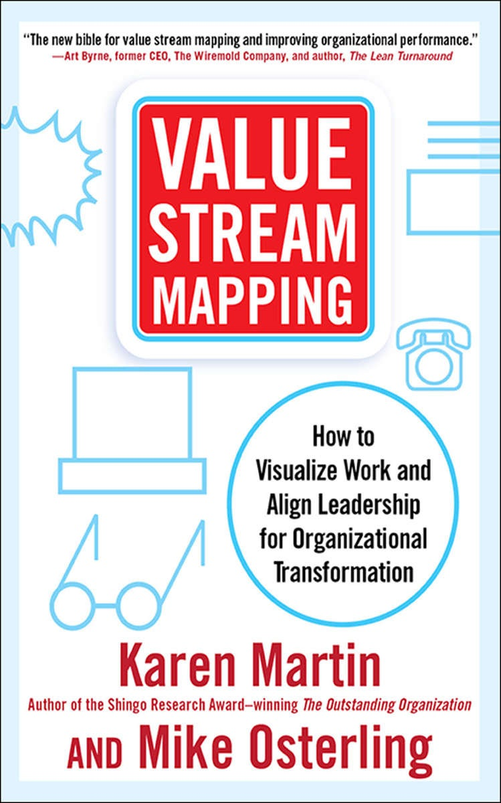
“价值流图析(Value Stream Mapping)常被误解和低估。从战略层面来看，它可以成为一块罗塞塔石碑，帮助打通组织内各自为政的孤岛，也可以成为激发和推动企业级转型的催化剂。Karen 和 Mike 又写出了一本精彩的指南。读它，实践它，分享它，传授它。”
—Steve Bell，《Run Grow Transform》作者
“《价值流图析》是一本’必读’之书，读完之后应该立刻’行动起来’。这是实现真正精益供应链的直接方法。”
—Ed Brekke，施耐德生产系统副总裁，施耐德电气
“价值流图析是精益工具箱中最重要的工具之一。如果正确运用——尤其是在非制造业环境中——它可以成为更广泛精益转型的基础。Martin 和 Osterling 创作了价值流图析的新圣经。对于任何行业改善价值流来说，这都是必备之书。正如他们正确指出的那样，‘一旦将事物分解为基本组成部分，几乎没有什么是不可管理的。’”
—Art Byrne，Wiremold 公司前首席执行官，《The Lean Turnaround》作者
“在《价值流图析》中，Karen 和 Mike 不仅提供了一本关于如何转型价值流的优秀实操指南，还展示了采用整体视角对组织文化和客户价值承诺所能产生的益处。无论是新手还是专家，每一页都有值得学习的内容。”
—Jeff Chester，Availity 首席营收官兼高级副总裁
“办公室里的每个人看起来都一样……一个人坐在格子间里面对着电脑显示器。价值流分析帮助团队学会真正看清工作本质，然后协作改进。这本书精彩地描述了这一过程，并配有优秀的示例，让你能够立即行动起来！”
—Jean Cunningham，《Real Numbers》作者
“Martin 和 Osterling 阐述了为什么价值流图析对任何组织都是必要的，以及如何将其作为实现战略转型的手段。他们出色地解释了是什么、为什么、怎么做，以及需要避免的陷阱。遵循本书的指南，看着你的绩效飞速提升。”
—Raju Deshpande，华美银行高级副总裁
“《价值流图析》是一本睿智而实用的指南，将帮助你领导组织中的转型工作。虽然有些人认为价值流图析只是一种’精益工具’，但 Martin 和 Osterling 正确地强调了从大局着眼、改善从供应商到客户以及所有中间环节的整个价值流的战略价值。本书充满了各种技巧和经验教训，帮助你避免错误，最大化价值流图析投入时间的回报。”
—Mark Graban，《Lean Hospitals》作者
“价值流图析帮助许多组织不仅理解如何看清现状，还理解如何改善和提升他们为客户生产和交付的价值。但是，理解如何在信息密集型企业中实现这一点一直是商业和工业领域的重大缺口。Martin 和 Osterling 释放并传递了相关原则、实践和工具，使组织不仅能够填补这一缺口，而且基于他们丰富的实战经验，能够理解、激活并广泛转型价值流，以最大化企业级客户价值。”
—Jim Huntzinger，Lean Frontiers 总裁兼创始人，《Lean Cost Management》作者
“尽管数十年来价值流图析一直被视为精益转型的核心工具，但仍然存在困惑。Karen 和 Mike 将图析置于其适当的位置——作为一种方法论，帮助高绩效团队识别浪费、共享未来状态愿景，并制定有激情和目标的有意义行动。”
—Jeffrey Liker，《The Toyota Way》作者
“价值流图析是真正掌握供应链运作情况的最佳工具——让你能够集中改善活动以获得最大收益。在让组织各层级参与价值流图析应用以推动高影响力持续改进方面，没有人比 Martin 和 Osterling 做得更好。这是该主题最好的书籍之一——购买它，教授它，使用它——你的供应链将成为竞争利器！”
—Kevin Limbach，TaylorMade-adidas 高尔夫公司美国运营副总裁
“Martin 和 Osterling 写了一本优秀的书，向你展示如何正确进行价值流图析。遵循他们的建议，你的组织将获得更好服务客户、创造前所未有的利润和敏捷性所需的深刻而彻底的变革。”
—Brian Maskell，《Practical Lean Accounting》作者
“在前人著作的基础上，《价值流图析》超越了工具本身，有效地描述了识别、改善和管理价值流所需的领导力实践。特别值得注意的是关于维持改善的讨论，这往往很困难甚至被忽视。Karen 和 Mike 描述了适当的领导力系统如何使这变得出奇地容易。广泛的案例使这本书对任何行业或职能都有价值。”
—Kevin Meyer，Specialty Silicone Fabricators, Inc. 前总裁，《Evolving Excellence》作者
价值流图（Value Stream Mapping）已从最初极客们用于重新构想和重组制造业务流程的工具，演变为一种能够实现深层组织干预和转型的方法。在《价值流图》一书中，Karen Martin 和 Mike Osterling 为那些致力于改善组织内部横向价值流动的实践者们提供了一份出色的指南。
—John Shook，精益企业研究所（Lean Enterprise Institute）主席兼首席执行官，《学会观察》（Learning to See）合著者
“这不仅仅是一本价值流图入门书。Martin 和 Osterling 精准把握了确保成功实施所需具备的关键条件，以及价值流图如何更好地凝聚领导团队。这些宝贵的经验和洞见源自他们多年来在各类组织、企业和机构中推进和部署精益的实践。”
—Rick Sunamoto，HM Electronics 公司制造副总裁
“任何复杂的旅程都不应该在没有地图的情况下开始。Karen 和 Mike 用清晰的写作风格和有力的案例阐明了这一点，并提供了改善任何组织规划和绩效所需的工具。这本书是领导力工具库中的重要补充。”
—Daryl Tol，佛罗里达医院沃卢西亚-弗拉格勒市场总裁兼首席执行官，基督复临健康系统
“价值流图在优秀组织手中是一种强大的工具。Martin 和 Osterling 的这本新书是一份实用指南，将引导你完成为客户创造价值的重要步骤。无论你在医疗保健还是其他服务行业工作，价值流图都能像改善我的组织一样改善你的组织。”
—Daniel Wolcott，塔科马地区医院总裁兼首席执行官，基督复临健康系统成员
“Karen Martin 和 Mike Osterling 再次出手！《价值流图》提供了清晰的思路和循序渐进的指导，这正是帮助办公室环境中的精益实践者和领导者所急需的。他们提供的经验和实用性将使这本书成为企业价值流图领域最新的案头常备、频繁参考的指南。”
—Jerry Wright，LEANwRIGHT 公司总裁，DJO Global 公司前精益与企业卓越高级副总裁
版权所有 © 2014 Karen Martin 和 Mike Osterling。保留所有权利。除美国1976年版权法允许的情况外，未经出版商事先书面许可，不得以任何形式或方式复制或分发本出版物的任何部分，也不得将其存储在数据库或检索系统中。
ISBN: 978-0-07-182894-9
MHID: 0-07-182894-X
本电子书中的内容也出现在本书的印刷版中：ISBN: 978-0-07-182891-8，MHID: 0-07-182891-5。
电子书转换由 codeMantra 完成
版本 2.0
所有商标均为其各自所有者的商标。我们仅以编辑方式使用商标名称，而非在每次出现商标名称后都加上商标符号，这样做是为了商标所有者的利益，无意侵犯商标权。本书中出现的此类名称均以首字母大写形式印刷。麦格劳-希尔教育电子书可享受特殊批量折扣，用于促销和推广活动，或用于企业培训项目。如需联系代表，请访问 www.mhprofessional.com 的联系我们页面。
这是一部受版权保护的作品，麦格劳-希尔教育及其许可方保留对该作品的所有权利。使用本作品须遵守以下条款。除1976年版权法允许的情况以及存储和检索一份作品副本的权利外，未经麦格劳-希尔教育事先同意，您不得对本作品或其任何部分进行反编译、反汇编、逆向工程、复制、修改、创建衍生作品、传输、分发、传播、出售、出版或再许可。您可以将本作品用于个人非商业用途；严禁将本作品用于任何其他用途。如果您未能遵守这些条款，您使用本作品的权利可能被终止。
本作品按”原样”提供。麦格劳-希尔教育及其许可方不对使用本作品所获得的结果的准确性、充分性或完整性作出任何保证或担保，包括通过本作品中的超链接或其他方式可访问的任何信息，并明确否认任何明示或暗示的保证，包括但不限于对适销性或特定用途适用性的暗示保证。麦格劳-希尔教育及其许可方不保证本作品中包含的功能将满足您的要求，或其运行将不间断或无错误。无论是麦格劳-希尔教育还是其许可方，均不对本作品中的任何不准确、错误或遗漏承担责任，无论原因如何，也不对由此产生的任何损害承担责任。麦格劳-希尔教育对通过本作品访问的任何信息的内容不承担任何责任。在任何情况下，麦格劳-希尔教育和/或其许可方均不对因使用或无法使用本作品而导致的任何间接、附带、特殊、惩罚性、后果性或类似损害承担责任，即使他们中的任何一方已被告知此类损害的可能性。本责任限制适用于任何索赔或诉因，无论该索赔或诉因是基于合同、侵权还是其他原因。
献给我的妻子 Dianne，以及我们的儿子 Ryan 和 Sean，感谢他们在这段旅程中的牺牲和支持。
没有他们的激励和耐心，这项工作将无法完成。
献给 Jenna Martin，一位天生的精益思考者，也是一个充满才华的人。
我深深感谢从这位充满激情和善良的年轻女士身上不断学到的一切。
[1 价值流管理]
[2 奠定基础与推动成功]
[3 理解现状]
[4 设计未来状态]
[5 制定转型计划]
[6 实现并维持转型]
[附录A：价值流图标]
[附录B：门诊影像价值流]
[附录C：采购价值流]
[附录D：维修服务价值流]
[附录E：货架系统价值流]
[附录F：软件开发价值流]
很少有人知道我们考虑过多少次写这本书，又放弃了多少年。我们觉得价值流图(Value Stream Mapping)这艘船已经开走了。但是，我们与来自各行各业的改进专业人士和领导者交流得越多，了解到他们在追求卓越运营(Operational Excellence)过程中遇到的困难越多，我们就越意识到商业图书市场确实存在一个需要填补的空白。促使我们写这本书并分享我们对价值流图看法的真正催化剂，来自于同行、我们之前著作的读者、研讨会和网络研讨会参与者、社交媒体联系人以及我们客户的反复请求。许多听说过或尝试过价值流图的人，希望获得比现有资料更深入的理解。因此，我们的第一批感谢（是的，我们是批量感谢）要送给所有那些提出请求、慷慨接受我们不想写这本书的理由、然后再次提出请求的人。没有你们的鼓励和坚持，这本书可能不会存在。
我们的第二批感谢要送给Dan Jones、Beau Keyte、John Krafcik、Jeff Liker、Drew Locher、Daniel Roos、Mike Rother、John Shook和Jim Womack。这些先生中的每一位都是先驱者，为全球企业和行业的转型做出了贡献。没有他们深厚的知识和思想领导力，我们可能仍在苦苦思索如何最好地帮助组织设计有效且高效的运营，如何更深入地与客户建立联系，如何学会看清其绩效的真相，以及如何简化改进和组织转型的过程。没有这些伟大的思想和他们的洞见，我们既不会有客户经验，也不会有完成这本书所需的知识。
也要感谢iGrafx的精英团队——特别是Kim Scott和Gretchen Burthey——他们慷慨地付出时间、专业知识和开发技能，以找到最佳方式呈现价值流图，使其同时适用于印刷版和电子书。你们的响应速度和耐心真是天赐之福。
衷心感谢我们的朋友和同事，他们抽出时间阅读本书，提供了建设性的反馈，并在适当时给予了鼓励：Steve Bell、Ed Brekke、Art Byrne、Jeff Chester、Jean Cunningham、Raju Deshpande、Mark Graban、Jim Huntzinger、Jeff Liker、Kevin Limbach、Brian Maskell、Kevin Meyer、John Shook、Rick Sunamoto、Daryl Tol、Daniel Wolcott和Jerry Wright。特别感谢Ed Gwozda，他慷慨地阅读了两遍手稿并提供了精准的反馈。
另一轮感谢要送给McGraw-Hill的出色团队及其大家庭，他们使出版一本书的过程比我们从许多其他作者那里听到的要愉快得多：Knox Huston、Courtney Fischer、Jane Palmieri、Maureen Harper、Mary Glenn、Scott Rattray，还有Alison Shurtz和Kristen Eberhard，她们对细节的敏锐眼光令我们惊叹！
最后，深深感谢出版大师John Willig，感谢他坚定不移的支持和言行一致的卓越能力。“继续前进，Willig先生！”
我们将价值流思维(Value Stream Thinking)视为商业成功的基本心态。没有它，组织无法开发以客户为中心的流程，也无法以最好地服务其存在理由的方式进行组织。
价值流图是一种实用且高效的方法，用于学会发现并解决工作完成方式中的断层、冗余和缺口。它不仅仅是一个工具。它是一种基于团队的方法论，我们认为它是一种经过验证的管理实践的基础。根据我们的经验，不使用价值流图来理解和改进其运营的组织，不太可能取得卓越的绩效。我们相信它一直是商业管理中缺失的环节，如果有效使用，有能力解决许多商业问题。我们意识到这是一个大胆的声明，对单一方法论来说是很高的期望。但我们鼓励您暂时搁置怀疑，直到您读完本书的最后一页，并按照价值流图最初的设计意图进行实验。
1999年，开创性著作《学会观察》(Learning to See)出版，改变了许多人看待工作如何流经企业——或者更常见的是，工作如何不能流畅流经企业——的方式。作者Mike Rother和John Shook改变了运营设计的进程——其影响程度可能甚至超出了他们自己的预期。价值流图提供了一种整体性和可视化的方式，用于深入理解工作如何完成，并设计改进后的未来状态。Rother和Shook还向我们介绍了一个比以往改进方法论更强大的流程测量框架(Process Measurement Framework)。因此，无数组织改变了向客户交付价值的方式、衡量绩效的方式以及设计工作以最大化绩效的方式——在制造业领域。
2004年，Beau Keyte和Drew Locher出版了第一本关于如何在制造业管理领域使用价值流图的开创性著作。《完整精益企业》(The Complete Lean Enterprise)不仅探讨了在信息密集型环境中进行分析、设计和管理时需要考虑的细微差别，还引入了我们见过的最强大的流程分析指标——完成且准确率（%C&A）。尽管这本书在将价值流图应用于办公环境方面具有开创性意义，但它仅关注制造业内的办公环境。
改进领域自2004年以来取得了长足进步。随着对丰田成功之道的持续研究以及相关成果的不断积累，我们对精益管理实践的理解也在加深。各行各业的组织现在都在采用精益原则和实践，并应用精益工具来支持这些实践。我们撰写本书主要面向信息密集型办公、服务和知识工作(knowledge work)环境中的组织——包括通信、建筑、教育、能源、娱乐、金融服务、餐饮服务、政府、医疗保健、酒店、情报、法律、执法、军事、非营利组织、出版、房地产、研发、零售、社会服务、科技、运输、旅游等行业——以及希望转变办公区域运营方式以更好地为客户创造价值的制造商。我们着手解决在组织中经常看到的三个重大脱节问题：
许多组织仍然不熟悉价值流图作为一种方法论、精益业务管理的基础以及构建卓越组织的手段。因此，他们在取得可衡量的改进和采用以客户为中心的思维方面进展较慢。
许多已采用价值流图的组织未能充分利用这一方法，因为他们没有完全理解这种方法的为什么、是什么和怎么做——尤其是在办公、服务和知识工作环境中。例如，未能让领导层参与、未能采用跨职能团队以及未能包含相关指标，往往导致未来状态设计不尽如人意，束之高阁。
许多组织在误用价值流图，因此无法获得该方法提供的全部收益。例如，在流程层面使用价值流图进行映射完全忽略了价值流图的核心要义：从宏观层面审视工作系统，以实现组织范围内的协调一致。
我们希望您能利用本书开始将价值流图作为管理业务的手段，或者对于已有价值流图经验的组织，作为反思和提升价值流图工作效果的参考资源。有太多业务问题需要解决，有太多机会需要把握，我们不能在缺乏高效手段的情况下完成这些重要工作。
虽然我们撰写本书专门针对办公、服务和知识工作环境中的价值流图，但大部分内容也适用于制造业的生产价值流。由于我们详细介绍了谁应该绘制、如何规划和执行绘制工作，以及绘制后需要采取哪些步骤，制造业从业者也将从这些内容中受益。
本书重点介绍价值流图的益处、如何规划和执行价值流图活动，以及如何管理价值流以维持成果并推动持续改进。解决具体的价值流问题和利用潜在机会的方法超出了本书的范围。虽然我们提到了潜在的工具和对策(countermeasures)，但没有详细解释。关于几乎所有类型的精益工具都有大量的专著。价值流图引导者需要熟练掌握各种潜在对策。
撰写一本能满足每位读者特定需求的书是一项挑战。人们往往难以将概念应用到自己的环境中，过于关注所给示例的具体细节，而非概念本身。我们开始撰写本书时，原计划在正文中纳入来自不同行业和场景的价值流图来说明绘制的方法要素。写作过程中，我们决定改为使用一个可适用于任何环境的通用图来逐步讲解创建图表的过程。我们做出这个决定是为了确保最高程度的学习效果，并尽量减少读者因难以看到概念相似性而产生的干扰——例如，患者流程与软件开发之间，或诉讼与商业建筑设计之间的相似性。我们在全书中使用通用图来说明构建价值流图的渐进过程。
考虑到整合实际（脱敏）图表的好处，我们在附录B至F中收录了五套行业特定的价值流图，使读者不仅能够看到工作和信息如何在图中呈现，还能看到实际价值流图通常具有的不同复杂程度。每个附录都包含当前状态和未来状态价值流图，以及显示当前状态汇总指标和未来状态设计预测指标的表格。
这些示例代表三种类型的图（完整价值流、支持价值流、
和价值流片段）并说明不同环境中的地图的相似点和差异点。我们两人曾在几乎所有行业和环境中主持过基于团队的价值流图绘制活动（或为绘制价值流图的人员提供咨询）。我们相信这五个示例为您提供了坚实的基础，帮助您想象在您的环境中完成的价值流图应该是什么样子。
虽然我们为每张图都提供了解释，但我们将细节限制在那些与理解”全局”最相关的内容上。我们的意图是强调我们认为最相关的具体学习要点。我们主持的每一次绘图活动都提供了足够的素材来撰写详细的案例研究，但这不是附录的目的。
4. 为了清晰、便捷和便于出版，我们使用 iGrafx Flowcharter 来创建本书中价值流图的电子版本。请不要认为价值流图必须转换成某种电子形式。相反，我们首先使用纸张和便利贴在墙上创建地图，并建议您也这样做。也就是说，将手工制作的价值流图数字化提供了一种更容易分享、存储和修订地图的方式。如果您的价值流图相当简单，拍一张照片可能就足以创建一种电子方式来分享和存储您的地图。但如果地图比照片能够充分捕捉的内容更复杂，或者您希望能够自动计算用于衡量改进的关键汇总指标，那么软件就会成为您的好帮手。还有其他几种可用于以电子方式记录价值流图的软件选项。我们更喜欢 iGrafx。
本书提供了一系列指南（而非硬性规则），我们发现这些指南可以深化成果并加速改进。其中一些指南涉及实际的绘图惯例，而另一些则涉及领导层参与、事件顺序、绘图执行和部署未来状态设计。与任何方法论一样，您可能需要调整我们的观点以适应您的环境。也就是说，请确保您调整的理由是合理的，并且您没有拒绝那些能让您获得价值流图所提供的最大收益的新思维方式和行为。
最后一点说明——这是一个警告：请记住，虽然工具对于绩效改进是必要的，但它们并不充分。与其将价值流图仅仅视为减少运营浪费的工具，不如将价值流图更广泛地用作转变领导思维、定义战略和优先级、并确保客户获得高价值（而不仅仅关注减少运营浪费）的方法论——这才是价值流图最闪耀的地方。
现在让我们深入探讨。还有很多东西要学。
在大多数组织中，没有一个人能够描述将客户请求转化为商品或服务所需的完整系列事件——至少不能详细描述组织绩效的相关细节。这种理解上的差距会导致这样的问题：在一个职能部门进行改进，却在另一个部门产生新问题。这种问题会导致添加增加运营成本的流程，但并不能真正解决根本原因位于上游的问题。这种问题会促使善意的公司实施昂贵的技术”解决方案”，但这些方案几乎没有解决真正的问题或改善客户体验。
对工作如何流动——或者更常见的是，如何不流动——缺乏理解，而这个工作系统的唯一目的是向客户交付价值，这是一个导致糟糕绩效、糟糕商业决策和糟糕工作环境的根本问题。当一家公司试图在不清楚理解组织各部分如何契合以及如何向客户交付价值的情况下运营时，优先级冲突、部门间紧张关系，以及在最坏情况下领导团队内部的争斗都是常见的结果。当组织试图在没有明确定义的、以外部为中心的改进战略（将客户置于中心）的情况下进行改进时，会浪费大量的时间和金钱。这就引出了价值流(Value Stream)和价值流图(Value Stream Mapping)的概念。
价值流(Value Stream)这个术语由詹姆斯·沃麦克(James Womack)、丹尼尔·琼斯(Daniel Jones)和丹尼尔·鲁斯(Daniel Roos)在发起精益运动(Lean Movement)的著作《改变世界的机器》(1990)中创造，并由詹姆斯·沃麦克和丹尼尔·琼斯在《精益思想》(1996)中进一步推广。价值流是组织为满足客户请求而进行的一系列活动。更广泛地说，价值流是设计、生产和向客户交付商品或服务所需的一系列活动，它包括信息流和物料流的双重流动。大多数价值流都是高度跨职能的：将客户请求转化为商品或服务的过程流经组织内的许多职能部门或工作团队。
扩展价值流包括在客户订单之前的活动（例如，响应报价请求、确定市场需求、开发新产品等）或在向客户交付商品或服务之后发生的活动（例如，开票和处理付款或提交所需的合规报告）。
虽然价值流中的许多活动是按顺序进行的，但其他活动可能与其他工作同时（并行）执行。价值流中的活动不仅仅是组织自身执行的活动：外部方甚至客户自己完成的工作也是价值流的一部分。
价值流有多种形式。主要类型的价值流是指外部客户请求并接收商品或服务的流程。其他价值流支持价值的交付；我们通常称之为价值赋能或支持性价值流。支持性价值流的例子包括招聘、雇用和入职；IT支持；年度预算流程；以及销售周期。复杂的创造性工作可以被视为拥有自己的价值流——从最初的概念到可执行的设计或产品发布。如果设计是为了满足特定客户订单，产品设计可以被视为一个价值流分段。
许多价值流可以在两个方向上不断延伸。例如，一个价值流可以包括从客户选择建筑师到图纸交付给总承包商的所有活动。或者直到施工规划完成。或者直到结构建成后的最终检查。或者直到收到施工工作的款项。产品生命周期也是一个价值流，包括规格说明、设计、供应链、制造、调试、运营，以及最终的退役和处置。患者护理的完整价值流可能包括预约安排、登记、诊断、治疗、后续护理，甚至可能包括收款。正如你将在第2章中了解到的，准备分析价值流时你要采取的第一步之一就是定义范围——审查的”边界标桩”或起点和终点。这在很大程度上取决于你需要解决的问题或你希望实现的绩效改进。
那么一个组织有多少价值流呢？这因情况而异。小型组织可能只有一个面向客户的价值流和许多内部支持性价值流。大型组织可能有5个、10个甚至数十个面向客户的价值流和数百个支持性价值流。哪里有请求和交付物，哪里就有价值流。
确定你的组织有多少价值流的一种方法是查看你的组织收到的内部和外部客户请求类型，以及每个请求所经过的高层流程的变体数量。经过相似流程序列的请求形成一个”产品族”。为了从按价值流查看工作和组织业务中获得最大收益，你最终会想要分析和改进每个产品族的价值流。迄今为止我们发现的最佳方法是价值流图，这是一种工具，可以帮助你可视化复杂的工作系统，以便你能够解决工作完成方式中的断点、冗余和差距。如果使用得当，价值流图远不止是一种设计工具：它是我们迄今为止见过的最强大的组织转型工具。一旦人们学会用价值流的方式思考，他们就很难再以任何其他方式看待工作。
价值流图的根源可以追溯到丰田汽车公司使用的一种称为”物料和信息流”的可视化图示技术。随着西方对丰田持续的业绩记录越来越感兴趣，并开始研究丰田的方法与自己的有何不同，我们了解到丰田专注于理解整个组织的物料和信息流是其能够持续保持高水平绩效的重要因素。因此，绘制这些类型的流程图成为精益运动中用于转型运营的标志性方法之一。但价值流图在所有领域都没有被清晰理解或有效利用。要理解原因，需要了解一些历史。
精益（Lean）是一个对不同人意味着不同事物的术语，这也是公司、政府机构和非营利组织在探索和采用精益实践时结果差异如此之大的原因之一。当你审视精益是如何被引入西方的历史，以及我们对这种管理方法的集体理解已经演变到什么程度时，你就能理解为什么对于精益是什么、不是什么存在困惑。
精益这个术语是由约翰·克拉夫西克在1988年的一篇文章中创造的，该文章基于他在麻省理工学院斯隆管理学院的硕士论文，随后在《改变世界的机器》和《精益思想》中得到普及。《精益思想》总结了沃麦克和琼斯研究丰田运营方式的发现，这种方法由大野耐一开创，由新乡重夫编纂，并深受W·爱德华兹·戴明、约瑟夫·朱兰、亨利·福特和美国杂货店的影响。《精益思想》将丰田的哲学和运营偏好围绕五个关键原则进行阐述——价值、价值流、流动（Flow）、拉动（Pull）和完美——并开启了一个时代，成千上万的公司试图模仿丰田的运营方式。丰田生产系统（TPS）——或精益，正如TPS及其更新版本丰田业务实践（TBP）通常被称呼的那样——成为众多顾问、作者和改进专业人士的宠儿。
虽然《精益思维》（Lean Thinking）为理解价值交付的基本概念奠定了强大的基础，但精益圈如今最紧迫的几个话题——领导力实践、文化、问题解决和教练辅导——当时并未被明确讨论。这并非对沃麦克和琼斯开创性著作的批评；他们显然站在了管理思维革命的最前沿。然而，二十年后，我们回顾过去可以发现，当时的精益学者、顾问和从业者对丰田持续成功背后的哲学根基和管理实践的完整图景，理解得是多么有限。随着越来越多的人和组织研究并借鉴丰田的方法，新的发现不断涌现。
八年后，杰弗里·莱克出版了《丰田模式》（The Toyota Way，2004年），这是第一部从哲学、流程、人员和问题解决方法等方面全面审视丰田运营方式的著作。虽然这部重要作品也解释了运营设计的机械层面，但莱克的社会学背景促使他更深入地探索文化和领导力要素。莱克将他的发现归纳为14条管理原则，涵盖了丰田组织和商业实践的精髓。
然而，即便对这些能够持续产生高绩效的基础要素有了更全面的认识，许多人仍难以看清那些让丰田实现如此高水平表现、在顺境中蓬勃发展、在逆境中快速恢复的核心信念和行为。或许我们西方人的思维方式无法理解一种我们大多数人从未亲身体验过的管理方式。又或许我们天生倾向于机械化的解决方案，因为它们更具体。毕竟，与人打交道是复杂而混乱的。部分原因可能在于那些顾问——即使精益文献中已充满了关于领导力、问题解决和日常改进在转型中发挥重要作用的信息——仍然专注于基于工具的”实施”，而非基于人的转型。无论原因如何，许多人对工具的热情始终不减。
价值流图（Value stream mapping）就是被广泛采用的工具之一。作者迈克·罗瑟和约翰·舒克研究了丰田的”物料和信息流图”，并在里程碑式著作《学会观察》（Learning to See，1999年）中将这一方法重新定义为”价值流图”。这本书凝结了罗瑟的研究成果和舒克在丰田担任领导职务十年的经验，为我们提供了第一个”看见”沃麦克等人所定义的价值流的具体方法。在使用价值流图进行运营转型超过十年、涉及几乎所有行业之后，我们认为它是迄今为止最强大但利用最不充分的改进”工具”。但价值流图的威力在于一个鲜为人知的事实：它远不只是一个工具。
价值流图提供了工作如何流经整个系统的整体视角，并在几个重要方面与流程图不同。首先，价值流图提供了一种有效的手段来确定改进的战略方向。在整个工作系统——即宏观图景——被充分理解之前，就急于钻进细节设计微观层面的改进，是导致次优化（suboptimization）的关键因素。如图1.1所示，工作具有不同的颗粒度（granularity）。价值流图从宏观视角为领导层提供了定义工作流程战略改进的手段，而流程级别的图则使实际执行工作的人能够设计战术层面的改进。正如您将在下一章中了解到的，这一区别表明需要一个比许多组织通常认为需要的更高级别的价值流图团队。
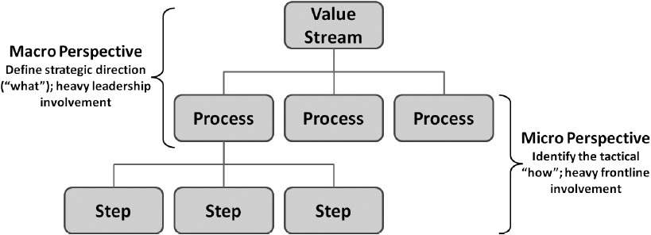
图1.1 工作的颗粒度
其次，价值流图提供了一个高度可视化的全周期视图——一个故事板——展示工作如何从某种请求发展到满足该请求。这个周期可以描述为：从请求到接收、从订单到交付、从响铃到响铃（从电话到收银机）、从摇篮到坟墓、或从报价到收款。循环视图将客户（通常既是请求者也是接收者）置于中心位置，这提供了一种强大的方式来观察整个工作系统与交付客户价值之间的关系。如图1.2所示，以可视化方式描绘工作周期通常包括三个组成部分：信息流、工作流和汇总时间线。第3章将详细描述每个组成部分。
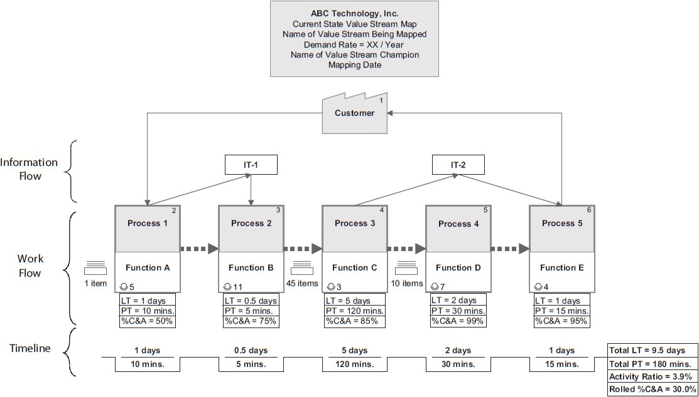
图1.2 基本的当前状态价值流图
第三，价值流图绘制的过程加深了组织对交付价值和支持价值交付的工作系统的理解，这有助于更好的决策和工作设计。通过将复杂系统提炼为更简单、更高层次的组成部分，使从高层领导到一线员工的每个人都能理解，组织建立了共同的决策基础。此外，简洁定义复杂工作系统所需的思维塑造，在重新设计工作以更快、更低成本、在更安全和更有成就感的工作环境中交付更大价值时，是一大优势。还有一个物流方面的优势：价值流图使团队能够在几天内充分理解工作如何流经复杂系统，而详细的流程图（服务于不同目的）可能需要数周或数月，而且过于详细，无法帮助做出有效的战略决策。
第四，价值流图的量化特性为数据驱动的战略决策提供了基础。通过测量整体价值流绩效，识别工作流经价值流时遇到的障碍和流程断点，组织能够有效推动持续改进，更好地满足客户和内部运营的双重需求。
最后，价值流图反映的是客户视角下的工作流，而非传统流程图那种以内部为中心的视角。许多组织的结构是一系列基于职能的孤岛（silos），与客户履约周期几乎没有关联。如图1.3所示，价值流图迫使组织从跨职能工作系统和产品系列的角度进行整体思考。虽然这种思维方式在未来状态设计阶段可能带来挑战，但这正是进步型组织必须拥抱的挑战。价值流图迫使组织做出选择：要么进行艰难的结构性变革以适应跨职能的现实，要么继续否认现实、固守过时的结构，并承受相应的绩效后果。
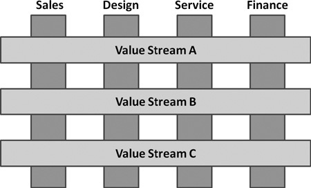
图1.3 垂直组织结构与水平现实的对比
这一点值得再次强调：执行得当的价值流图所带来的优势远不止于通常人们狭隘理解的工作流设计工具。虽然组织理所当然地将价值流图用于特定目的（改进价值流），但他们往往忽视了那些比图本身更持久、更深远的转型机遇。转型需要组织DNA层面的根本性变革；如果执行得当，价值流图可以在推动必要的思维模式和行为转变方面发挥关键作用。
价值流图是改进制造生产工作流的有力工具，但在将那些本身并不可视的工作可视化时，其作用可能更加强大。在大多数办公、服务、创意和知识工作环境中，工作主要围绕口头或电子形式的信息交换进行。将不可见的工作可视化，是获得工作流程清晰认知和共识的关键第一步。
价值流图在展示IT系统和应用程序如何促进（或未能促进）客户价值交付方面尤为有用。图过程往往揭示出组织中并非人人都了解的断点、冗余和不必要的复杂性。我们见证过技术领域因价值流图发现而发生的重大且快速的项目和预算调整。
在熟练引导者（facilitator）的手中，价值流图是一项高度统一的活动。它帮助人们看到改进的必要性，并围绕正在考虑的具体改进形成共识。通过获得跨职能、基于事实的当前状态理解所带来的组织级清晰度，开启了识别和接受变革需求的过程。未来状态价值流图（如图1.4所示，详见第4章）及其产生的转型计划（详见第5章）同样是有效的领导层共识工具，能够改善组织聚焦度并降低两个部门向相反方向发展的风险。价值流图的可视化特性促进了从一线到高层领导之间的共识建立对话。
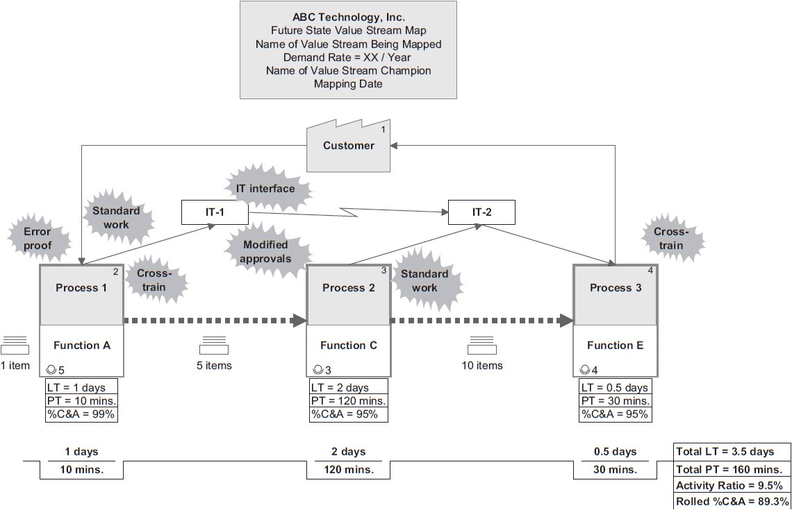
图1.4 基础未来状态价值流图
价值流图从价值流中涉及的每个职能和工作区域到外部客户建立了清晰的视线。这种清晰度帮助组织从内部导向思维转向客户导向思维，这正是持续创造更大价值的基础。
对于服务内部客户的价值流而言，客户连接同样重要。价值流图以高度可视化的方式展示内部供应商与客户之间的连接，并激发客户与供应商之间关于期望、要求和偏好的重要对话。
价值流图也是实现系统思维（systems thinking）核心要素的实用方法，系统思维是W·爱德华兹·戴明和彼得·圣吉工作的支柱之一。当组织看到各部门和流程之间的相互关联性时，他们会做出更好的决策，以更协作的方式共同工作，并避免常见且代价高昂的次优化（suboptimization）陷阱。例如，如果因繁琐的出院流程导致患者护理单元没有空余床位来接收急诊室患者，那么加快医院急诊科的患者流转速度就没有什么意义。而且，我们发现没有比价值流图更有效的方法来化解职能部门之间常见的紧张关系，比如销售与运营、质量与生产、IT与……几乎所有其他部门！价值流图将组织中分散的部分连接成一个整体，朝向一个共同目标：为客户提供更高价值。
在这方面，价值流图是重新思考组织结构、实现有助于客户价值交付的职能协调的有效工具。
回顾[图1.3]，传统的组织结构和企业管理是基于职能孤岛（Functional Silos）的，而客户体验在很大程度上取决于这些孤岛之间的互动。价值流映射（Value Stream Mapping）提供了一条清晰的客户视线，以及一种全面的方式来清楚地看到组织中传统上分散的各个部分是如何相互关联的，这可以成为按价值流重组的催化剂。价值流图还提供了无偏见的、基于事实的洞察，说明应该如何管理流程以实现并维持高水平的绩效。
商业变得越来越复杂，这使得价值流图在管理业务方面更加重要。几乎每个行业和组织都在应对越来越高程度的变化：客户类型、需求和期望的变化；系统输入的变化；从系统产生输出的流程变化；输出本身的功能和特性变化；组织与商品或服务最终用户之间相关方的变化；这些相关方所在位置的变化等等。产品定制化也在不断上升。价值流图是强大的工具，用于在宏观层面可视化和简化工作完成方式，以便做出更好、更快的战略改进决策。
将复杂的工作系统提炼到其最本质和宏观层面组成部分的练习，可以培养批判性思维技能，并为设计整个系统的改进创造更易管理的方法。同样，定义”产品族”的过程（在第2章中描述）帮助人们看到共性与差异，这种统一性的发现可以加速问题解决并减少变革阻力。对于许多组织来说，创建这些可视化故事板是第一次有任何一个人理解了整个工作流程。做得好的价值流映射可以在许多人中培养这种程度的洞察力。正如戴明（Deming）经常被引用的话：“如果你不能把你正在做的事情描述为一个流程，你就不知道自己在做什么。”我们要进一步说：如果你不能把你正在做的事情描述为一个价值流，你就不知道自己在做什么。价值流图提供了这种清晰度。
价值流图还能对抗一种心理倾向：认为你的世界比其他任何世界都更复杂，几乎无法管理。一旦被提炼到基本组成部分，很少有事情是无法管理的。当你能让人们就基本组成部分在宏观层面应该如何运作达成一致时，你就在达成具体细节的一致性和设计符合定义的”宏观”状态的具体细节方面迈出了一大步。
价值流映射成为使用PDSA循环（Plan-Do-Study-Adjust，计划-执行-研究-调整）来解决绩效问题、把握市场机会、规划新产品线和改进现有产品线的重要步骤。图1.5所示的改进的迭代和重复性质，最好通过将改进与更大的战略联系起来来实现。未来状态价值流图提供了战略框架（蓝图），在此框架内进行战术改进。
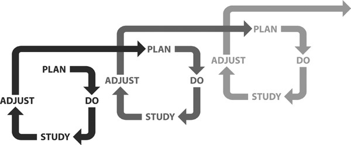
图1.5 持续改进的循环
因此，价值流图是高度迭代的工具，需要随着价值流的变化而频繁查阅和更新。我们建议将这些图实际张贴在战略位置，并定期举行站立会议讨论价值流绩效并推动持续改进。价值流图不应该只是存放在共享驱动器中。它们是关于你的组织如何运作的工作蓝图，应该在各个层面推动讨论和决策制定。
价值流图还可以作为一种简单的可视化手段，在入职过程中引导新员工。帮助人们了解他们在组织中的位置，满足了所有人对联系的基本需求，并从员工工作的第一天起就开始灌输整体思维（Holistic Thinking）。类似于机场或购物中心里写着”您在此处”的地图，价值流图向员工展示他们如何融入更大的图景，并清晰说明公司的运作方式。寻求提供更大客户价值的组织需要确保每一位员工都理解他或她与客户的联系。在新员工到来的那一刻就向他们灌输价值流思维，也服务于建立持续改进文化的重要目标。
如果你使用本书中的方法来规划和执行价值流映射，你不仅会体验到工作完成方式的可衡量改进，还会体验到重大的文化转变。正是价值流映射的过程而非图本身承载着最大的力量，它将变革性的思维方式和行为植入组织的DNA中。有效执行的价值流映射会改变人们的思考和行动方式、他们彼此互动的方式以及他们看待工作的方式。问题解决会有更丰富的结论，解决方案也更持久。客户更满意。工作环境压力更小、更有成就感、更安全。而且，假设客户高度重视他们所接受的商品或服务，从价值流视角开始的改进更有可能被持续，并带来营收和利润的双增长。对于政府机构和非营利组织而言，适当的价值流设计和管理可以降低成本、提高组织效率、降低私有化风险、释放现金用于机构再投资，并提高员工士气和服务对象满意度。
为了充分发挥价值流图绘制的威力，我们建议您避免以下常见问题：
我们经常看到的一个问题是，价值流图被机械地当作仅用于提升价值流绩效的工具。虽然这确实是绘图的重要原因，但如果只是为了创建价值流图而付出努力，却没有体验到随之而来的组织学习、文化转变和领导力发展方面的收益，就像买了一辆法拉利却只在限速35英里的城市道路上驾驶一样。
太多组织试图用价值流图来定义战术层面的改进，而这本应是流程图的领域，因此错失了价值流图绘制的好处。一个明显的视觉信号是：当我们看到所谓的价值流图延伸整面墙壁，包含30个、50个甚至更多流程步骤时。另一个视觉信号是地图按泳道格式排列，或者缺少信息流。虽然许多价值流图——或价值流图的某些部分——确实可能需要”向下钻取”才能设计、测试和实施实际改进，但那是流程级地图的领域：定义关于宏观层面变革具体如何设计、测试和实施的微观细节。这两种地图服务于截然不同的目的。
人们经常问我们如何判断何时应该使用价值流图绘制、何时应该转向流程级绘图。虽然这取决于具体情况，但我们几乎总是从价值流图绘制开始，以协调领导层并设定优先级。对于需要更深入探索的价值流部分，以及创建标准作业(standard work)时，我们会转向流程绘图，因为这些改进需求要求比价值流图所能提供的更高的具体性。
与前两个常见问题相关的是，在改善活动(Kaizen)期间创建价值流图。从本质上讲，这两项活动有不同的目的和预期成果，需要不同的人员，并遵循不同的流程。我们在改善活动中经常使用流程绘图，而价值流图绘制通常先于改善活动进行。让我们明确一点：改善活动是一种设计、测试和实施实际改进的特定形式，而价值流图绘制活动的目的是创建改进计划并达成共识。价值流图绘制活动是战略性的；改善活动是战术性的。改善活动应该以执行被改进工作的人为主，而价值流图绘制活动应该以监督被改进工作的人为主。
我们经常看到组织拥有设计精美的当前状态价值流图，却没有未来状态价值流图。或者有设计精美的未来状态图，却没有实现未来状态的行动计划。或者有详细的计划，却没有采取重大行动来实现未来状态。再次强调，价值流图绘制的目的是改进价值流。许多组织需要超越他们通常最感舒适的领域——分析和设计——在执行方面做得更好。
然而，我们确实有一个罕见的例外。有时候，仅仅为了建立改进的紧迫感，或者在领导团队中达成清晰和”思想一致”，创建当前状态价值流图可能是有益的。例如，我们曾与一些组织合作，其领导团队在优先事项甚至改进需求方面存在巨大分歧，因此我们将当前状态价值流图绘制作为学习和协调工具。通过从根本上理解组织内部存在的相互联系——或缺乏相互联系——领导者能够做出更好的决策，对彼此的痛点更加包容，并在解决组织问题时变得更加协作。看到不可否认的改进需求，也使抵触变革的领导者更难忽视改变的必要性。
有些人可能会反对以这种方式使用价值流图，如果我们说看到绘图止步于当前状态不令人担忧，那是在撒谎。毕竟，一旦组织清楚地了解工作如何流动（或者更常见的是，如何不流动），自然的下一步就是利用这些知识进行改进。因此，如果您想通过创建当前状态价值流图来加深理解并实现协调目标，请努力将其推进到下一步：设计改进的价值流，然后将其实现。正如歌德所说：
“知道是不够的；我们必须应用。愿意是不够的；我们必须行动。”
与在流程层面使用价值流图的危险相关，许多组织因为没有在绘图团队中纳入合适的人员而错失了丰富的收益。由于价值流图绘制是一项战略性改进活动，而未来状态图通常需要重大的组织变革，团队必须包括那些能够授权这种级别变革的人员。
变革。正如你将在第2章中详细了解到的，如果团队中没有人有权力做出改变，未来状态图和转型计划必须经过一个”销售”过程，这可能会将改进工作的启动延迟数周甚至数月，甚至可能永久停滞。除了行动延迟的风险外，当能够授权变革的领导者不在场亲眼目睹当前状态的现实、切身感受痛点、参与团队决策讨论时，决策质量往往会受到影响。根据我们的经验，事后的销售过程往往会演变成一场传话游戏，能够授权变革的领导者会推翻团队的决定，因为他或她无法完全理解这些决定背后的原因。
虽然领导者作为价值流图(value stream mapping)团队成员需要投入大量时间，但这无疑是组织启动绩效改进转型的最有效、最快捷的方式。我们发现，这也是塑造领导者思维方式和行为、加速组织转型的高效手段。我们将在第2章中再次讨论领导力的作用。
更糟糕的是将价值流图的创建委托给个人完成。价值流图是一项团队运动。如果只有投手一个人练习，棒球队不可能赢得多少比赛。学会观察——这本关于价值流图的开创性著作的恰当书名——说明了一切。让组织中只有一个人学会观察，益处甚微，尤其是如果这个人是专职的改进专员。而由一个人在战略层面决定工作应该如何开展，则是灾难的根源。
正如我们在本章前面提到的，典型的价值流图有三个关键组成部分：信息流、工作流和时间线。用时间来驱动改进是精益(Lean)运动为运营设计带来的最重要贡献之一。因此，时间线是价值流图最闪光的地方。使用”滴答作响的时钟”来衡量产出量和人们实际执行工作任务所需的时间，比任何其他分析工具都能更好地揭示工作流程。正如我们在引言中提到的，你将在[第3章]中了解更多，质量指标——完整准确率(%C&A，percent complete and accurate)——能够深刻揭示那些引发组织混乱、增加成本、造成挫败感、延迟交付，甚至在某些环境中导致伤亡的错误。
遗憾的是，我们经常看到”价值流图”上完全没有任何指标。这再次让人想起法拉利的类比：对高性能机器的低效利用。如果没有基准线作为衡量标准，你如何判断是否取得了改进？如果你不知道价值流的真实表现，你怎么知道应该关注什么？虽然一张图胜过千言万语，但没有指标的价值流图用途有限。而且可以说，没有指标的价值流图根本不是价值流图。
话虽如此，正如我们之前提到的，我们偶尔也会使用当前状态价值流图来实现非常具体的目标，例如提高人们对组织中各个分散部分如何连接形成整体的认识。我们也曾主导过专门帮助思维内向的领导者认识到从客户视角看待工作价值的绘图工作。但如果你的目的是改进，没有指标的地图会让你失去衡量成功的基础，也没有明确的目标来指导团队的设计工作。
我们从那些认识到精益管理实践价值并渴望开始收获成果的组织中最常被问到的问题之一是：“我们应该从哪里开始？”一个密切相关的问题是：“我们应该什么时候创建价值流图？”这些问题的答案取决于许多因素。理想情况下，寻求转型的组织已经拥有明确定义的使命、对战略方向的共识、清晰的业务目标，以及围绕有限数量改进优先事项的一致性——这些优先事项是在该财年达到或超越业务目标所必需的。如果没有，在组织在价值流图道路上走得太远之前，采用战略部署(strategy deployment)的实践是一个明智的基础性步骤。战略部署实践使组织能够创建一个行动计划，专注于有限数量的待解决问题和/或待利用的机会。一旦问题和机会被清晰定义，需要改进的价值流就变得相当明显了。
如果你的组织没有设定年度目标和确定有限数量优先事项的规范方法（并且对两者都保持专注），而且你也没有能力影响这种行为的发展，你可能希望通过选择一个正在遭受一个或多个绩效问题困扰的价值流来试验价值流图，这些问题包括交付缓慢、客户投诉、法规不合规、成本超支、生产力下降、安全违规、士气低落等。我们还建议在组织面临利润率下降、遇到新的竞争或市场份额流失时，或者从积极的角度来看，希望改进运营以提升公司市值时，审视完整的价值流。
另一种可能需要进行价值流图绘制的情况出现在，
使用A3管理方法解决问题时，团队需要对跨多个职能部门或工作团队的工作流程有清晰的高层认知。在这种情况下，价值流图成为获取必要理解的工具，用于发现问题并识别问题的根本原因。
我们还推荐将价值流图作为以下工作的基础工具：提高对客户的整体响应能力、设计和推出新产品线（包括前端的开发流程和后端的服务流程）、建立合作伙伴关系和合资企业、整合收购的业务，以及在考虑任何组织重新设计之前的必要前置活动。在后一种情况下，价值流图可以帮助你避免使用过时的思维模式做决策，比如常见的笼统观点”职能部门更高效”、“规模经济会降低成本”和”集中化更好”。这些千篇一律的信念可能正确也可能不正确；价值流图是深入探索集中化和分散化利弊、明确职能角色和职责的有效工具。选择在不了解价值流的情况下进行重组的公司可能会获得短期改善，但使用价值流思维来塑造重组更有可能带来长期收益。毕竟，如果你不真正理解需要做什么，你怎么能设计出满足需求的组织？
关于从哪里开始以及何时绘制价值流图，其底线往往取决于组织的成熟度和精益原则及改进方面的经验。经验较少的组织可能希望从识别一条可以从改进中受益、不太复杂、有积极参与的高管支持者且具有高可见度的价值流开始。更成熟的组织可能希望将价值流图作为其战略部署流程的一部分。无论哪种情况，价值流图都是解决价值流相关问题、提高标准、改进绩效以建立更强大组织、保持竞争领先地位并继续追求最优绩效的强大发现和设计工具。我们将最优绩效定义为：以不产生不必要费用的方式交付客户价值；工作流程无延误；组织100%遵守所有地方、州和联邦法律；组织满足（理想情况下超越）所有客户定义的要求；员工安全并受到尊重。价值流图是在所有方面实现卓越绩效的重要战略工具。
假设你的组织已准备好从价值流图的能力中受益——协调组织、识别重要工作并改善客户体验——第一步是规划这项活动，这是第2章的主题。
John Krafcik，《精益生产系统的胜利》，Sloan Management Review 30 (1)，1988年秋季，第41-52页。
参见W. Edwards Deming的《走出危机》(Out of the Crisis)（MIT出版社，2000年）和Peter M. Senge的《第五项修炼》(The Fifth Discipline)（Doubleday，1990年）。
Thinkexist，Johann Wolfgang von Goethe，http://thinkexist.com/quotes/johann_wolfgang_von_goethe/
值得重复：价值流是组织为满足客户请求而进行的一系列流程和活动。职能部门（如市场营销、财务、社区关系、IT）和期望的结果（如安全、高质量、合规性、员工参与和改善沟通）不是价值流。价值流通常跨越职能部门，并根据客户请求或定期需求（如定期维护或年度财务审计）产生特定的交付成果。
次优化(Suboptimization)发生在你改进系统的一个组成部分而忽略该变化对其他组成部分影响的时候。一个看似重要的改进可能导致整体工作系统表现更差。例如，如果某个部门成功缩短了周转时间，但更快的产出只是给下游部门造成了更大的队列和/或更多的工作，这种改进可能对整体系统的绩效产生负面影响。
参见我们早期的著作《基于指标的流程映射》(Metrics-Based Process Mapping)（Productivity Press，2013年）了解我们偏好的流程映射技术。该书包含一张带有Excel工具的CD，用于记录流程。
PDSA（计划-执行-研究-调整）循环是用于解决问题、改进和设计各类工作的几种科学方法之一。我们在本书中全程使用PDSA，但你可以用PDCA（计划-执行-检查-行动）、DMAIC（定义-测量-分析-改进-控制）、福特的8D方法论或任何其他循环科学改进方法来替代。有关PDSA循环的更多详情，请参见Karen的著作《卓越组织》(The Outstanding Organization)（McGraw-Hill，2012年）或任何改进相关书籍。
改善活动(Kaizen events)是为期两到五天的集中改进活动，期间一个隔离的跨职能团队针对定义的流程或工作区域设计并完全实施改进。更多信息请参见《改善活动规划者》(The Kaizen Event Planner)（Martin和Osterling，Productivity Press，2007年），并获取一套基于Excel的规划和执行工具。
指标(Metrics)是用于设定目标、反映当前状况、显示趋势、提供警告、推动纠正措施以及设计和衡量改进的绩效衡量标准。它们是跟踪目标绩效的手段。
战略部署（Strategy deployment）是一种定义组织优先事项并就此达成共识的方法，这些优先事项对于实现业务目标至关重要。该方法起源于20世纪50年代，也被称为政策部署（policy deployment）和方针管理（hoshin kanri）。更多信息请参阅Pascal Dennis的《做对的事》（Getting the Right Things Done，精益企业研究所，2006年）和Thomas Jackson的《精益企业的方针管理》（Hoshin Kanri for the Lean Enterprise，生产力出版社，2006年）。Karen的《卓越组织》（The Outstanding Organization，麦格劳-希尔，2012年）中提供了战略部署的改良版本。
A3是一种有效且系统的方法，用于培养人才和构建组织范围内强大的问题解决能力。更多信息请参阅《学会管理》（Managing to Learn，Shook，精益企业研究所，2008年）和《理解A3思维》（Understanding A3 Thinking，Sobek和Smalley，生产力出版社，2008年）。
反过来也成立：价值流改善过程可能催生对A3问题解决的需求。随着你对A3管理越来越熟悉和精通，你会更充分地理解这种情况。已经建立起强大A3文化的组织可能希望使用A3方法来定义和跟踪其价值流转型活动。
太多组织在还没有做好充分准备、活动范围也没有恰当界定的情况下就贸然开始价值流程图绘制。有效的规划是将价值流程图绘制从一个”工具”提升为能产生持久转型成果的管理实践的重要因素。
规划涵盖从让组织为价值流程图绘制中挑战范式的方面做好准备，到范围界定、团队组建，以及规划谁、什么、何时、何地等后勤事宜。规划阶段代表宏观层面PDSA（计划-执行-研究-调整）循环中的”P”。因此，它值得投入时间和对细节的关注，这些对于任何问题的成功解决、任何改进或任何经过恰当PDSA循环的项目执行都至关重要。
你需要做的第一个决定是如何构建你的绘图活动。我们推荐一种我们认为非常有效的三阶段方法。如图2.1所示，我们建议你在绘图活动开始前至少四周就开始规划准备。这将给你充足的时间来制定章程（稍后描述）、建立领导层支持、组建合适的团队、收集相关数据，并让你的组织为价值流转型过程做好准备。本章讨论”准备”步骤。第3章和第4章将向你展示创建当前状态和未来状态价值流程图的具体方法，第5章和第6章则概述如何制定和执行价值流转型计划。
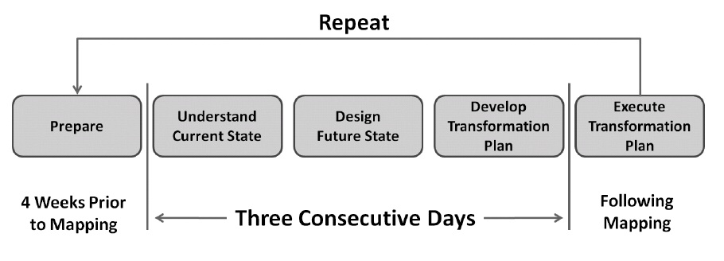
图2.1 价值流程图绘制阶段与时间安排
对于中等到复杂的价值流，我们发现最有效的做法是连续三天创建图谱并制定转型计划，在此期间团队专注于三个不同的改进阶段：发现、设计和规划。三天模式充分利用了深度专注的优势。如果在过程中引入间隔，你会打断团队的势头，并在团队成员重新聚集时产生心理上的返工需求，他们需要回忆起上次进展到哪里以及为什么做出那些决定。会议之间的间隔越长，团队遇到的返工就越多。而且，即使是召集一次高层绘图团队就已经够难的了。每次需要同一个团队重新聚集时，日程安排都会变得越来越困难。
绘图活动产生三个交付物：当前状态价值流程图、未来状态价值流程图和价值流转型计划。虽然图2.1显示这三个交付物的活动之间有清晰的分界，但当前状态绘图延伸到第二天的第一或第二个小时，或未来状态绘图延伸到第三天的第一或第二个小时，这些都是常见的情况。
执行价值流转型计划应该在绘图活动结束后立即开始。正如我们稍后在本章中将讨论的，执行时间框架是在准备绘图章程时确定的。但在讨论章程制定之前，让我们先退后一步，考虑一下你的组织可能需要的准备工作，尤其是在第一次价值流程图绘制活动之前。
请记住，在许多情况下，组织从未研究过他们从最初的客户请求到交付该请求的整个工作方式——在某些情况下，还包括收到货物或服务付款。或者，如果他们研究过，也是在如此微观的层面上操作，以至于任何人都难以看到整个工作系统是如何组合在一起的。陷入细枝末节是流程改进努力未能产生可持续成果的常见原因，这也是为什么将价值流程图绘制纳入改进流程能帮助组织取得更快更深入进展的原因。
从文化考量和组织准备度到价值流程图绘制的具体操作，在你开始创建实际的价值流程图之前，需要考虑许多因素。为了获得最大成功，关键是你要向绘图团队和尽可能多的领导者提供价值流程图绘制的概述。我们还建议绘图团队至少具备精益原则和一些更常见对策的基础理解；如果团队成员至少不具备初步的精益知识，设计未来状态可能会有些困难。
如果预期改进的涟漪效应范围相对有限，你可以限制
向团队成员以及负责监管价值流转型相关领域的领导者进行概述介绍。如果预期的改进将影响大部分员工，最好让整个领导团队都参与进来。在最初几次价值流程图活动中，让来自支持服务部门（如人力资源、信息技术和财务）的领导也参与进来会很有帮助，这样他们也能开始看到组织内部的相互关联性，以及通过价值流视角审视工作的好处。最终，每位领导者都需要理解组织的关键价值流，以及他或她的团队如何支持向外部客户交付价值。
概述应包括对价值流定义的介绍、价值流程图的目的、它能带来的好处、如何实施，以及该活动将对组织产生什么影响。还应解释每日简报（本章后续会说明）的重要作用，以及团队成员、简报参与者和引导者在简报中各自扮演的角色。
概述可以在章程（charter）创建之前进行，这将简化章程的创建过程；也可以在章程初稿或定稿完成后进行。等到章程创建完成后再进行概述，可以为概述内容及其引发的讨论增添更具体的实际情境。
如果概述在章程完成之前进行，映射团队还需要参加一个更具体的会议，详细审查章程以设定背景和期望、明确范围、讨论角色和职责、确定参与规则并处理后勤事宜。理想情况下，这个会议应在映射之前举行，以便团队能够在活动第一天尽快开始映射。如果团队成员和/或引导者不在本地且无法进行虚拟概述，可以在映射活动第一天的前一两个小时进行概述，但这确实会占用映射时间。
另一个关键成功因素是让中层管理者和一线员工接触价值流的概念。当越来越多的人开始从整体视角审视工作（他们如何与客户连接，以及他们的工作如何与其他人的工作相互关联），每个人就会更积极地理解客户和业务，决策质量会更好，对变革的阻力也会减少。
价值流程图的成功程度在很大程度上取决于前期规划的投入程度，而这最有效且高效地体现在章程中。章程有四重目的：规划、沟通、对齐和建立共识。
我们使用图2.2所示章程的各种变体，其中包括每个单元格内容的简要说明。空白版章程可在www.vsmbook.com下载。如果你更愿意自己创建或使用组织已采用的标准章程，我们建议包含我们章程中的元素，将在以下各节中描述。
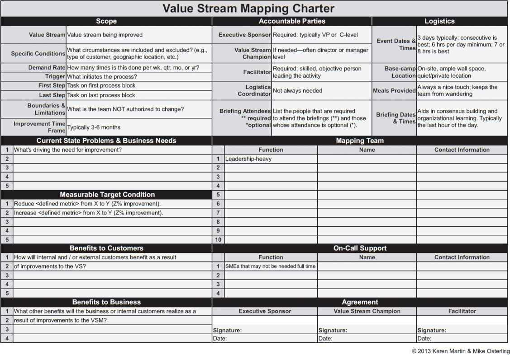
图2.2 价值流程图章程
本节定义映射活动的参数。明确定义的范围有助于确保团队中包含合适的人员，并降低团队在活动期间花费宝贵时间就关注重点达成一致的风险。目标是让映射团队做好准备，使其在活动第一天聚集之前就对任务有极其清晰的认识。我们通常包含的信息如下所述。
价值流
在这里，你描述要映射的价值流，无论是完整的面向客户的价值流（如软件开发、新客户实施、电影制作、抵押贷款申请、诉讼、急诊科患者护理、新设施建设等），价值流片段（较大价值流的一部分），还是不直接向外部客户提供产品或服务的价值赋能（支持）价值流。采购是一个功能示例，它既可以是价值流片段（如在生产价值流的预生产阶段购买材料和供应品时），也可以是支持价值流（如购买支持价值交付的办公设备或软件应用时）。附录包含所有三种类型价值流的示例：附录B、D和E是完整价值流的示例，附录C是支持价值流，附录F是价值流片段。
具体条件
在这里，你包含映射活动中要包含或排除的具体条件集——至少对于当前状态部分而言。虽然范围界定始终重要，但在办公室、服务和知识工作环境中进行价值流程图时，适当的范围界定更为关键，因为在单个产品族内往往存在显著的流程变异。（如我们在第1章中提到的，产品族（product families）包括通过共同流程的产品和服务。）
为了尽快完成当前状态映射活动，同时创造深入理解的环境，缩小范围并让映射团队考虑一组非常具体的当前状态条件是有帮助的。否则，你可能会花费大量时间试图理解所有可能的变异，而无法进行理解工作如何流动、断点在哪里等重要工作。
例如，以订单履行价值流为例。在许多组织中，订单遵循
根据订单类型的不同，流程可能会走向完全不同的路径。[图2.3]展示了如何恰当地缩小订单履行价值流片段的映射范围。粗边框的变体反映了团队在创建当前状态时关注的具体条件。
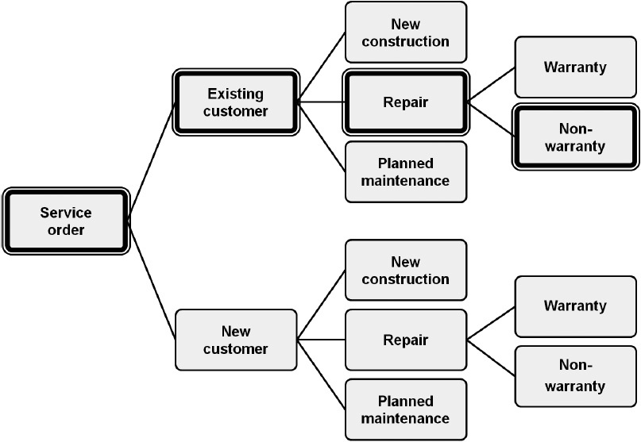
[图2.3 成功绘制当前状态需要适当的范围界定。]
或者，你可能有业务需求需要改进门诊影像价值流。根据患者是做核磁共振、CT扫描、乳腺X光还是普通X光检查，工作内容可能存在显著差异。在准备章程时，你可能会根据既定标准（如最高业务量、最高利润率、问题最多等）决定只关注CT扫描来创建当前状态价值流图（VSM）。你将在[附录B]中看到这个案例的当前状态和未来状态价值流图。
我们反复观察到一个有趣的现象：在许多情况下，被映射的特定条件最终可能只占该价值流总工作量的25%或更少（例如，儿科预约可能只占医疗诊所所有就诊的20%；只有15%的工程图纸需要经过复杂的审核流程）。然而，团队经常发现未来状态设计适用于价值流中75%或更多的变体。价值流映射常常表明，在宏观层面(macro level)，变异并没有”感觉上”那么多。*
简化对工作流程的思考可以高度统一认识，这是执行共识驱动改进的必要条件。†当人们看到宏观层面的实质性变异并不像微观层面看起来那么多时，就更容易在不引入不必要复杂性的情况下处理复杂问题。我们经常发现，无论流经价值流的具体工作类型是什么，都存在类似的绩效问题。不要害怕将范围缩小到超出你的舒适区。同样，在我们遇到的几乎每个案例中，一旦团队成员为当前状态价值流图设定的狭窄条件设计了未来状态，他们就会发现未来状态图适用于更广泛的条件集。
这是每天、每周、每月或每年的传入工作量。在某些办公和服务环境中，这个看似基本的数据点可能出人意料地难以获取。但这是你必须拥有的关键信息。如果不知道流经系统的工作量和工作类型，就不可能真正理解当前状态的绩效。如果不知道系统需要容纳的工作数量，就很难在系统中设计流动(flow)和拉动(pull)。同样关键的是，你需要知道需求变异的程度：工作是按规律、可预测的周期到达，还是不稳定的？将历史数据（未来模式的指标）与实时市场”情报”相结合是确定未来模式的最佳方式。
这是启动工作流经价值流的想法或行动。它可以是客户决定、某种外部事件、计划活动或其他行动。触发因素的例子包括客户提交采购订单、员工辞职、患者到达、原告提起诉讼等。
我们将第一步和最后一步称为团队集中注意力的”围栏柱”。虽然偶尔会有需要在映射活动本身期间调整围栏柱的情况，但你希望尽可能提前明确，因为团队组建取决于将包含在价值流图中的流程。提前定义范围也降低了活动期间”范围蔓延”(scope creep)的风险。在列出将包含在图中的流程的第一步和最后一步时，我们建议使用动词加名词的格式来反映流程的主动形式——例如，“录入订单”（而不是”订单录入”）、“登记患者”（而不是”患者登记”）等。
本节包含团队需要在其中运作的边界和限制（如有）。在这里，你要列出团队未被授权采取的决定和行动。它们可能与财务、系统、客户或市场、人员或组织性质或物理条件相关。我们遇到的例子包括：由于即将进行软件升级而不允许复杂的IT修改；规定的支出上限；不增加人员；不更改组织在价值流改进窗口期内尚未准备好处理的公司政策（例如，价值流映射活动可能在子公司或分支机构进行，该机构在转型时间框架内影响公司政策的能力有限）。虽然映射团队应该发现所有阻碍流动或价值交付的障碍——并在简报和分发给领导层的摘要报告中处理这些发现——但保持务实、避免营造不切实际的期望氛围、并承认在规定时间框架内无法解决的约束，也同样重要。
这是执行改进以实现未来状态设计的既定时间框架。您需要决定映射团队应该设计一个打算在90天、六个月还是一年内完全实现的未来状态。在某些情况下，改进的硬性截止日期基于时间敏感的业务需求（例如收购或新产品发布）。在其他情况下，您可能希望等到未来状态设计完成后，再根据组织吸收变革的能力，预估组织需要多少时间来完成一组既定的改进。
我们首选的运作方式是确定一个时间周期，并调整未来状态设计以适应该框架。我们通常建议组织采取较短期的方法，例如三到六个月，以推动行动偏好。较长期的规划更容易因分心、领导层优先事项转变以及技术、市场、监管环境等条件变化而停滞。话虽如此，激进的短期规划并非适合所有人。我们偶尔也会与客户合作进行更大规模、更慢节奏的价值流转型。
精心制作并广泛传达的章程的价值之一，在于您能够在组织上下左右之间就组织面临的问题及为何需要改进达成共识。清晰度是建立共识和推动变革的重要杠杆。
避免急于完成这一部分的诱惑。花时间识别、达成共识并简洁地传达跨整个价值流进行改进的两到五个首要原因，将在映射活动期间和之后为您节省大量时间，因为您无需向人们推销变革的必要性。问题和需求可能涉及财务、运营、市场、合规、人员或其任意组合。在可能的情况下，包含数据以量化问题并提供背景。
章程的这一部分反映了您计划改进的力度。您会注意到，在图2.2的价值流映射章程中，我们建议您不仅包含当前状态和未来状态的原始数字（从X到Y），还包含它们所代表的改进百分比。这在原始数字看似只反映微小改进但按百分比计算却意义重大的情况下尤为重要。例如，将整体质量从5%提高到15%可能看起来不足以宣布胜利。然而这些数字代表了200%的改进。反之亦然。缩短两周的交付周期可能看起来很重要——如果当前状态的交付周期是四周，确实如此（50%的改进）。但在交付周期为12个月的复杂价值流中，缩短两周代表不到4%的收益，可能不足以满足当前的业务需求。
在创建章程时尚不清楚用于衡量进展的基准（当前状态）指标的情况下，您可以先说明您寻求的改进百分比，然后在获得基准信息后再补充原始数字。
与清晰阐述研究和改进特定价值流背后驱动因素的原因类似，列出价值流改进对组织及其客户的两到五个直接和附带（间接）利益，是另一种为减少变革阻力铺路、加速改进执行以及从一线到高层领导加深”大局观”理解的方式。传达这些信息还能够在领导团队中预先建立共识，从而在执行转型计划时创造更专注和更有支持的环境。这一部分还提供了阐述可能更难衡量的利益的机会，例如减轻压力、改善工作关系等。
为了在价值流改进中取得最大成功，您需要指定人员担任明确职责的既定角色。下一部分描述的各方中至少需要两个：执行赞助人(Executive Sponsor)和引导师(Facilitator)。其他角色取决于许多因素，例如组织规模、结构和成熟度，活动是否由外部引导师主持等。
执行赞助人通常是副总裁、工厂或总经理，或对结果负最终责任的C级领导。理想情况下，这一必需角色由监管整个价值流的人担任。但在许多组织中，没有人监管构成价值流的所有职能，直到总裁或首席执行官层级。在小型组织中，总裁或首席执行官通常是担任执行赞助人的最佳人选。在大型组织中，执行赞助人通常是利益关系最深的高级领导。在极少数情况下，执行赞助人在价值流中是较小的参与者，但他或她比监管价值流中参与程度最高领域的高管拥有更强的影响力和改进热情。执行赞助人可能是也可能不是团队成员。至少，执行赞助人应积极参与章程的制定，在启动会上向团队讲话，参加汇报，并监控转型计划的进展。
理想情况下，价值流负责人应当对整个价值流的绩效负责，并且在层级制组织中，其职位应比执行发起人更接近实际工作一到两个层级。在没有设置这一专职角色的组织中，价值流负责人可以由负责价值流主要部分的总监或经理担任。除了较小的价值流外，这个人几乎总是映射团队的成员。
对于不太关键的价值流，如新供应商处理流程，或较小的价值流片段，如财务的月末结账，可能不需要高层领导的直接参与。决策的关键在于：未来状态设计涉及只有高层领导才有权做出的战略决策的可能性有多大、下级所拥有的权限有多大、价值流的关键程度如何，以及组织的成熟度。如果价值流只需要较小幅度的改进，那些承担更大责任的资深中层管理者可能就足以推动价值流改进。
选择合适的引导师可以说是价值流映射成功的关键因素之一。引导师扮演多种角色，从教师到计时员，从熟练的变革推动者到挑战者。优秀的引导师还能够从容应对冲突，具备出色的倾听能力，并且同样擅长引导团队完成映射活动的发现、设计和规划阶段。他们理解组织动态和变革心理学，善于以尊重和支持的方式挑战固有范式(paradigm)。优秀的引导师还能在各种环境中灵活应对，能够快速与组织各层级的人员建立联系并顺畅沟通。为保持客观性，引导师不应管理或参与被转型的价值流的任何部分。
此人负责预订作为映射团队大本营的会议室、订餐、准备物资（4×6英寸及更小尺寸的便利贴、36英寸宽的映射纸、剪刀、胶带或图钉、马克笔等）、设置网络连接等工作。内部引导师通常兼任后勤协调员。
每日简报是让组织围绕变革达成一致并吸引映射团队以外的相关人员参与的方式。根据组织在价值流映射方面的经验，简报还可以作为有效的推广和学习活动。在这种情况下，你可能需要邀请更多的利益相关者参加。简报也是获得全组织支持和领导层围绕即将到来的变革达成一致的重要步骤。理想情况下，所有相关领导都应在映射团队中，但考虑到目标团队规模为5至7人——且任何情况下不超过10人（本章后面会详细讨论）——这并不总是可行的。向人力资源、财务和信息技术等各支持职能部门的领导介绍价值流映射和系统思维(systems thinking)也很重要。在许多情况下，你需要让支持部门参与改进工作。让他们随着流程一起”成长”，比在需要快速达成共识和获得资源承诺时才让他们仓促加入要好得多。在下一节中，我们将更详细地介绍这些简报的目的、形式和后勤安排。
你的章程应包含后勤信息，如映射活动的日期和时间、映射团队在不进行价值流走访时（见第3章）使用的”大本营”位置、是否提供餐食，以及上述简报的日期和时间。
在选择团队大本营时，应选择有足够墙面空间来张贴36英寸宽映射纸的房间。同时也应选择能够舒适容纳参加简报的额外人员的房间。
我们强烈建议在现场而非酒店或会议中心举办映射活动。首先，团队需要便捷地接触价值流的流程和执行这些流程的人员。其次，虽然人们容易认为将团队隔离在工作场所之外可以让他们更加专注，但组织需要培养在正常工作环境中专注于关键活动的能力。请记住，执行得当的价值流活动所取得的成果远不止达成既定的目标状态(target conditions)。它们还有助于用更有效的运营方式取代适得其反的组织习惯。
特别是在刚接触价值流映射的组织中，我们建议你举办
如前所述，定期简报是活动中的重要环节。在三阶段映射活动中，简报服务于三个不同的目的。在第一阶段结束时，团队成员分享当前状态价值流图以及他们获得的深入理解。虽然领导层面对工作流转的现有系统真实情况时往往会感到震惊，但这是组织范围学习和协调的重要一步，有助于建立改进价值流的紧迫感。请记住，除了映射团队之外，当前状态简报通常是组织中任何人第一次接触到工作如何通过整个系统流转，并如此清晰地看到其中的脱节和功能失调。将当前状态的理解传播给映射团队以外的人，可以减少日后组织对变革的阻力。当达到临界数量的人都认同”是的，我们就是这样运作的”时，就很难再说”我们不需要改变”了。简报也是纠正对价值流绩效、角色和职责以及客户需求等方面假设和误解的有效场合。
在设计完未来状态（第二阶段）之后，定期举行简报——并确保所有相关方出席——是更为关键的一步。第二次简报提供了一种高效方式来达成对未来状态设计的共识，否则在未来状态价值流设计完成后需要经历一个”销售周期”。我们见过销售周期将改进启动推迟数月，在许多情况下甚至完全中止改进。让5到10位高薪领导花三天时间了解组织真正如何运作并设计全系统改进，却被组织中的其他人否决或无限期搁置整个项目，这是多么浪费时间、金钱和精力！
第三次也是最后一次简报包括对价值流转型计划（第三阶段）的回顾，同样服务于多个目的。首先，它展示了有效的规划实践。最后的简报是获取对高效行动计划承诺的绝佳范例，这些计划既不会因过于僵化而无法纳入实时发现，也不会因过于松散而在面对诱人干扰时无法创造所需的势头、问责制和专注力。当你在映射活动结束时与来自整个组织的领导一起，向他们展示团队打算如何取得进展，并获得他们对支持该计划的公开承诺时，你就已经领先一步了。
基于所有这些原因，在选择映射日期时考虑领导团队的可用性至关重要。我们见过太多价值流映射活动失败，就是因为某位关键领导正在休假，因此没有从实时学习、辩论和共识建立中受益，而这些对于日后更顺利的转型过程至关重要。请记住，转型价值流往往会产生相当多的组织干扰。领导们需要时间来适应计划中的改进，为他们的团队准备变革，并释放资源来支持转型活动。
章程中没有包含的最后一个后勤细节是准备走访价值流。
这项活动在第三章中描述，需要提前规划。工作区域需要准备好，如果需要特殊的门禁卡或权限，需要提前获得批准。
你的章程还应包括映射参与者名单。一般来说，只要价值流中的所有职能都有代表，团队越小，效果越好。5到7名参与者，代表在流程中发挥重要作用的所有职能，是最理想的。对于IT密集型的价值流，我们建议在团队中包含一名系统领域专家。团队人数在任何情况下都不应超过10人。超过10人会在走访价值流、让每个人积极参与活动以及有效引导方面造成后勤挑战。当”厨房里有太多厨师”时，还会增加遇到变革阻力和时间管理问题的风险。如果代表价值流中所有关键职能所需的人数超过10人，你应该更窄地界定价值流范围，或者举行更长时间的简报，邀请那些领导表达任何担忧或未来状态设计想法。
如果执行发起人或价值流负责人在团队中，他或她应该同时列在责任方部分和团队成员中。引导者不列为团队的一部分。
团队应该以领导层（通常是经理及以上级别）为主，他们能够影响和授权真正转变价值流所需的未来状态改进。我们曾引导过整个团队由副总裁和C级领导组成的价值流映射活动。在这些情况下，未来状态设计通常比由较低级别领导组成映射团队时更适合实现业务目标。挑战在于让高级领导承诺连续三天参加一个封闭的团队活动。
虽然高级领导不一定了解价值流当前表现的细节，但活动前的数据收集和价值流走访（在第三章中描述）可以满足这一需求。如果你让了解细节但无法授权变革性改进的较低级别领导加入团队，你就有可能在改进过程中引入延迟，因为你需要推销团队想到的具体对策（countermeasures）的必要性。
最后一个需要在团队中配置资深领导者的原因是：领导者越资深，就越能理解”大局观”，从而提出更具创新性（因此往往也更具颠覆性）的建议。请记住，我们讨论的不是流程级别的梳理，即团队设计战术性改进的那种工作。那类工作通常是价值流图绘制之后的必要后续活动，但在宏观层面的改进往往需要大胆的思维。我们对团队组成的建议是”尽可能往高走，接受必须接受的低限”，并在此过程中明确阐述团队构成的收益与风险。说服领导者投入三天时间并非易事，但通过清晰地识别业务需求以及解释为何他们的参与至关重要，可以增进他们对其参与是关键成功因素的理解。
随时待命支持适用于在价值流中扮演次要角色或为价值流中一个或多个领域提供间接支持的相关方。这些领导者通常需要参加简报会，但不需要全职加入团队。然而，他们需要在团队需要时立即响应，因此不应将日程排满无法中断的全天承诺。这一点需要谨慎处理。很容易将时间紧张的领导者或主题专家列为随时待命，但实际上他们需要作为全职团队成员参与。
根据组织的文化和成熟度，你可能需要也可能不需要在章程上设置签名区域，以传达对绘图活动及后续价值流转型的认可和承诺。如果你认为这有帮助，我们建议纳入执行赞助人、价值流负责人和引导师的签名。
相比”沟通”一词，我们更倾向于使用”推广”（socializing），因为它表明需要做的不仅仅是在公司范围内发送章程邮件。章程推广是塑造转型的重要步骤。它为改进的成功执行奠定基础，并降低在实际绘图活动数月后可能出现的障碍风险。
至关重要的是，你需要让三类群体理解章程：（1）受影响的领导层；（2）绘图团队成员；（3）将被纳入价值流走查以了解现状的相关区域的工作人员（详见第3章）。如果价值流中的工作人员将被要求演示工作任务，他们需要充分了解价值流图绘制的原因、内容、方式和时间。一线员工可能还需要为与他们不习惯接触的领导层级进行对话做好准备。必须建立一个安全的环境以促进坦诚交流，否则关于现状的真相可能会被恐惧所掩盖。
正如我们在第1章中提到的，价值流改进应与组织确定的业务需求紧密关联，并与组织目标和战略方向保持一致。如果确实如此，领导团队对于将价值流改进作为重要优先事项应该几乎不会有分歧。但对价值流图绘制尚不熟悉的领导团队仍需要理解这一过程、对范围提出意见、认同价值流改进是高度优先事项，并理解如何执行未来状态设计。
跳过与领导层推广章程这一关键步骤的组织（通过对话而非仅作为邮件附件），往往不得不绕过或应对本不应存在的障碍。与其冒险让问题在绘图活动中暴露，或在未来状态设计完成后才去争取承诺，不如提前进行艰难的对话并获得领导层对活动的承诺。
我们见过的最糟糕案例之一是：某组织未能让其完整的领导团队参与章程的制定和推广。在为期三天的价值流图绘制活动的第二天结束时，一位负责价值流中关键职能领域的副总裁宣布，团队正在针对”错误”的目标状态进行设计，且未获授权进行未来状态设计所依赖的关键改进。随后的争论揭示了三位领导者之间的重大分歧，而规划团队本应在制定章程时发现并解决这些分歧。不幸的是，领导者们当天无法调和各自不同的观点，因此团队——其中包括两家关键供应商以及两名分别从欧洲和中东飞来的员工——只能尽力完成一个修改后的未来状态设计并准备转型计划。未能在规划阶段让更广泛的领导者参与和/或适当推广章程所带来的不幸结果是：转型计划从未被完全执行。这是一个代价高昂的错误，对团队而言也是一次令人沮丧的失败。
最后一点：章程制定是一个迭代过程。当你开始确定范围、定义目标、组建团队和规划后勤时，新信息往往会浮现并改变之前的决定。为提高价值流图绘制的成功率，请保持谦逊，并采用包容性的章程制定流程。来自执行发起人或特定职能领域负责人的自上而下命令，与加速改进所需的共识构建方式恰恰相反。虽然章程应在绘图活动前最终确定，但在社会化过程中获得更深入见解时，有时需要进行修改。
你需要提前收集的数据在很大程度上取决于所绘制价值流的性质、改进驱动因素和已定义的目标条件。作为引导者，我们始终会提前要求的一项数据是未来一到两年的当前和预测客户需求（传入工作量或请求数量），以便未来状态设计能够适应增长或萎缩。我们还会要求提供量化内部或外部问题的质量报告（如果数据存在的话）。对于数据丰富的高容量流程，收集需求模式、服务水平、交付周期和生产力方面的数据可能会有帮助，但要确保不要让这变成数据收集练习而陷入分析瘫痪(analysis paralysis)。前期数据也不应取代绘图团队在价值流走访中直接观察到的内容。
我们通常采取的另一个准备步骤——通常在规划过程的很早阶段——是
走访或讨论价值流，以便我们估算走访价值流需要分配多少时间，以及地图可能会有多”大”。大致了解地图可能包含的流程块(process blocks)也有助于理解在社会化章程时需要包含哪些职能，以及为价值流走访准备工作人员。列出可能的流程块还能确保所有相关职能在绘图团队中都有代表。
在某些情况下，由于物理限制、虚拟工作环境或安全区域，我们无法走访完整的价值流，此时我们还会要求提供价值流中每个流程的在制品(work-in-process)数量（排队工作）。我们通常会等到绘图活动本身再收集所有其他数据，以便整个团队都能从决定什么是相关的这一过程中受益，并体验收集实时数据可能有多困难。毕竟，数据缺口是重要的发现！
一旦通过适当规划为成功奠定了基础，你就为重要的一天做好了准备：绘图活动的第一阶段，这是第3章的主题。
*在第3章中，你将学习如何处理即使在狭窄定义的范围内仍可能存在的流程变异。
本书中使用的”共识”(consensus)意味着团队完全承诺某个决定、计划或行动，即使并非所有各方都完全同意*该决定、计划或行动。
我们更倾向于使用对策(countermeasures)这个术语而非解决方案，因为解决方案*通常暗示着一定程度的永久性，这与建立持续改进思维(continuous improvement mindset)相悖。
深入理解当前状态价值流绩效是设计和实施改进的关键步骤。毕竟，如果你不了解工作今天是如何执行的，你怎么能改进工作流程呢？太多时候，善意的人们急于寻求”解决方案”，导致短期修复，并冒着使情况变得更糟的风险。对当前状态缺乏清晰认识，或者基于不完整的事实、假设和错误信息运作，会导致持续和反复出现的问题。
当前状态价值流图使组织中的每个人都能看到价值流绩效的真实情况。当当前状态价值流图在整个组织中社会化，人们聚集在一起并同意，是的，这就是我们目前的运作方式时，地图就开始实现更大的目的：建立共识以加速改进。值得重申的是：这正是许多人在价值流图绘制中做得不够的地方；如果使用得当，它的使命远不止于仅仅进行改进。虽然当前状态绘图的结果可能令人清醒（以如此可见和数据驱动的方式面对真相并不总是容易的），但它们对于围绕问题达成集体理解和共识极其有力。当改进设计和实施基于实际发生的事情，而不是基于对发生事情的不同感知或看法时，它会推进得更快，遇到的阻力也更小。
当前状态价值流图是一个可视化故事板(storyboard)，展示了工作目前是如何
工作如何完成。它展示了工作如何流动、谁在执行工作，以及价值流在绘制地图当天的实际表现。绘图团队成员经常争论说”我们今天看到的情况不是常态”，并想按照流程应该如何运作、过去如何运作或有时如何运作来绘制地图。我们观察到，当你要求人们描述价值流中的特定流程时，至少存在四个不同版本：管理者认为它如何运作、它应该如何运作（即书面程序，如果存在的话）、它实际如何运作，以及它可能如何运作。当前状态价值流图的目的是了解工作在当前环境中实际是如何执行的。由于当前状态地图代表的是某一时刻的快照，团队所做的观察和收集的指标反映的是那一特定日期的价值流表现。对于输入工作量、输入质量、在制品（WIP）积累或完成工作所需时间变化较大的价值流，团队应该记录这些变化，但地图应该反映价值流在绘制当天的实际状态。
在绘图活动的第一天，引导师应该准备好”大本营”会议室，在墙上挂上36英寸宽的纸，绘图团队将在上面使用4×6英寸的便利贴来构建地图。纸张长度应基于引导师前期工作对价值流的了解来确定。
绘图团队到达后，我们建议以团队成员自我介绍开始活动，即使团队成员彼此都认识。确定每个人在价值流中的角色有助于突出工作的相互关联性，并开始将思维方式从孤岛思维转向整体思维。你也可以建议团队成员在介绍自己和所代表的职能时，说明他们的外部或内部供应商和客户是谁，这同样是为了突出价值流各组成部分之间的相互关联性。让每位参与者分享他或她对三天绘图活动的期望和/或顾虑也很有帮助。如果团队成员的期望与已批准的章程不一致，应该在继续之前讨论这种分歧。但是，如果章程已经得到充分沟通，在这个阶段发现分歧的可能性应该基本消除。
介绍完毕后，执行发起人应该向团队讲话——如果可能的话亲自到场——重申改进价值流的业务驱动因素、他或她对绘图活动的期望，以及他或她对团队实现章程中列出的可衡量目标的信心。
执行发起人或价值流负责人还应该再次与团队一起审查章程，以便团队清楚范围和使命。即使章程已经得到广泛沟通，在绘图活动开始时再次审查它可以强化团队的共同使命，这在未来状态设计中当对变革的不适感可能出现时尤其有帮助。由执行发起人或价值流负责人在启动会上审查章程也清楚地表明章程属于团队而非引导师，绘图活动的成果归团队所有，而非引导师。
在流程的这个阶段，章程不应该被拿来讨论。除非有新信息浮现，团队应该承诺遵守在规划阶段确定的范围和可衡量目标。然而，这不应该是团队最后一次审查章程。当我们做引导时，通常会在活动期间多次重温章程，以强化要点、重新引导团队成员的精力，并在团队失去焦点时让他们回到正轨。
此时，执行发起人和/或价值流负责人将活动交给引导师，引导师在简短介绍后，审查活动的初步议程，并就能够创造最大成功的”参与规则”寻求共识（参见侧边栏中我们常用规则的示例）。我们使用”初步”这个词来描述议程，因为虽然引导师应该为活动制定可靠的计划，但需要留有一定的灵活性，以适应当前状态发现过程和未来状态设计可能需要的不同时长。
如果团队没有接触过精益思想、PDSA和价值流基础知识，引导师应该提供简要概述。然而，正如我们在第2章中提到的，最好在活动之前进行概述，这样就不会占用团队绘图所需的时间。你要尽可能在当天早些时候开始绘图。
我们通常与客户合作，选择符合文化和工作条件的参与规则。这些是我们最常用的”规则”。我们在启动会上获得团队对规则的同意，并根据需要进行修改。我们经常使用”三次敲击规则”：任何人如果觉得规则被违反了，可以在桌上敲三下，团队会进行处理。将规则张贴在大本营的显眼位置是减少偏离规则的有效方法。
活动准时开始和结束；守时至关重要。不要打断；团队保持100%的投入和专注。所有无线设备调至静音或关闭。不要振动。

笔记本电脑合上。

除休息时间或为了获取与工作直接相关的信息外，不使用电子邮件、即时消息或短信。

与该活动相关。

职级不是特权。

禁止相互指责和推诿。

集思广益，汇聚十人智慧胜过一人独断。

以创意代替资本，以思维代替金钱。

向外思考。消除部门壁垒和”我们”与”他们”的对立思维。不要做沉默的反对者。

鼓励尊重的分歧；但不允许态度恶劣。在制定好适当的信息传达计划之前，会议室里讨论的内容

不得外泄。

从你的词汇中去掉”不能”和”不行，因为……“。采用”可以，如果……“的

思维方式。

摒弃”我们一直都是这样做的”的思维。多问”为什么？““为什么不？”和”如果……会怎样？”

一次只进行一个对话；避免互相抢话。勇于表达。

启动会结束后，团队就可以开始工作了。他们应该首先在36英寸宽的纸张右上角做标记。

典型信息包括价值流名称、“当前状态”、包含和/或排除的条件、客户需求（工作量）、发起人和绘图团队成员的姓名，以及日期。

在我们介绍创建当前状态价值流图的流程之前，我们想向你介绍绘图过程中的一个重要部分，

这对办公室和服务环境中的绘图团队来说往往比较陌生：价值流走查（Value Stream Walk）。
创建当前状态图的关键步骤是实地走查价值流，也称为”去现场”（Going to the Gemba）。Gemba是一个日语术语，意思是”真实的地方，工作实际完成的场所”。通过去现场，团队能够观察工作、在工作环境中与员工交谈、直接了解流程障碍，从而更全面地把握当前状况。人们通常在自己的环境中与他人交流时更加自在；如果被要求到会议室帮助一个以领导为主的团队评估工作流程，可能会引发可以理解的焦虑，让他们感觉像是站在证人席上一样。因此，主动去找他们会更有效。
即使整个价值流都在隔间或封闭办公室中进行，通过实际走查流程，你通常也能获得更深入的理解。当绘图团队成员走查流程时，他们可以亲身体验价值流运行的物理条件。我们见过许多绘图团队看到、感受到、听到，有时甚至闻到需要改进的当前状态问题——如果他们仅在会议室中构建当前状态价值流图，这些问题永远不会被发现。此外，只有去现场才能体会到上游供应商和下游客户之间可能存在的物理隔离和分离，并观察是否存在可视化管理。
进行价值流走查的另一个原因是突破”非注意盲视”（Inattentional Blindness）——
当人们习惯了特定工作条件后可能产生的盲点。当”局外人”——不在流程中工作的人——有意识地、直接地研究工作环境时，他们往往能够发现那些原本可能被忽视的绩效问题根源。
为了使价值流走查真正有效，你需要提前做好被访问区域员工的准备工作，让他们理解走查的目标和精神（是为了理解，而不是评判）。员工需要明白，关注的焦点是工作系统设计，而不是个人表现。他们必须没有恐惧才能坦诚相告。我们经常强调，我们想了解真实情况，所以不必害怕告诉我们一切，这项工作是为了理解问题，而不是为了惩罚。毕竟，如果团队不了解问题出在哪里，他们怎么知道该把对策集中在何处呢？例如，我们曾主持过多次价值流绘图活动，期间员工透露了一些让领导层措手不及的违规行为，但这些信息对于了解情况至关重要，并很快得到了解决。如果没有高度的信任，这些问题可能就不会被揭示出来。正如
我们在第2章中提到的，与团队即将访问的人员进行充分沟通、为他们提供提问机会以平息焦虑至关重要，否则可能导致走查效果不佳。
由于我们强烈建议将绘图团队人数限制在10人以内（记住，人越少越好），而且团队主要由领导者组成，因此去现场是让那些最了解价值流实际情况的人——即一线员工——参与进来的有效方式。这种参与能够带来显著回报：传播组织学习、展示领导层的投入、达成共识并体现尊重。它还有其他好处。走查价值流开始用”去看看”的行为取代效率较低的办公室决策习惯，这有助于建立领导层与一线之间更紧密的关系，从而做出更高质量的决策。
有时候，走查全部或部分价值流在物理上可能是不可能的，
例如，当价值流的一部分位于远程或安全位置时，或当走访价值流会造成过度干扰时。例如，在一些金融服务和软件开发公司中，价值流的很大一部分可能在另一个国家执行。在这种情况下，你可以通过在线屏幕共享、视频会议、FaceTime（苹果设备）和其他虚拟学习与沟通方式，将现场（gemba）带给绘图团队。即使你无法走访整个价值流，我们建议你走访物理上可以到达的那部分价值流。
走访价值流的后勤工作需要前期规划，并对环境保持高度敏感。在某些环境中，团队可能需要非常谨慎——例如，在患者护理区域、涉及高度机密信息的环境，或客户实际在场的服务中心。如果需要特殊许可才能进入安全区域，这些安排应在规划阶段完成。
为了最深入地了解当前状态，我们建议绘图团队在同一天走访价值流两次。我们发现，第二次观察价值流的运作能让团队获得更深入的了解。团队成员几乎总是在第二次走访中有额外的发现。走访价值流两次——正如你将在以下章节中看到的，每次走访有不同的目标——这对于初次进行价值流绘图的团队来说也是一个不那么令人不知所措的过程。经验丰富的价值流绘图团队可以选择在一次走访中完成两次走访的任务。
你可以选择从你定义范围内的第一个流程走访到最后一个流程，也可以选择反向走访价值流，从最后一个流程走到你的起点。反向走访价值流（与工作通常流动的方向相反）有几个优势。首先，它提供了一个不同的视角，需要更集中的注意力。就像倒着走路、用非惯用手吃饭或倒着读句子一样，反向做事会给你不同的体验，需要你更深入地集中注意力。这种增强的意识往往能对价值流设计和需要解决的文化问题提供更深刻的洞察。
其次，反向走访价值流有助于绘图团队更容易看到供应商和客户之间的联系。当你首先请下游接收者描述他们收到什么以及如何处理时，更容易发现对上游流程更高质量输出的需求。
第三，从接收端而非生产端来看价值流，更容易发现将拉动式（pull）设计融入价值流的机会。拉动式（Pull）是一种工作管理系统，上游供应商只在下游客户准备好接收时才向其交付工作。这是一种有助于发现工作流程问题并在问题出现时加速解决的技术。大多数未使用精益（Lean）视角重新设计的流程和价值流都是以推动式系统运作的；也就是说，工作从一个职能部门被推送到下一个职能部门，无论接收实体（流程的客户）是否有能力完成这项工作。因此，工作往往闲置，直到接收方能够处理它。要深入了解拉动式与推动式，我们推荐精益经典著作，如《精益思想》（Lean Thinking，Womack和Jones著）和《丰田之道》（The Toyota Way，Liker著）。
我们遵循的一条坚定准则是，团队要一起走访价值流。虽然将团队分成较小的组可能很诱人——尤其是在狭窄的工作空间或需要尽量减少干扰的环境中——但走访价值流的一个重要好处是，当团队观察工作和工作环境，并注意到孤立式流程管理的影响时所发生的对话。当完整的绘图团队不在一起时，你就失去了这种丰富性。保持团队在一起的另一个好处是，由于第一次走访发生在绘图过程的早期，团队仍在磨合中。我们发现，将成员分成小组可能会延迟这个磨合过程。
现在你已经了解了现场走访（gemba）的价值和后勤安排，是时候介绍记录当前状态的五个步骤了：走访价值流、布置地图、第二次走访价值流、向地图添加细节，以及总结地图。
在第一次走访期间，绘图团队开始确定如何用流程块来描绘价值流。正如我们在第一章中提到的，价值流是一系列相互连接的流程，将客户请求转化为交付给客户的产品或服务，从而完成从请求到交付的循环。第一次价值流走访专注于获取理解当前状态所需的最基本信息：连接在一起形成价值流的流程序列，以及执行工作的职能部门。例如，客户服务代表可能输入订单，工程师可能报价项目，护士可能给药，软件开发人员可能执行验证测试，警察可能进行逮捕，等等。
请注意，这些流程中的每一个通常由一系列步骤组成。回顾图
1.1 节所述，价值流图上呈现的工作粒度是宏观层面的；此时生成输出所需的具体步骤并不重要。这正是价值流图与流程图的区别所在。流程图会包含录入订单、报价项目、给药、执行验证测试或实施逮捕所需的所有单独操作（步骤），而价值流图则着眼于将请求转化为某种可交付成果的高层活动。还要记住，价值流图的目的是设计一个将在一段时间内执行的战略改进计划；它并非用于解决细节层面的问题。
在第一次价值流走访中，团队与执行工作的人员交谈，以获得对将输入转化为输出的工作的高层理解。在这个阶段，团队成员收集信息，帮助他们确定如何构建地图——地图上将包含哪些流程块(process blocks)以及它们的顺序。虽然他们尚未收集指标或识别流动障碍，但团队应该清楚了解工作人员接收什么输入、输入来自哪里、他们将工作传递给谁，以及工作是否在某个点停止。所有绘图团队成员都参与访谈过程并做笔记。所有人的积极参与对于获得设计能够达到预期绩效水平的未来状态所需的集体清晰度至关重要。然而，指定一人担任主要记录员，另一人担任计时员以保持团队进度，会很有帮助。
绘图团队成员经常会发出这样的评论：“我不敢相信我们是这样做的”，以及”我们为什么不……？“当走访过程中涌现改进想法时，应该记录下来，但引导师应阻止团队成员当场讨论这些想法的优劣，或过深地陷入未来状态的讨论。相反，他们应该创建一个”想法清单”，以便在未来状态设计阶段参考。
团队在与价值流工作人员交谈时也应避免使用指责或贬低的语气。谦逊和好奇心展示了对人员的尊重，并打开了沟通渠道，而评判性的语气会导致工作人员产生防御行为或关闭沟通，阻碍团队获得有价值的洞察。这是学习的时候，而不是评判的时候。我们从价值流图中看到的一些最积极、最持久的收益，发生在以领导层为基础的绘图团队看到一线工作人员在功能失调的价值流中所经历的痛苦，并为将工作人员置于一个不允许他们充分贡献的系统中而道歉的时候。
领导者常常对整个价值流中存在的功能失调程度感到惊讶，并急于跳到未来状态。在价值流走访期间，引导师可能需要让团队慢下来，以便成员获得创建稳健未来状态所需的深刻理解，并打破他们过早跳到解决方案的习惯。
初次走访后，团队返回基地营，比对笔记，并就地图上将包含的流程块及其顺序达成共识。
一旦团队返回基地营，成员们就开始通过在绘图纸上放置四乘六英寸的便利贴来构建价值流的雏形视图。这一步类似于为建筑打地基或为网站开发线框图(wireframe)。团队专注于基础内容——做什么、谁来做、按什么顺序做——在此基础上，他们将在后续逐层添加细节。
代表客户的便利贴——无论是完整价值流中的外部客户，还是内部客户（价值流片段或支持价值流）——通常放置在绘图纸的顶部中央位置。如果价值流涉及外部供应商，我们通常将客户便利贴放在地图的右上方，供应商放在左上方，如同在经典制造业价值流图中所见。但对于那些没有外部供应商的价值流（我们在办公和服务环境中遇到的大多数情况），我们将客户便利贴放在顶部中央位置。
接下来，团队就将构成价值流的流程块达成一致。确定宏观到什么程度需要一些练习。你要确保你的价值流图不会大到难以管理，也不会简单到毫无用处。为了帮助定位正确的信息层级，我们的目标是 5 到 15 个串行流程块。如果你的地图上最终只有少于五个流程块，你可能没有足够的细节来对未来状态做出实质性决策。拥有超过 15 个串行流程块表明，要么你的范围对于单次绘图活动来说太广，要么更常见的是，你可能正在逐渐走向流程级别的地图，可能会陷入战术细节的泥潭，而不是保持在战略层面。如果你陷得太深，也更难看到绩效差距。通过经验积累——尤其是与经验丰富的引导师一起工作——你将逐渐建立识别正确层级的能力。
当工作在价值流中从一个流程流向下一个流程而不中断或延迟时，流动(Flow)就存在了。通常，当工作停止流动时，就需要一个新的流程块。这常发生在交接给新工作区域时、工作积压（在制品堆积）时，或工作仅在预定时间间隔处理时。从价值流图的角度来看，判断”工作何时停止流动”是相对的。请记住目标是15个或更少的串行流程块，而涉及多个职能的复杂流程可能有远超15个流动停止点。在这些情况下，团队可能需要重新校准对”流动”的理解。例如，如果一个工作项在价值流中两个职能之间停留了两小时，而整体前置时间为八周，我们可能决定将这两个流程块合并，尽管它们之间并不存在真正的流动。同样，这些决策会随着经验积累变得更容易。
一旦团队成员就流程块达成一致，他们就用尽可能少的词语、以动词加名词的格式（如测试样本、面试候选人、录入订单、创建图纸）在便利贴上写下活动描述以及执行这些活动的职能部门，
只使用便利贴的上半部分，如图3.1所示。便利贴应按正确顺序放置在你挂在墙上的36英寸宽纸张的垂直中线位置。
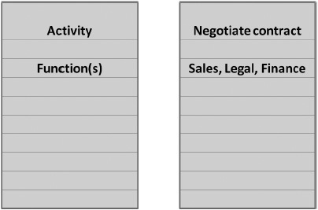
图3.1 第一次价值流走查后的便利贴
因为价值流图是工作的宏观视图，它通常不包含跨职能流程图中常见的”泳道”。价值流图通常也不包含流程图中常见的是/否决策树。记住，每个产品族都有自己的价值流。
如第2章所述，在服务、事务处理、创意和分析环境中进行图绘制需要围绕定义的条件进行仔细的范围界定。你的现状图应反映这些特定条件下的工作流动。由于价值流图是宏观层面的，我们通常绘制80%时间发生的情况，以减少变异并专注于改善大部分工作。这种方法通常能为组织创造更大的能力来应对剩余的变异和例外情况。
如图3.2所示，我们偶尔会描绘一个”分岔路”，例如，工作在一定比例的时间内通过某个特定流程，而在另一比例的时间内绕过该流程。如果这是流程中唯一的偏差，可能不需要用两张单独的价值流图来描绘这一个差异点。记住，价值流图绘制既是艺术也是科学——只要艺术不妨碍科学！
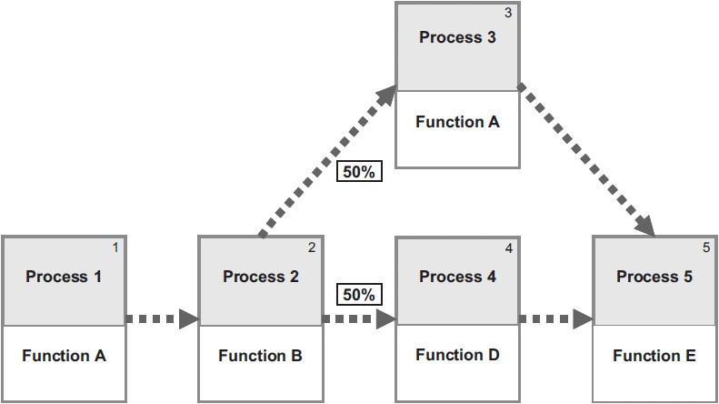
图3.2 价值流图上可接受的分支
你可能还会发现，一个流程的输出被传递给两个或更多职能部门并同时进行处理。我们称之为并行流程(Parallel Processes)。在这种情况下，便利贴在同一垂直平面上下堆叠放置。（你将在后面的图3.12和附录D中看到这方面的例子；图3.2中的流程块3和4描绘的是分支，而不是并行流程。）
一旦团队就流程块及其顺序达成一致，并将便利贴贴在图绘制纸上后，应按顺序为便利贴编号。编号使得引用特定流程块变得更加容易。
图3.3展示了一个简单价值流图的电子版本，以显示你的图在这个阶段应该是什么样子。
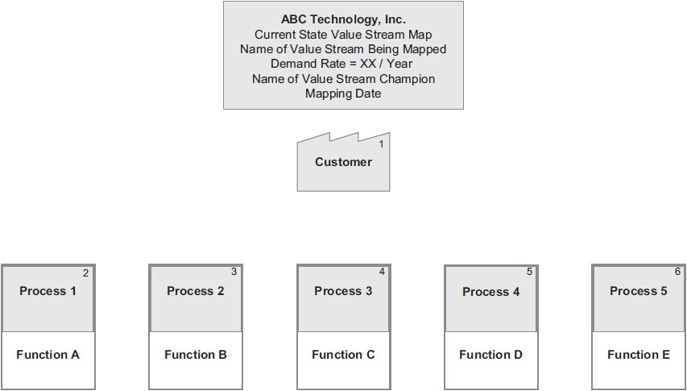
图3.3 价值流图渐进构建：流程块放置
流程块编号完成后，就该为第二次现场访问做准备了。第二次走查将专注于收集相关信息和数据，以评估当前价值流绩效，发现问题和改进机会。
第二次价值流走查的目的是让团队更深入地了解价值流当前的运作方式，并识别流动的重大障碍。每条价值流都有独特的特征。因此，每条价值流都需要你根据希望解决的具体问题和/或希望利用的机会、流经系统的工作类型以及工作环境来评估当前状态绩效。在大多数情况下，要把握目标改进价值流的当前状况，需要从时间和质量两个维度来评估其绩效。团队需要了解工作从一个流程推进到下一个流程的速度、所需的实际工作投入，以及流经价值流的流程输出质量。显然，工作遇到的延迟越多，价值流中任何一点的输出质量越差，整体价值流绩效就越差。
我们使用三个指标来评估所遇到的98%的办公室和服务价值流的当前状态：处理时间(PT)、前置时间(LT)和完整准确率(%C&A)。
处理时间(PT)(Process Time)——也称为加工时间、接触时间、工作时间和任务时间——是人员完成流程任务、将一个工作单元的输入转化为输出所需的时间。一个工作单元可以是一个订单、一位患者、一张图纸、一份申请单、一份餐食等等。如果工作是批量处理的，我们通常将处理批次的时间视为该批次只包含一个单元来计算。
通常以分钟或小时为单位，处理时间（Process Time）代表完成工作所需的实际”操作时间”。它还包括经常需要用来澄清或获取与任务相关的额外信息的”沟通时间”（包括会议），以及如果流程涉及审查或分析时所需的”阅读和思考时间”。如果人员和设备都参与处理工作，且非人工工作时间较长，则应分别识别和记录这些时间——例如，微生物培养生长所需的时间或大规模数据上传完成所需的时间。
处理时间不包括等待或延迟。它是在流程工作人员能够不间断地处理一个工作项的情况下完成工作所需的时间。如果工作人员经常被打断，或者必须向上游供应商请求澄清、添加或更正所提供的信息，那么受访者一开始可能难以确定实际处理时间，因为这可能是他们第一次从这个角度审视自己的工作。请保持耐心并引导他们。
在办公室、服务和知识工作环境中，处理时间通常因工作复杂程度而异，这也是我们建议选择较窄范围的条件来绘制地图的原因之一。当即使在较窄的条件范围内处理时间仍然差异很大时，应选择中位数而非平均数，以便测量更准确地反映通常发生的情况。处理时间仅包括主动将输入转化为输出的工作。它不包括工作项在首次被审查或”触及”之前在队列中等待的时间、等待更正或澄清的时间，或等待传递给价值流中下一个人员或部门的时间。
虽然处理时间很重要，但应重视准确性而非精确性。记住，价值流图（Value Stream Mapping）是对一系列流程的战略性审视。不需要进行详细的时间研究；你只需要大致了解完成工作需要多长时间。在转型计划通过PDSA（计划-执行-研究-行动）循环推进时，可能需要进行详细研究来实施战术改进。价值流图的目的是对未来状态做出战略决策。
处理时间反映人力投入（有时也包括设备时间），在当前状态下，既包含增值工作，也包含非增值工作。增值工作是您的外部客户所重视并愿意为之付费的工作——或者是与客户开展业务的必要条件。所有其他费用和工作都是非增值的。然而，非增值工作有两种类型：必要的和不必要的。必要的非增值工作包括组织认为目前必须执行才能维持可行业务的活动。我们有时将这类工作称为价值使能工作（Value-enabling）。换句话说，如果不执行这些工作，组织将难以交付价值。不必要的非增值工作是真正的浪费：客户不重视它，企业也不必为了保持可行运营而去做它。价值流转型的目标是为客户提供更大的价值。实现更大价值的一种方式是消除非增值工作——或者，对于必要的非增值工作，减少它以消耗更少的资源。价值流图帮助我们确定如何实现这一目标。
某些价值流图活动需要团队评估每个流程模块，以确定所做的工作主要是增值的（从外部客户的角度来看）、主要是必要的非增值工作，还是主要是不必要的非增值工作，同时要记住某些流程模块可能包含所有三种类型的工作。刚接触精益（Lean）和/或价值流图的团队通常会从一个简短的练习中受益，即用”VA”标记增值的流程模块，用”N”标记必要的非增值流程模块。在这种情况下，引导者应帮助团队保持在宏观层面，避免深入地图上所代表的具体流程细节。更有经验的绘图团队可能不需要标注对他们来说显而易见的内容。
前置时间（Lead Time，LT）——也称为吞吐时间（Throughput Time）、响应时间（Response Time）和周转时间（Turnaround Time）——是从工作交给个人、工作团队或部门的那一刻起，到工作完成并交给价值流中下一个人员或团队为止所经过的时间。前置时间通常以小时、天甚至周或月为单位表示。如果传入的工作在部门的电子队列中平均等待六小时后才有人开始处理，然后一个人平均需要30分钟（处理时间）来完成工作，接着又被搁置一小时后才传递给价值流中的下一个功能，那么该流程模块的前置时间是7.5小时。其中，30分钟是处理时间。
换句话说，前置时间包括排队时间和延迟加上处理时间。图3.4说明了处理时间与前置时间之间的关系。注意：在两个部门之间有明确服务水平协议（SLA）的价值流中，请注意记录实际前置时间，而不是协议中规定的前置时间。
在选择前置时间的计量单位时，请确保您考虑到
需要考虑一天中计划工作时间的数量。例如，在传统8小时工作制的环境中，4小时的前置时间等于半天。两天的前置时间是16小时。以此类推。同样的考虑适用于周和天的换算。在周一到周五的工作周环境中，两周的前置时间等于10天。对于以月为单位报告的较长时间，你需要考虑每月的工作日天数。在许多环境中，22个工作日等于一个月。确保阅读你地图的人理解工作时间和工作日的概念。对于医院、制造业、呼叫中心等24小时运营的场所，你可以安全地使用时钟时间和日历天数，而不必担心”工作时间”的问题。
正如我们在引言中提到的，完成且准确百分比（%C&A）是我们遇到的最具变革性的指标。[*] 它反映了每个流程输出的质量。%C&A是通过询问下游客户来获得的：他们收到”可直接使用”的工作的比例是多少，意味着他们可以在不需要纠正提供的信息、添加本应提供的缺失信息或澄清本应更清晰的信息的情况下完成工作。
如果一个部门报告说，在开始工作之前，30%的时间需要纠正、添加缺失信息或澄清传入的工作，那么该工作的上游供应商正在交付70%的质量。这个70%的指标被放置在产生该输出的流程的便签上，而不是接收部门的便签上。在供应流程的便签上报告%C&A有助于确保对策能够解决质量差的根本原因，而不是在下游流程应用创可贴式的解决方案。
有时，一个部门或工作团队可能产生低%C&A的输出，这种情况不会被后续客户检测到，但会对更下游的客户变得明显。在这种情况下，团队在产生该输出的步骤的便签上记录每个观察到的%C&A——同时标明哪个流程块检测到了质量问题。本章后面你会看到这样的例子。
评估每个流程输出的%C&A是一个极具启发性的步骤，有时会让执行工作的人感到不舒服，当他们得知自己的输出没有满足客户的需求时。但通过适当的引导、无责备的环境，以及专注于如何使工作更好流动的心态，这些发现可以是积极的。它们为内部客户和供应商之间关于期望和要求的重要对话提供了触发点，正如我们在第1章中指出的，这是价值流图的一个文化转变性的好处。
当绘图团队正在访谈执行工作的人和/或审查绩效报告以获取时间和质量指标时，他们还需要发现任何重要且尚未反映在时间和质量指标中的额外流动障碍。流动障碍是任何阻碍工作不间断进展的行动或条件。由于浪费存在而导致的过长前置时间本身不是流动障碍——它们只是表明存在”流动阻塞因素”或流动障碍的症状。例如，你不需要为因不必要的交接而导致的过长前置时间记录额外的流动障碍——这些障碍在地图上是视觉可见的。类似的思路适用于返工。虽然它是一个明显的流动障碍，但由于它是低%C&A的自然副产品，不需要单独列出。
另一方面，以下流动障碍相当常见，经常造成重大的流动问题，并且从流程时间、前置时间和%C&A指标中并不明显。
在办公和服务环境中，工作经常被批量处理，即使执行工作的人并不认为这是批量处理。有两种主要的批量类型：(1) 批量大小——等待特定数量的项目累积后再处理工作（例如，收到10份订单后才输入），(2) 批量频率——在一天、一周或一个月的特定时间执行活动（例如，每晚系统下载）。虽然批量处理总是对流动构成障碍，但并非所有批量处理都像精益运营设计新手通常认为的那样是”坏的”。为了加速流动，必须确定批量处理的原因，并在可能的情况下消除它们——只要消除或减少批量在商业上是合理的。
在某些环境中，过多的系统停机时间和/或响应缓慢对流动构成重大障碍，应予以记录。
如果负责执行工作的人有多重义务和优先事项，使他们无法在工作到达时立即处理，这可能对流动构成重大障碍。如果员工因其他原因不可用或不可及（例如，大量出差、病假），这也应该记录。在相关的情况下，展示当工作到达时员工通常可用于执行该流程的时间百分比是有帮助的。
在办公和服务环境中，任务切换和应对长期中断揭示了潜在的流动障碍，类似于制造环境中的设置和换型。如果绘图团队在第二次价值流走访期间观察到这个问题或通过访谈员工了解到这个问题，并且该问题很严重，应该记录下来。
在价值流走查过程中，询问人们如何确定工作优先级是很有帮助的，这有助于发现正式或非正式存在的不同甚至相互冲突的规则。例如，销售部门可能将战略客户的订单列为最高优先级，订单录入部门可能将特定类型的订单列为最高优先级，而服务部门则可能将特定地区的订单处理列为最高优先级。
团队的调查技能将在此发挥作用。请记住，目标是理解导致工作进展延迟的原因。但要保持平衡并警惕：不要让团队陷入分析瘫痪(analysis paralysis)。关键是只识别那些影响价值流中每个流程绩效和流动的重大问题，一旦识别出来，就将其记录在相应的流程块上。
补充信息
要深入了解价值流的当前表现，可能需要收集范围广泛的信息。我们在下面列出了一些通常很重要的数据元素。但是，不要让价值流图绘制变成一项数据收集工作。团队应专注于识别和记录对价值流绩效产生负面影响的少数关键因素。一些能提供有意义洞察的常见数据点包括：
在制品(WIP)
在制品(Work-in-Process)是流程之间或流程内部积累的工作。它是过度生产、超负荷、批处理、因质量问题需要返工、优先级规则差异、技能熟练度差异等问题的症状。如图3.5所示，工作可以在三个地方积累，你必须将这三个地方的数量全部包含在内，才能获得你正在审查的流程的准确在制品数量：（1）已排队但尚未开始的工作，（2）正在处理但尚未完成的工作，（3）已完成但尚未传递到价值流中下一个流程的工作。为了更深入地了解当前状态，团队还应记录队列中最早的项目。
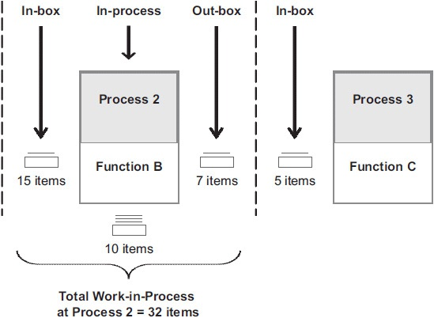
图3.5 工作可能积累的三个地方
人员数量
我们通常会记录目前执行便签上所述工作的人数。如果在未来状态设计过程中，团队发现需要进行工作平衡或为特定价值流指定资源，这一数据尤其有帮助。人员数量还可以指出另外两个潜在问题。如果人员配置太少，无法应对进入的工作量，工作就会停止流动。另一方面，如果执行工作的人员非常多，很可能当前工作方式存在很大差异，后续采用标准化作业(standard work)将需要更多的规划和跟进。
在某些情况下，不仅需要记录有多少人经常做这项工作，还需要记录有多少人接受过培训且有能力做这项工作。如果没有足够的后备人员来应对休假、职位空缺等情况，你可能也需要记录人数。如图3.6所示，表示人员数量的经典价值流图符号是一个带有下方弧线的圆圈（代表一个坐在椅子上的人的俯视图）。如果已知人员配置不是影响价值流绩效的重要因素，我们就不会记录执行工作的人数。
工作时数

图3.6 第二次价值流走查后的便签
了解员工是否在超时工作，还是在八小时工作日内完成工作，这一点很重要。在医疗保健和警务等轮班环境中，团队成员应注意是两个12小时班次、三个8小时班次，还是其他排班方式。他们还需要记录运营”营业”的总时数，这将用于以适当的计量单位反映指标，本章后面会详细描述。
流程有效性
在某些环境中，了解上游工作成功转化为下游工作的百分比是很有帮助的。例如，了解有多少报价或投标书(RFP)转化为客户订单或采购订单(PO)可能很重要。
各流程的工作量或需求率
当不同部门面临不同的工作量时，这一点就很重要。例如，进入价值流的请求可能是每月500个，而信用部门可能只处理其中的200个。
工作触发器
绘图团队应记录人们如何知道要做什么工作。工作是实物到达，还是记录在电子队列中？如果是电子方式，是推送给员工，还是员工需要主动查找？工作区域是否有可视化工作管理看板？传入的工作是由电话、走廊对话、传真还是客户到场触发的？请记住，流程块的前置时间(lead time)从工作可以被处理时开始，而不是从员工开始处理时开始，因此识别触发器将帮助团队获得更准确的前置时间。例如，电子邮件工作项的前置时间从邮件到达时开始，而不是从被阅读时开始；从汽车到达得来速餐厅开始，而不是从到达点餐窗口开始；从患者走进门开始，而不是从行政或临床人员问候开始。
其他
团队应记录在宏观层面相关的其他信息。我们经常提醒团队，在当前状态绘制阶段，他们要戴上调查员的帽子。就像侦探调查凶杀案一样，熟练的价值流调查员对应该追踪哪些线索有第六感。经验很重要，因此你主持或参与价值流绘制团队的次数越多，就越能熟练地翻开那些阻碍绩效的相关石头，并帮助绘制团队设计出大幅改进的未来状态。
团队回到基地后，应将第二次巡查获得的信息添加到地图上的流程块中。图3.6展示了我们在便利贴上放置指标、流程障碍和其他信息的惯例。
流程时间（PT）和前置时间（LT）放在便利贴的右下角，流程时间在上方。完整准确率（%C&A）放在左下角。确保包含PT和LT的计量单位，无论是分钟、天、周还是月。稍后你需要将流程时间和前置时间转换为相同的计量单位，但在此阶段，你可以用最容易让人理解的计量单位来表示这两个指标。我们通常选择能产生最小整数的计量单位——例如，12个工作日的前置时间比96小时或5,760分钟更容易理解。我们倾向于用比流程时间高一到两个级别的计量单位来表示前置时间，以引起对延迟的注意（例如，“为什么完成20分钟的工作需要2天？”）。
最后，员工人数和尚未记录的重大流程障碍放在便利贴上，位于执行工作的职能和指标之间的区域。
如前所述，如果多个下游客户报告来自同一上游供应商的来料存在质量问题，团队应在产生该输出的流程便利贴上记录每个下游客户的观点。
图3.7说明了这种情况。在此案例中，流程4将工作传递给流程5。在绘制过程中，流程5的员工（接收流程4输出的职能）报告说，25%的情况下，他们必须先返工（纠正、添加或澄清）来自流程4的来料，才能执行自己的工作，因此流程4的%C&A（由流程5报告）为75%。流程7报告说，有一半的情况下，他们也需要返工流程4的输出——但这种返工与流程5的返工不同。（而且流程5没有检测到流程7可能需要做的返工。）流程4输出的%C&A（由流程7报告）为50%。在这种情况下，流程4输出的总体%C&A为37.5%，计算方法是将两个%C&A的小数形式相乘，然后将乘积乘以100转换为百分比：(0.75 × 0.50) × 100 = 37.5%。
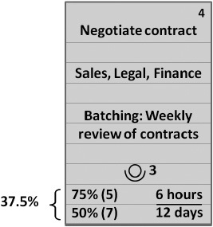
图3.7 如何记录多个下游客户从同一上游供应商报告不同%C&A的情况
累积的在制品（WIP）放在其所指流程块的左侧。我们通常使用收件箱图标来描绘办公型价值流中的WIP，而不是经典的三角形或墓碑形状，而且我们只在存在延迟的地方包含WIP图标。因此，如果我们的价值流图上流程块之间没有收件箱，这意味着在当前状态绘制期间该流程处没有WIP。初学团队有时更喜欢为所有流程块包含WIP图标，如果没有WIP则使用零。如本章前面所述并在图3.5中所示，记得在所有三个位置都要计算WIP。
假设工作是通过价值流被推送的（而不是被拉动，本章前面已解释），所有流程块应该用虚线”推送箭头”连接。如果工作在两个流程之间真正是被拉动的，使用适当的拉动图标，如附录A中绘图图标列表中包含的撤回箭头。
图3.8展示了现在你的地图上将有的信息。
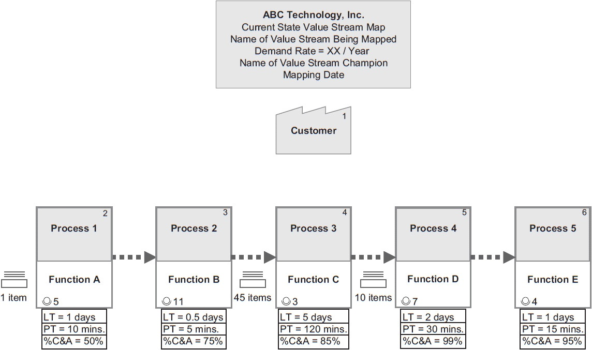
图3.8 价值流图渐进构建：流程细节
理解信息如何在价值流中流动是对价值流进行实质性改变的重要部分。因此，了解支持或阻碍工作流的系统和应用程序非常重要。具体而言，团队需要识别价值流中每个流程所对接的系统和应用程序，无论这些系统是用于存储和/或传输数据、产生实际工作输出，还是生成管理报告——以及这些系统是否相互通信。
价值流绘制是一种有效的工具，可以直观地展示许多价值流中存在的技术相关的断开、空白和冗余。我们通常不包括电子邮件和Word等基本应用程序，但如果Excel、ACT!和Access等应用程序被用于存储数据并驱动与价值流相关的决策，我们会将其包括在内。
在此阶段，团队应将包含价值流中使用的所有IT系统和应用程序名称的便利贴放在客户块和
流程块[(图3.9)]。IT系统和流程块应该用箭头连接，箭头的方向表示信息流动的方向：箭头指向IT系统表示数据输入；箭头指向流程块表示数据查看或检索；箭头两端都有箭头表示该流程既有信息输入也有信息检索。
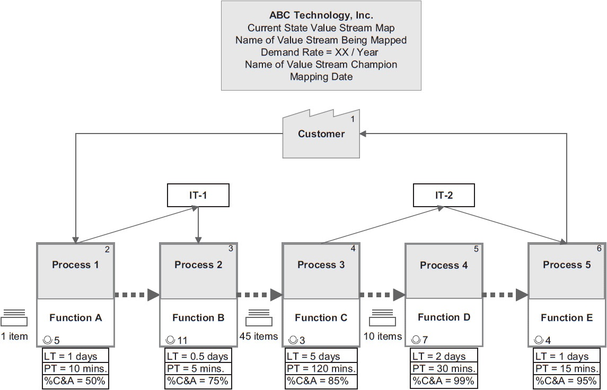
闪电形箭头表示信息从一个系统自动流向另一个系统（如自动上传），或从系统流向人员（如需要审批时自动生成的邮件）。同样，箭头方向表示信息流动的方向。
该图标见[附录A]，其使用示例见附录B、C、D和E中的未来状态示例图。
在绘制当前状态价值流图时，这一步通常极具启发性。在办公和服务环境中，当前状态价值流与5到15个不同的IT系统和应用程序对接的情况并不罕见[(图3.10)]。正如我们提到的，以高度可视化的方式看到系统之间的断层和冗余，是办公和服务环境中价值流图最强大的功能之一。事实上，我们见过的一些最重大的转型，都可以追溯到领导层的”顿悟时刻”——当他们看到信息系统过于复杂的本质，以及由断层、缺口和冗余造成的过度处理、错误和运营混乱时。以这种高度可视化的方式反映IT系统如何支持或未能支持业务的当前现实，为许多组织提供了他们所缺乏的清晰度。
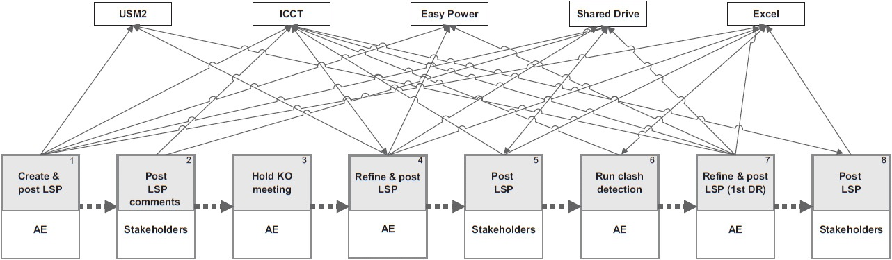
绘制当前状态价值流图的下一步是创建时间线，用于展示流动程度、组织向客户交付商品或服务的速度，以及整个价值流所涉及的工作量。
如[图3.11]所示，时间线直接位于便利贴下方。为便于操作，您可以在制图纸底部附近画一条直线。（您不需要像iGrafx软件那样画”方波”型时间线。）您需要在时间线上标注处理时间(Process Time)和前置时间(Lead Time)。如果您还没有将处理时间(PT)和前置时间(LT)转换为统一的计量单位，可以在创建时间线时进行转换。请务必注明您的图表使用的是工作小时和工作日，还是时钟小时和日历日，以便每个人都能理解，例如，24小时等于三个工作日而不是一天。
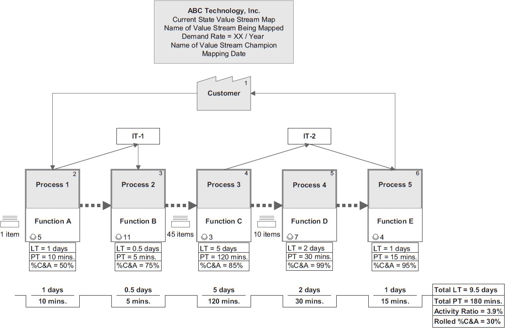
对于并行流程，只有其中一张便利贴（或一系列便利贴）的处理时间和前置时间被记录到时间线上。在只有一个并行流程块后工作重新汇入主价值流的图表中，您应选择前置时间最长的并行流程便利贴的前置时间和处理时间，并将这些值放在时间线上。但如果最长的前置时间是”死胡同流程”则例外。换句话说，如果某个特定流程的输出不会继续流经价值流，您应将其排除在考虑范围之外，选择次长的前置时间。死胡同流程的例子包括创建内部管理报告和审核已交付给客户的工作。我们将前置时间最长的路径称为”时间线关键路径”(Timeline Critical Path)。
在具有多个连续流程块的并行路径图表中，需要计算并比较每条路径的总前置时间。总前置时间最长的并行路径就是时间线关键路径。时间线关键路径上各流程块的前置时间和处理时间将被记录到汇总时间线上。[图3.12]说明了这一惯例。
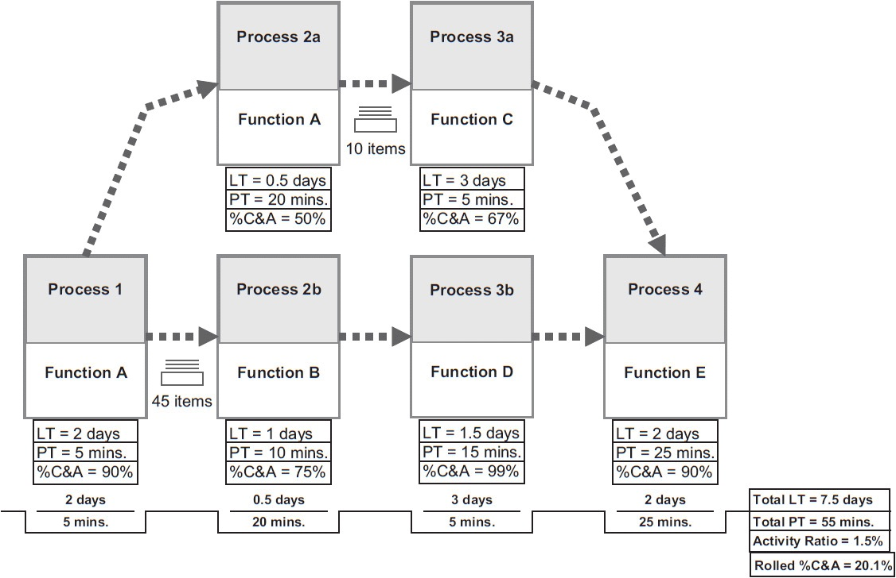
接下来，团队将汇总整个价值流的指标。我们建议至少使用以下汇总指标中的前四项：
该值反映响应客户请求所需的总时间。请记住，当存在并行流程（并发工作活动）时，总前置时间包括构成价值流时间线关键路径的各并行流程中最长的前置时间。
该值反映时间线关键路径上所有职能部门所需的总工作量。
该值反映价值流中的流动程度。计算方法是将总处理时间除以总前置时间，然后乘以100转换为百分比：
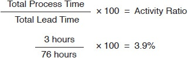
当前状态的活动比率在2%到5%之间是很常见的，这意味着虽然人员通常都很忙碌，但在工作流经价值流的总时间中，有95%到98%的时间工作是闲置的。这一发现虽然令人警醒，但开始让人们意识到重大改进的必要性，这也是减少未来变革阻力的另一种技术。
该数字反映整个价值流中输出质量的复合效应，计算方法如下（其中下标代表编号的流程块）：
(%C&A) × (%C&A) × (%C&A) × (%C&A) × 100 = 累计%C&A [1] [2] 3 [4]
(0.50 × 0.75 × 0.85 × 0.99 × 0.95) × 100 = 30.0%
与活动比率类似，当前状态的累计%C&A可能会令人警醒。负责某个流程的团队成员报告他们收到的输入需要100%返工的情况并不罕见（%C&A = 0）。即使不存在这种情况，在办公和服务环境中，许多当前状态价值流的累计%C&A也只有1%到10%，这意味着90%到99%的工作在价值流的某个环节需要返工。在具有并行路径的价值流中，累计%C&A包括地图上所有流程块的%C&A。
该值反映了价值流中涉及的所有职能部门所需的集体工作量，用于计算未来状态设计中由于过程时间减少而带来的产能提升。总劳动过程时间是地图上所有流程块的过程时间之和，包括时间轴关键路径块和所有其他并行路径流程块，即使它们是死胡同路径的一部分。
该计算反映了在所映射价值流范围内执行工作所需的总人力投入（年化）。计算方法是将总劳动过程时间乘以价值流每年处理客户请求的次数。
劳动投入可以用运营价值流所需的总小时数（如上计算）、运营价值流所需的等效FTE（全职当量）数量，或基于价值流工作者中位数薪资或工资的劳动成本来表示。FTE版本计算如下：
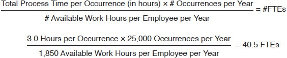
确定FTE数量的公式中一个关键组成部分是每年可用工作小时数。要确定可用工作小时数，首先从每年的带薪小时数开始（在每周支付员工40小时工资的组织中，通常为2,080小时）。从总带薪小时数中减去所有带薪休假时间，包括年假、节假日、病假和带薪休息。还要减去其他消耗工作者可用时间的常规事件所占用的时间（例如每天30分钟的会议）。我们通常不包括其他类型的会议、培训课程、离开工作岗位复印等时间。这是一个方向性测量；我们选择准确性而非精确性。
正如你可能感觉到的，这个计算最重要的元素在未来状态设计期间发挥作用，届时团队会找到减少运营价值流所需劳动投入的方法。释放的产能是通过消除浪费活动和/或优化工作来减少过程时间的结果。对于希望在不相应增加劳动成本的情况下吸收增长的组织来说，释放产能是一个重要目标。
第4章将更深入地探讨释放产能的原因和好处——以及如何以负责任的方式使用释放的产能。
我们建议映射团队在挂图纸或额外的映射纸上准备一个类似表3.1的表格，以显示当前状态的关键汇总指标，以及稍后未来状态设计的预测指标。
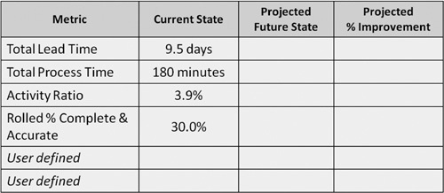
虽然汇总指标能够深入洞察价值流绩效，但你可能希望包含反映价值流当前状态的其他指标——时间相关的（呼叫中心等待时间）、服务相关的（准时交付百分比）、财务相关的（重复销售百分比）、人员相关的（病假天数或人员流动率）等。表3.1上的用户自定义区域提醒我们，每个价值流都有独特的绩效要求，这些要求将根据价值流映射被用来帮助解决的业务问题而有所不同。
Beau Keyte和Drew Locher在他们的著作《完整的精益企业》(The Complete Lean Enterprise)中首次描述了一种映射包含独特预生产或预服务段的价值流的替代方法。这种方法不是创建连续的线性地图，而是利用多条汇总时间轴来直观地区分预服务（或预生产）活动与实际的服务交付（或产品的实物生产）（图3.13）。预服务流程块通常包括输入订单、处理请求、生成报价、准备客户需求文档、安排实际服务等活动。
使用这种布局创建地图时，将客户图标放在地图的右上角，并沿地图顶部从右到左排列预服务流程块。代表服务交付或产品实物生产的流程块放置在预服务/预生产流程块下方，从左到右排列。
然后，绘制多条时间轴。为了创建更易于阅读的地图，预服务/预生产时间轴通常绘制在预服务流程块上方，并且与相应的流程块一样，该时间轴的流向从右到左移动。汇总时间轴框通常出现在预服务/预生产时间轴的左侧。
第二条时间轴反映实际交付服务或生产产品所需的工作，处理方式与本章前面描述的时间轴相同；它放置在流程块下方，从左到右排列，汇总时间轴框位于时间轴的右端。
然后，你可以将两个汇总时间线框中的数值相加，得到完整价值流的汇总，这代表了从请求到交付的完整客户体验。
在某些情况下，我们在地图底部附近添加了第三行流程块和第三条时间线，用于表示将已交付的服务或产品转化为付款所需的售后或生产后活动。整合这些流程块可以得到一个真正的”报价到现金”价值流图。
将地图分成多个部分有很多好处。从视觉上看，这种布局方式有助于引导读者了解完成客户请求所涉及的各个阶段。从后勤角度来看，这种布局通常可以更好地利用价值流图可用的”空间”，无论是在墙上还是在纸上。最后，从改进的角度来看，这种布局方式有助于突出显示存在绩效问题的特定部分。我们曾有一个客户，生产交货时间从10天缩短到2天，但生产前准备时间长达六周。通过两行式地图，可以非常清楚地看出改进重点需要放在前端活动上。
附录B中的地图展示了多时间线主题的一个变体，其中价值步骤的”生产前”步骤被明确排除在地图的汇总时间线之外，原因在附录说明中有解释。在这种情况下，团队认为添加第二条时间线没有价值。
分析价值流不同部分的时间和质量指标的另一种方法是插入垂直线来直观地分隔地图。例如，报价到现金价值流图可以分为销售、运营和计费三个部分以便进行更深入的分析，每个部分的指标可以按照上述类似流程进行分析。
我们通常使用iGrafx软件在使用纸张和便利贴制作地图后对其进行存档，该软件目前不支持为地图各部分创建单独的汇总块，除非如上所述创建单独的时间线。使用iGrafx时，我们会为每个部分手动添加汇总块。
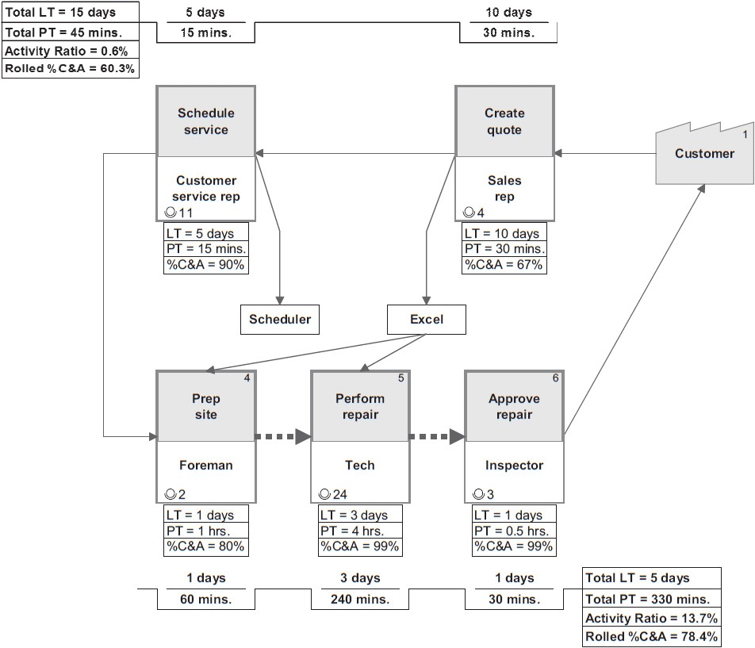
图3.13 多条时间线
总之，创建当前状态价值流图应被视为一项发现活动。与CSI调查员类似，绘图团队的作用是发掘当前状态设计的真相、其绩效以及阻碍流动或影响绩效的障碍。团队可能希望使用额外的工具来帮助发现问题和改进机会，例如：描绘人员和物料移动、信息流动或沟通模式的意大利面图(Spaghetti Diagram)；评估工作满意度和参与度的员工调查；记录工作完成方式的照片和视频；以及工作成果样本等。对于后者，有时将工作成果样本直接贴在地图上会很有帮助。底线是：团队不应局限于价值流走查来获取深入理解当前状态所需的信息。
值得重申的是，创建价值流图既是科学也是艺术。请记住，价值流图作为可视化故事板，不仅可以阐明工作是如何完成的，还可以揭示问题。你的当前状态图应尽可能真实地反映客户请求如何转化为产品或服务并交付给客户。
图3.14列出了通过当前状态绘图过程发现的常见问题。

图3.14 常见流程发现
正如我们在第1章中提到的，我们发现在绘图过程的每个阶段结束时举行简报会很有价值。这些简报有助于建立对改进的支持，并在领导团队之间达成一致。当前状态简报为更广泛的群体提供了机会，让他们看到绘图团队现在看到的情况，并了解绘图团队对当前运营的价值流的理解。这种集体理解程度有助于减少对未来状态设计决策的阻力。虽然当前状态简报通常令人警醒，但这是一个有助于接受变革需求并产生创新性未来状态思维的心理空间，这也是第4章的主题。
在变化较大的价值流中，在不同的日子重新审视价值流可能会有所帮助，以探索它在不同条件下的运作方式。
有些团队更喜欢直接在36英寸宽的纸上、11” × 17”的纸上或白板上绘制地图。
Gemba也可以拼写为genba。虽然我们选择使用罗马化且更常用的带m的版本，但根据平假名（日语音节文字），带n的拼写实际上更准确。在本书中，我们交替使用”去现场(Gemba)“和”价值流走查”这两个术语。
非注意盲视(Inattentional Blindness)，也称为知觉盲视(Perceptual Blindness)，是指在执行其他需要注意力的任务时，未能注意到视野中意外刺激的现象。当环境中存在过多刺激时，这种现象经常发生。更多信息请参阅 http://en.wikipedia.org/wiki/Inattentional_blindness。
我们并不是说希望每个人都有相同的想法。相反，经验丰富的引导者会警惕”群体思维(Groupthink)“——尤其是在未来状态设计阶段——并采取措施确保群体思维不会占据主导地位。我们所说的凝聚过程更多是关于团队之间早期信任的建立，使团队成员能够安心地自由表达自己的想法。
由于各种业务原因，最初专注于作为例外情况的20%可能是明智之举。在这种情况下，章程应明确定义正在映射的具体条件以及关注例外情况的原因。
为避免混淆，我们避免使用”周期时间”(cycle time)这一术语，因为它有多种定义：与过程时间、前置时间同义，以及产出的节奏或频率等。
均值(mean)是一组测量值的算术平均数：测量值之和除以测量值的数量。中位数(median)是一组测量值的中点，其中一半的测量值高于中位数，一半低于中位数。均值可能会被一个罕见的异常值所影响，而中位数则不会受到如此大的影响。例如，如果某一特定过程的四次发生的过程时间分别为10分钟、10分钟、20分钟和60分钟，均值为25分钟，而中位数为15分钟，后者更准确地反映了现实情况。
某些组织可能更倾向于使用”必要的”(essential)和”非必要的”(nonessential)这两个术语。在《精益思想》(Lean Thinking)一书中，作者沃麦克和琼斯将必要的非增值工作称为第一类浪费(muda)，将不必要的非增值工作称为第二类浪费(muda)。精益社区普遍认可八种浪费类型：过量生产、过度加工、错误、库存、等待、运输、动作和人员利用不足（指经验、知识、技能和创造力方面）——所有这些都是潜在问题的症状。对浪费进行分类的好处包括帮助人们识别可能存在的各种浪费，以及解决浪费根本原因的对策。这八种浪费最初是在制造业中定义的，但我们在所有环境中都观察到了这些相同的浪费，只是程度不同。同样，我们在办公室、服务和知识工作环境中看到的每一个浪费案例都很容易归入这八个类别之一。
价值流图的其他目标是消除不均衡(mura)和超负荷(muri)。
%C&A这一指标由博·凯特和德鲁·洛赫尔在《完整的精益企业》(The Complete Lean Enterprise)（生产力出版社，2004年）一书中首次提出。类似于制造业中的一次通过率(first pass yield)，%C&A由作者创造，用于反映接收到的基于信息的工作中存在错误的百分比，因此需要返工来纠正信息或添加本应收到的缺失信息。在我们的著作《改善活动规划师》(The Kaizen Event Planner)（生产力出版社，2007年）中，我们拓展了凯特和洛赫尔的定义，以反映我们的经验：不必要的澄清是办公室和服务环境中返工的第三种形式，而且往往是三种类型中最普遍的。
一旦映射团队对当前状态有了深入理解，就该开始设计未来状态了。如果团队成员有一个晚上的时间来思考当前状态的发现，他们很可能会在未来状态设计日开始时既充满热情又有些忐忑。未来状态设计阶段带来的白板机会和对美好明天的希望可能令人振奋，特别是当当前状态充满问题和改进机会时。毕竟，设计一种能够减少客户投诉、减少救火式工作、降低部门间紧张关系的运营能力，给那些可能正承受着价值流表现不佳压力的领导者和员工带来巨大希望。但对于初学者来说，一块几乎没有边界的白板可能会让人不知所措。
因为未来是无限的，而且通常有多种方式可以达到同一目的，所以不存在单一的”正确”未来状态图。事实上，如果有机会，两个不同的映射团队完全可能创建出两张不同的未来状态图，而这两张图都能满足所设定的改进目标。知道不存在完美的图应该能让初学者感到宽慰，但这也可能产生一定程度的焦虑，因为不确定性往往如此。这正是一位技能娴熟的引导师价值千金的地方。一旦你开始未来状态设计阶段，活动的基调就从事实发现和探索转变为创新和创造。相应地，引导师的角色也从帮助团队揭示和分析”现状”的教练——这是一项左脑活动——转变为激励团队创新和设计”可能性”的教练——这是一项右脑活动。技能娴熟的引导师可以轻松地在这两种角色之间切换。
当我们开始未来状态设计的考量时，我们假设你的组织正在提供客户认为有价值的服务和/或生产商品与服务。显然，花费宝贵的时间和资源去改进一个交付客户不想要的产品的价值流是毫无意义的。我们在与客户和改进专业人士合作时遇到的一个误解是，精益就是关于创建流动的。虽然流动在构建高绩效价值流中至关重要，但让”错误的工作”流动并不是对时间和资源的明智使用。从宏观角度来看，设计未来状态时需要解决三个总体考量：确定应该做的工作、使该工作流动起来，以及管理工作以实现持续改进的绩效。
在我们进入设计未来状态的具体步骤之前，让我们更仔细地看看这些考量中的每一个。我们首先从确定”正确的工作”开始：价值流要实现最优运营，需要哪些过程和步骤？
请记住，我们将最优绩效定义为：以不产生不必要费用的方式为客户创造价值；工作流程无延迟；组织100%遵守所有地方、州和联邦法律；组织满足所有客户定义的需求；员工安全且受到尊重。换句话说，工作设计应当消除延迟、提升质量、减少不必要的成本、劳动投入和挫折感。
在精益社区中，改进工作正确地聚焦于通过消除浪费（muda）、不均衡（mura）和过载（muri）来增加价值。正如我们在[第三章]中提到的，浪费分为八大类：过度生产、过度加工、错误、库存、等待、运输、动作和人员能力的低效利用（包括经验、知识、技能和创造力）。
在大多数价值流中，有大量浪费可以消除。但重要的是要记住，消除浪费有两种方式：减少工作和增加工作。增加工作有时被视为禁忌，因为有些人误以为”消除浪费”仅仅意味着减少活动。但正如我们下文所述，如果在上游增加一项活动能为整个价值流创造净收益，那就应该这样做。
同样，考虑到整个价值流最优绩效的最终目标，某个部门可能需要承担额外的工作和/或人员、重新分配权力、放弃部分现有工作和/或人员、让出设备或重新配置员工。这种转变可能会挑战资源分配、预算制定与管理、问题解决和改进方面的现有思维模式和行为方式。拥抱价值流思维是组织成功从孤岛思维（Siloed Thinking，即”什么对我和我的团队最好？“）转向整体思维（Holistic Thinking，即”什么对客户和公司最好？“）的标志。价值流改进需要强大的团队合作意识，以及能够为更大利益进行设计的绘图团队成员。
当你从价值流中移除工作投入——假设这种移除不会产生需要更多投入才能完成的新工作——你就减少了运营成本。我们发现，在未来状态设计过程中，讨论哪些流程可以消除往往是较容易的讨论点之一。引导师应提醒经验较少的团队，不要为了移除工作而移除工作。只有在确定某些活动确实不必要时，才应将其移除。
正如我们在[第三章]中提到的，所有工作投入可分为增值活动、必要的非增值活动和不必要的非增值活动。在优先级方面，绘图团队应将主要精力放在移除不必要的非增值活动上，其次是减少执行必要非增值工作的投入（并寻找将表面上必要的非增值工作转化为不必要非增值工作的方法），最后是减少执行增值活动的工作投入。在极少数情况下，团队可以同时实现这三个目标，但如果由于时间限制必须做出选择，我们建议按此优先顺序进行。
移除工作投入可能需要团队不仅消除工作活动本身，还要消除对该工作的需求。例如，如果团队试图移除一个用于”确保”质量的检验步骤，未来状态设计还需要包含源头质量（Quality-at-the-source）改进，以消除对检验流程的需求。如果团队试图减少批量处理，就需要消除最初造成批量处理需求的人员配置、系统、设备、物理环境或思维模式方面的限制。
在大多数严重孤岛化的办公和服务环境中，最显著的前置时间缩短往往是通过减少交接实现的。要实现这种精简的流程，你可能需要进行员工交叉培训，并建立健全的流程管理系统，以确保不必要的交接不会重新渗入价值流。
IT系统、应用程序及其处理的事务也提供了减少工作投入的机会。在现状发现阶段，经常会发现某个工作团队将数据输入Excel电子表格、数据库或某个应用程序，而这是一个遗留流程，实际上已不再需要。或者这项活动可能是必要的，但可以通过使用现有的、功能更强大或与组织已依赖的IT系统家族整合度更高的应用程序或系统来更有效地完成。秉持”创意优先于资本”的理念，我们的绘图团队经常发现的不仅是人员的未开发潜力，还有现有IT应用程序和系统的未开发潜力。
一种常见的行为是急于从微观层面开始改进价值流，专注于减少流程时间。然而，当团队保持宏观视角时，会出现一个有趣的现象：流程时间的减少成为从宏观层面解决IT系统和流程障碍的副产品。引导师可能需要频繁引导团队，帮助他们保持宏观视角，消除价值流中显而易见的浪费。深入细节（流程级分析）将在执行转型计划、通过更小的PDSA（Plan-Do-Study-Act，计划-执行-研究-行动）循环定义和记录标准作业时进行。
重要的是要记住，减少流程时间将释放产能（人员）。如果释放
产能释放导致裁员决策时，必然会产生意想不到的负面后果。在精益转型方面取得持续成功的公司会事先承诺：消除工作不会导致消除员工。无价值的是工作本身，而不是人。本章后面的边栏描述了组织利用因消除工作而释放的产能的多种重要方式。如果你用释放的产能来裁员，这是一种不尊重的表现。可以肯定的是，员工参与进一步改进活动的兴趣会直线下降，你将无法在未来实现成功的价值流改进。请记住，在办公室和服务环境中，劳动力支出通常占整体预算的80%或更多。为了增加利润，劳动密集型环境中的组织必须找到吸收额外工作和/或带来额外收入的方法，而无需相应地增加员工人数，随着时间推移提高收入与支出的比率。通过减少流程时间来释放产能，几乎总是改进价值流的目标之一——无论是否明确说明。但值得重复的是，流程时间的减少通常是解决其他问题（如%C&A较差或流程和系统冗余）的自然副产品。
在极少数情况下，裁员是企业生存的唯一方式（例如极端市场条件），组织应该在启动依赖于为员工创造安全环境以做出创新决策的转型之旅之前进行裁员。如果精益之旅开始后市场条件恶化且无法避免裁员，请确保清楚地将变化与流程改进区分开来（并进行沟通），表明这是由于市场因素而非流程改进造成的。如果人们担心因持续改进而失去工资，就很难取得高水平的成功。
为了实现定义的目标状态、为客户提供更大价值并构建健壮的价值流，映射团队可能需要添加流程或流程步骤。缺乏经验的人可能会认为添加活动等于增加劳动力投入（成本）和价值流的前置时间，但有时情况恰恰相反。例如，考虑一下向拖欠客户收款所投入的劳动力，如果价值流包含高效的新客户信用检查或其他筛选流程，这些投入本可以节省。
请记住：如果整体流程时间和前置时间减少了，客户体验得到改善，价值流设计阶段就是成功的——即使某个特定部门所需的时间和精力增加了。这是你的引导师在整个价值流映射过程中应该强调的一点，因为这与许多公司的思维和行为方式相悖。在整体性思维开始取代孤岛思维之前，改进价值流将更具挑战性。
另一个需要添加工作任务的例子是，当映射团队决定——在有限的时间内——需要在价值流中添加检验以防止错误到达客户。检验显然是无增值活动：客户期望你第一次就生产出高质量的商品和服务。但在质量源头控制牢固建立且流程稳定之前，某些检验可能是必要的无增值活动。在解决质量问题时，团队应该专注于消除对检验的需求，而不是检验本身。
在考虑是否向价值流添加新流程时，要注意不要给瓶颈流程增加更多工作。你想解决问题，而不是使问题恶化。向价值流添加流程可能需要配套的上游或下游改进，以提升整体绩效。
定义”正确的工作”需要开放的心态和团队愿意转变他们一直以来的运作范式。一个应该指导映射团队每一步的关键精益格言（Lean maxim）是”以最小努力获得最大成果”。团队应该大胆思考，只保留那些真正增值或对业务运作绝对必要的流程。其他一切都是浪费。
第二个考虑因素是如何使”正确的工作”在价值流中流动，而没有延迟、不必要的努力和费用。记住目标：尽可能快速、低成本地交付高质量。这就是团队在现状发现阶段建立的基线价值流绩效指标发挥作用的地方。目标是在组织成熟度和转型时间框架允许的范围内，尽可能积极地”改变数字”。
对于许多价值流来说，仅仅定义”正确的工作”就能增强流动性，并推动可衡量的目标状态向前发展。但最大的进展将来自于有意识地专注于创造流动。理想情况下，通过价值流的”工作项”永不停止。它从一个人流畅地传递到另一个人，从一个工作团队到另一个工作团队，从一个部门到另一个部门，从一个事业部到另一个事业部，没有任何障碍、中断、困扰或延迟。因此，在这一点上，团队成员应该问自己一个关键问题：是什么阻止了每个流程块的前置时间与流程时间相同？换句话说，表面上看流动的障碍是什么？它们更深层次的根本原因是什么？
例如，当前状态的批量处理可能会造成流动障碍，如每周数据
交接、每日测试、每四小时的工作交接、每周两次交付、年度绩效评估等等。但在改进团队能够消除批处理（batching）或减少批量大小之前，需要理解并消除批处理的原因（根本原因）。这些原因可能宏观到在价值流图绘制过程中就能显而易见，从而可以在设计未来状态时消除根本原因。或者这些原因可能比价值流图能揭示的更加微观。在这种情况下，绘图团队可以记录下探索如何减少批处理或批量大小的需求，留给后续改进团队来确定根本原因并找出解决批处理问题的方法。
理想情况下，团队设计的未来状态应使每个流程模块的前置时间（LT）更短、处理时间（PT）更短、完整准确率（%C&A）更高。但这可能不太现实。无论如何，整个价值流的总处理时间、总前置时间和滚动%C&A都应该有显著改善。在大多数情况下，前置时间的缩减会大于处理时间的缩减。精益运动通常将前置时间视为需要改进的首要指标，因为专注于缩短前置时间会迫使问题浮出水面。虽然我们也认同这一点，但我们认为处理时间的缩减紧随其后——尤其是在办公室、服务和知识工作环境中。然而，正如我们在本章前面讨论的那样，组织如何处理通过缩短处理时间而释放出的产能至关重要，应该以促进增长的方式来处理，而不是将其视为导致裁员的劳动力削减举措。
实现”正确工作”的流动有很多方法。一种方法是应用经典的精益对策和改进工具，本章后面将讨论其中几种。其他方法包括将之前连续的流程转为并行活动、合并任务以减少交接（这可能需要交叉培训、重新排序或重新安排工作模式，使下游接收者能够更有效地工作）、重新排序工作（在流程中更早开始工作或推迟工作开始时间），以及在内部供应商和客户之间建立服务水平协议（Service-Level Agreement）等。
释放产能是劳动密集型组织提高收入与劳动力比例的重要方式。但这种努力不应导致裁员。相反，释放产能使组织能够实现以下一个或多个成果：
在不增加员工的情况下承担额外工作

减少带薪加班

减少临时工或合同工

将目前外包的工作转为内部完成

通过减少工作时间创造更好的工作/生活平衡 放慢脚步并思考

放慢脚步，以更少的压力和更高的安全性完成更高质量的工作 创新；创造新的收入来源

开展持续改进活动

更好地了解你的客户（他们真正看重什么？）建立更牢固的供应商关系

指导员工提升批判性思维和问题解决能力 辅导员工创造职业成长机会

提供交叉培训以创造更大的组织灵活性并提升工作

满意度

做那些你一直没能完成的事情；赶上进度 建立更牢固的跨部门和跨事业部关系以改善

协作

通过自然减员减少薪资支出


驱动未来状态设计的第三个考虑因素围绕稳定和维持改进，以及将持续改进嵌入价值流。在未来状态设计阶段的某个时刻，团队需要考虑两个关键问题：（1）你将如何确定价值流是否按预期运行？（2）谁来监控和管理价值流绩效？许多组织在转型中失败，是因为他们没有建立健全的系统和指标来满足这两个持续改进绩效的关键要求。

每个价值流都需要两到五个定期跟踪的关键绩效指标（KPI）。KPI是反映价值流绩效的关键少数指标，根据价值流和期望的具体目标状态量身定制。常见指标包括质量、成本、交付（速度和客户服务）、安全和士气的测量。反映独特财务、客户、供应商、员工队伍和合规相关问题的额外KPI也很常见。你在本书中学到的关键价值流绩效指标可以作为KPI，但大多数价值流还受益于额外的指标，例如报价转化为销售的百分比、录用通知被接受的百分比、准时交付的百分比等。你需要明智选择：哪两到五个指标能最好地反映整体价值流绩效？

我们发现，价值流中的许多流程都需要自己的一套两到五个
用于在微观层面追踪绩效的关键绩效指标(KPI)。如果每个流程都按设计运行，价值流也应该按设计运行。问题在于，大多数组织既没有建立价值流KPI（要知道大多数组织甚至没有定义价值流，更不用说绘制和积极改进了），也没有建立流程级KPI。这正是组织持续救火、无法获取更大市场份额、无法创造应有利润、员工精疲力竭、制造本可避免的自我混乱的主要原因。如果没有指标，你怎么知道价值流运行得如何，更不用说判断它是在改善还是恶化？
建立积极管理的KPI是实现卓越运营的基本要求。关键词是”积极管理”。建立KPI是一回事；用它们来持续推动决策和改进则是另一回事。
在绘图活动中，团队应确定用于监控和管理价值流的KPI，以及谁来做这项工作。价值流绩效的监管需要由一个人——价值流经理——负责，而不是像目前许多价值流那样由多个职能领导分管。我们将在[第6章]中讨论价值流经理的角色和职责。
我们发现，特别是对于刚接触价值流图的团队，未来状态阶段在遵循相当结构化的活动序列时效果最好——同时加入一点”狂野西部”式的创新（不受控制和不合理的”假设”），以激发团队的创造力、打破固有范式(paradigms)，并提供实现审慎但激进改进方法的手段。
为了让团队专注于当前任务，我们在开始未来状态设计阶段时再次回顾章程，提醒团队成员他们要创建的目标状态。我们还重新审视为绘图活动定义的范围，以便团队在设计未来状态时牢记该范围。
如第2章所述，在较窄范围内工作有多种好处。其中之一是，较窄的范围帮助绘图团队更快地得出初始未来状态设计。当团队针对一组明确的条件进行设计时，更容易保持专注和创新。正如我们在范围界定部分提到的，以及你将在本章后面再次看到的，一旦未来状态设计开始成形，大多数绘图团队会发现他们提出的对策适用于价值流中远超章程中定义的狭窄条件集的更大比例。这再次说明了从宏观层面审视工作为何如此有帮助。流程绘图团队经常因过度关注流程内的变异和差异而陷入停滞，而价值流图则揭示了宏观层面的相似性。
我们经常看到，仅适用于15%传入工作的当前状态价值流图，会产生适用于90%工作的未来状态图。例如，在一家贺卡制造商的案例中，一项企业级活动的当前状态图仅代表其生产的10%的SKU（库存单位），但针对这10%的SKU设计的未来状态价值流图，最终在仅有少许差异的情况下适用于80%的SKU。由于流程步骤存在显著差异（不同的产品系列），需要单独的价值流图来处理其余20%的SKU。
同样，一个软件开发当前状态图仅涉及25%的传入工作，但未来状态图涉及了90%的工作。而且，在[附录B]中的门诊影像价值流图案例中，当前状态图仅适用于CT扫描，但经过少许调整，未来状态设计也适用于常规X光、MRI和PET扫描以及乳腺X光检查。正如我们在第2章中提到的，在准备章程时，你可能需要反驳领导者对为当前状态图定义如此狭窄范围的反对意见。但一旦完成未来状态设计过程，每个人都会看到这是完成当前任务的高效方法。
在回顾章程之后，团队应回顾其当前状态发现。如果完成当前状态文档和未来状态设计阶段之间有时间间隔（即使只是隔夜），让某人从头到尾向团队大声回顾地图会很有帮助，强调观察到的关键脱节和浪费以及汇总指标。这一步骤确保目标状态和当前状态都清晰地留在团队成员的脑海中。
引导者提醒团队，目标指标不会通过微小调整来实现，也很有帮助；需要大胆、实质性的变革才能将价值流绩效提升到大多数组织所需的程度。如果团队刚接触激进地重新设计工作系统，而组织文化中充满担忧和恐惧，让执行发起人再次向团队讲话以重申其对团队设计大幅改进的未来状态能力的信心会很有帮助。这可以在第一天结束时的简报中进行。
我们还让团队回顾团队成员在记录当前状态时产生的设计想法，以及其他人在绘图活动之前和期间提交供考虑的想法。
此时，如果团队刚接触价值流图(value stream mapping)和/或使用精益(Lean)方法设计无浪费的工作系统，我们通常会回顾团队可以用来改进价值流的对策。我们重点关注那些我们认为最相关的对策，这取决于价值流的性质和当前状态的发现。
在很多情况下，仅仅在整个价值流中建立基础——标准化工作、在源头建立质量、安装可视化管理——就能产生显著的成果，例如交付周期缩短75%或更多，人工工作量（流程时间）减少25%或更多，质量提升超过100%。一旦你拥有稳定的流程系统，就可以走得更远更快，而建立这种稳定性往往本身就是一个足够宏大的目标。而且，对于许多办公室和服务价值流来说，完成这三类改进可能需要数月时间，也可能是你在第一轮价值流改进中所能达到的极限。
在其他情况下，我们会向团队介绍拉动系统(pull systems)、批量缩减(batch reduction)、均衡负载(level loading)、按节拍时间平衡工作(work balancing to takt time)、单元和协同办公(cells and colocation)、工作分割(work segmentation)、交叉培训(cross-training)、自动化(automation)以及其他工作设计和管理方法。自然地，在可能的情况下，我们会在帮助团队在价值流中建立基础的同时，采用这些改进工具。例如，如果存在批量处理，我们通常会帮助团队理解批量处理的影响，并探索在未来状态中减少批量规模或完全消除批量处理的方法。拉动系统也是如此。如果两个紧密合作的职能区域在物理位置上相距甚远，我们会帮助团队探索将这些团队在物理上拉近的可能性。在某些情况下，我们会帮助团队考虑跨职能工作单元。
但我们不会做的——也告诫你要避免的——是在价值流中的”噪音”被消除之前就追求高级工具，比如创建工作单元。如果你能同时完成两者，那很好。在流程已经标准化、定期测量和持续改进的环境中，价值流通常已经为更高级的设计技术做好了准备。但我们看到太多组织和顾问在团队能够产出可预测、无差错、不会卡住数天或数周的工作之前，就转向那些通常会遇到更大阻力的高级工具。虽然建立基础不如一些更高级的改进那样新颖和有创意，但结果和可持续性才是目标。我们宁愿为了结果而牺牲新颖性。
根据我们的经验，大多数办公室和服务价值流从未被系统地研究过。因此，仅仅通过一轮价值流分析和改进，你不太可能完全消除最棘手的问题。无论改进需求多么紧迫、引导师多么熟练，或者绘图团队多么有诚意，期望存在多年甚至数十年的工作系统在几个月内完全转型是不现实的。任何告诉你这很可能、甚至可能的顾问，都应该被请出去。改变需要时间。
在未来状态启动会议之后，我们让团队挂上一张新的绘图纸，为了传递一个微妙的信息，我们通常会把这张纸裁剪得比当前状态图的长度短30%。在可能的情况下，我们会把当前状态价值流图抬高，使其直接位于将要绘制未来状态图的纸张上方。这样团队可以轻松比较它从哪里来、要去向何方。
此时，是团队成员挽起袖子、拿起便利贴开始工作的时候了。因为价值流设计高度依赖具体情况，很难就如何最好地改进你的各种价值流给出具体建议。但我们可以分享我们的经验并提供一些一般性指导。
我们经常被问到是否总是从图的开头开始，一直构建到结尾。答案是否定的。根据当前状态的发现，从交付倒推到客户请求可能是有益的。正如我们在第3章提到的，倒推工作的一个优势是，逆向视角有时可以揭示按常规路径可能无法发现的机会和问题解决策略。从价值流的交付步骤开始，对于整合拉动系统尤其有帮助，因为在这些系统中，下游客户向上游供应商发出信号。在其他时候，从最大瓶颈或组织痛点所在的区域开始可能是有益的。也就是说，对于办公室价值流，我们大约90%的时间是从开头开始引导未来状态设计的。
当团队成员对当前状态有了深入理解，并且他们在连续几天内进行绘图时，设计未来状态往往会自然而然地发生——只要人们愿意挑战他们关于工作应该在哪里以及如何执行的现有部门本位(silo-centric)范式。但对于经验较少的绘图团队，或者由经验较少的引导师带领的团队，遵循更结构化的路径往往是有帮助的。一旦团队和引导师获得经验，你就可以采用不那么需要结构的、更有机的未来状态设计方法。
以下这组问题可以作为设计未来状态的起点。我们将它们分为一般性问题，然后是更详细的设计问题：
一般性问题
我们希望解决哪些业务问题（服务质量、产品质量、速度、产能、成本、士气、

竞争格局、即将出台的法规等）？


是否存在可以消除的冗余或不必要流程（例如，过多的审批）？

是否存在可以消除或合并的冗余或不必要的交接（例如，可由单一部门完成的工作）？

是否需要增加流程或交接环节？

工作处理频率是否足够？我们能否减少批量大小或完全消除批量处理？

我们是否有足够的覆盖范围和可用资源来应对现有及预期的未来工作量？

如何增加瓶颈处的产能或减少负载？

工作的排序和同步是否合理？流程是否在价值流中执行得过早或过晚？

关键利益相关者是否在适当的时间参与？

流程是否可以并行执行？

错开启动是否能改善流动？

如何通过合并或拆分流程来平衡工作量以实现更好的流动？

是否需要考虑按工作类型对工作进行细分以实现更好的流动（在规定时间段内轮换但指定资源）？

是否存在内部产生的变异（例如，季度末销售激励）？如何平衡价值流上游的输入工作量以减少变异并实现更好的流动？


能否减少客户或内部需求的变异？如何最有效地应对必要的变异？

整个价值流中是否有统一的优先级规则？
是否涉及冗余或不必要的技术？

现有技术是否得到充分利用？

系统是否互联以优化数据流动？

如何使价值流中的每个流程收到更高质量的输入（以改善 %C&A 指标）？

是否有机会对工作进行标准化和防错处理（error proof）？

如何消除不必要的非增值工作？

如何减少必要的非增值工作中的劳动投入？如何优化增值工作？


是否需要更改政策以实现更好的绩效？是否有可以改变的部门汇报结构以减少目标冲突或整合资源？


现有的绩效指标（如有）是否鼓励期望的行为并抑制不良行为？

我们将使用哪些关键绩效指标（KPI）来监控价值流绩效？谁来监控 KPI？频率如何？结果还将传达给谁？可以创建哪些可视化系统来帮助管理和监控价值流？价值流中的关键流程是否明确定义、拥有自己的 KPI、适当标准化，并定期测量和改进？


当团队考虑这些问题时，未来状态图将逐渐清晰。在某些情况下，团队确切知道未来状态需要是什么样子，以达到或理想情况下超越预先设定的可衡量目标，并在章程制定过程中确立的执行时间框架内完成。在这种情况下，团队识别这些改进并较容易地进入下一步。

在其他情况下，团队可能需要进行头脑风暴活动，以产生一系列有助于实现章程制定过程中确立的未来状态目标状态（target condition）的对策（countermeasures），或通过优先级排序过程来确定哪些想法能在规定时间内最接近目标状态。无论哪种情况，我们建议使用您选择的头脑风暴流程，然后将这些编号的想法放置在如图 4.1 所示的基本优先级矩阵上。在有限的转型时间框架内，团队可能会选择那些对价值流绩效带来最大收益且最容易实现的改进（位于矩阵右上部分）。我们将此矩阵作为指导而非教条。组织通常有充分的理由在处理资源、时间和精力密集度较低的改进之前先处理困难的改进。

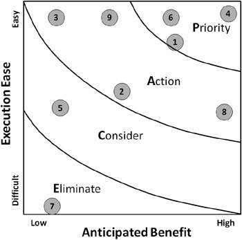
图 4.1 用于设定优先级的 PACE 图表
在团队成员选定并排序改进项目后，接下来是他们
记录未来状态设计，并评估未来状态的预期表现。
构建未来状态价值流图时，需要遵循你在第3章学到的相同步骤。如果有必要——通常确实如此——团队会回到现场(gemba)来设计未来状态或未来状态的一部分。团队成员用”动词+名词”的格式将活动写在便利贴上，然后按照他们设想的顺序排列便利贴（如有并行流程也要包含）。引导师应提醒团队成员不必关心工作将如何完成。在这个阶段，他们只需要关注做什么的高层描述。此时，便利贴只应包含流程描述：不包含指标、不包含部门名称、也不包含流程块编号。
接下来，团队应决定每个流程由哪些职能部门执行，以及预计的加工时间、交付周期和完整准确率(%C&A)。在这个阶段，这些指标是由经验丰富——且现在已具备充分知识——的专业人员做出的可靠估算。根据我们的经验，许多团队往往会低估而非高估变革带来的积极影响。虽然尽可能保持现实很重要，但每个人都需要承认，在转型过程的这个阶段存在大量未知因素，可能会改变预测结果。如我们所说，重大转型通常需要多个PDSA循环；当新发现表明团队的未来状态预测需要调整时，就应该调整。
然后，团队成员应创建时间线并计算预计的汇总指标，遵循他们创建当前状态图时的相同步骤。他们应将汇总指标添加到当前状态映射期间开始的结果表中，如表4-1所示。
表4.1 未来状态价值流基本绩效指标
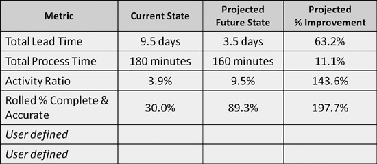
下一步是记录实现映射团队设计的未来状态所需的改进措施。这些改进通过”改善爆发图(kaizen bursts)“直观呈现——这是未来状态图上的不规则形状图标，用于描述实现未来状态所需执行的改进。（我们经常在当前状态图上看到改善爆发图，但最好将它们放在”蓝图”——即你寻求构建的未来状态上。由于未来状态图最终会被分享和张贴，你需要展示价值流未来的样子，以及实现目标所需的变革。当前状态图仅代表当前状态。）
在大多数情况下，改善爆发图应概括性地描述改进内容（做什么），而非具体方法（怎么做）。记住，价值流映射是一项战略性领导活动，是宏观PDSA循环的一部分。设计和实施具体改进需要一系列微观PDSA循环以及一线人员的深度参与。你希望让最接近工作的人来设计战术层面的改进，而不是让远离工作现场的领导者来决定具体该做什么才能达到目标状态。例如，价值流映射团队可能发现工作需要标准化。在这种情况下，改善爆发图应该直接写明：标准化工作。参与实际改进的员工将（在指导和边界内）决定标准化工作采取何种形式：减少错误的检查清单、简洁直观的标准操作程序(SOP)、塑封的作业指导书等。还要记住，改善爆发图包含的是假设，需要经过PDSA验证后才能纳入价值流。如图4.2所示（与第1章的图1.4相同），爆发图放置在它们所指的流程块附近。
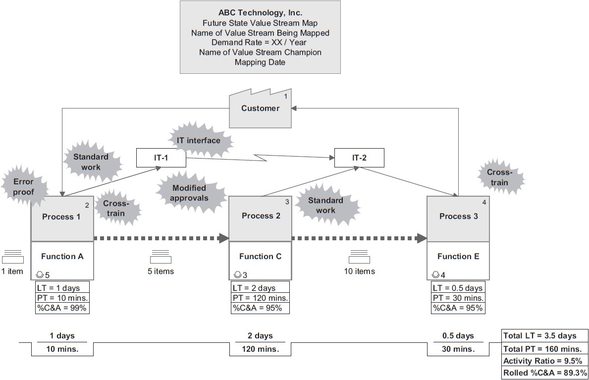
图4.2 未来状态价值流基本图
未来状态设计需要相当程度的创新思维和批判性思维——这种思维与深入理解当前状态所需的思维截然不同。根据组织的不同，设计改进状态可能还需要厚脸皮、坚强意志和相当的勇气。挑战组织长期存在的信念、政策、行为和范式(paradigms)并非胆小者所能为。这也是技能娴熟的引导师成为关键成功要素的原因。否则，经验不足的团队可能会选择容易的而非必要的方案，这不会产生组织通常需要的实质性改进程度。
在未来状态设计阶段，引导师的主要角色从引导发现转变为激发创新、减少变革阻力，并帮助团队就最能服务于价值流客户的整体设计达成共识。引导师应善于解读肢体语言、帮助团队突破僵局、调解分歧、挑战既有范式，并传授团队可能不熟悉的新设计理念。
未来状态图完成后，我们建议再次向相关领导层和关键利益相关者进行汇报，以发现团队可能未考虑到的相关问题，就设计方向和团队选择的进取程度达成共识，并开始让领导者为执行设计可能需要的时间和资源做好准备。最后一个目标引出了映射活动的最后阶段：创建转型计划，这是第5章的主题。
在转型过程中取得最大进展的组织，不仅仅是帮助人们改变思维方式。行为才能产生结果，而大多数人的行为方式取决于考核标准。因此，许多长期存在的组织实践必须改变，才能将整体性思维（以及由此延伸的行为）植入组织的DNA。预算结构、费用追踪、绩效评估和奖金发放方式，都是需要转变的范式和流程的例子。精益管理远不止于运营设计和应用特定工具。
对策在经过完整的PDSA（计划-执行-研究-行动）改进循环并被证明能够充分解决既定问题之前，只是假设。
通常，由于工作量和等待时间的减少，未来状态的总处理时间和交付周期会低于当前状态。在少数情况下，由于在未来状态中添加了当前状态缺失的重要活动，处理时间可能会增加。虽然人们追求更高的活动比率以反映更好的流动性，但由于处理时间增加，或处理时间的减少百分比大于交付周期的减少百分比，未来状态的活动比率可能会降低。详见附录D中的示例。
执行力。这是数十本商业书籍、数百篇白皮书以及无数高管与团队之间沮丧对话的焦点。每位作者、商学院教授和顾问似乎都有自己的理论——通常还有一套方法——来应对把事情做成这个棘手问题。我们将其归结为五个不可回避的事实：你需要一个精心制定的计划、围绕该计划的共识、坚持执行的纪律、知道何时调整计划的智慧，以及只在绝对必要时才偏离计划的克制力。因为新数据或新情况需要而改变计划，与因为可避免的干扰分散了改进团队注意力而偏离计划，两者之间有着天壤之别。
三天价值流图绘制活动的第三天，重点是制定一个可执行的计划，以实现未来状态设计所需的改进。图5.1展示了我们通常使用的价值流转型计划类型。如果你的组织已有标准的项目管理工具，那可能就足够了——只要它包含与可衡量目标的关联、责任归属、时间节点、进度检查的正式机制，并且易于理解和更新。
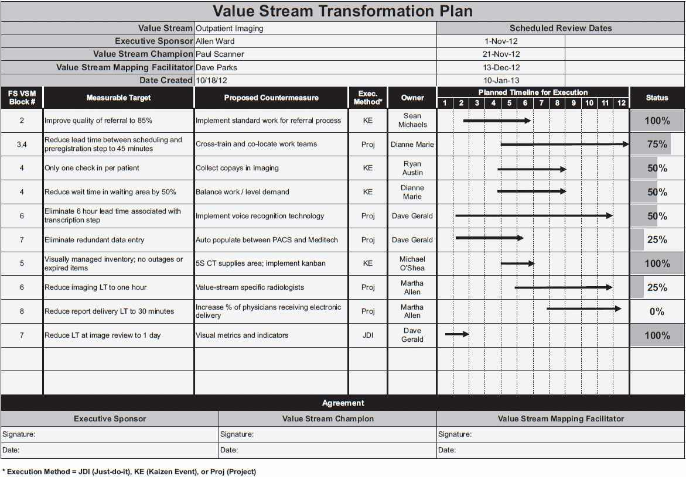
图5.1 价值流转型计划示例
与未来状态价值流图一样，价值流转型计划是一份需要定期更新的动态文档。最好将其与未来状态价值流图一起张贴在受改进影响的工作区域，以便整个工作团队可以跟踪进度。当工作团队看到计划被系统性地执行——并随着新发现和新情况的出现而修订——这传达了一个强烈的信号：组织对改进是认真的，价值流改进是首要任务。认识到这种行为转变，并在日常工作中经历更少的问题和挫折，员工将更加投入到改进过程中。我们还建议在领导层会议上定期审查价值流转型计划，以保持转型活动与组织战略的关联，使领导者能够提出顾虑、寻求改进进度的澄清，并讨论优先级和资源需求。定期与整个价值流图团队一起审查计划也很有帮助，这样团队成员可以看到他们在绘图活动中所做贡献的进展和成果。
我们建议你的转型计划包含以下信息：
章程标题包括价值流名称；参与价值流转型过程的关键责任方，包括执行发起人、价值流负责人（如果有的话）以及绘图活动的引导者；以及转型计划的创建日期。
为确保相关方定期会面并审查实现未来状态的进展，我们发现提前设定会议日期和出席预期是有帮助的。对于时间框架较紧迫的转型计划（少于90天），我们建议每周召开一次状态会议。对于需要三个月或更长时间的计划，我们建议每两到三周召开一次状态会议。我们发现月度状态会议不够频繁，无法推动执行和在需要时做出调整。请参阅第6章了解我们对转型计划审查会议的后勤安排和内容的建议。
列出改进预计要影响的流程块编号。有些团队可能更喜欢对改善突破点（kaizen bursts）进行编号并在此列出，但我们更倾向于列出流程块编号，这样更容易将预期的指标变化与正在改进的价值流部分关联起来。
可衡量的目标是与相应对策相关的具体目标。
正如我们在第四章中提到的，每个对策都是一个假设：如果做出某项改进，团队就是在假设它会产生预期的结果。可衡量的目标描述了价值流图团队预期的结果。通过将设定的目标与实际结果进行比较，团队可以确定其假设是否得到验证，如果没有则进行适当调整。
在可能的情况下，应包含特定流程的目标指标，如目标交付周期(Lead Time)、产出质量、流程时间(Process Time)，或您认为与价值流中流程相关的任何其他指标。如果任何拟议的对策将影响整体价值流绩效，而不仅仅是一个或多个流程块的绩效，也应在此处包含相关指标。
本节列出了未来状态图上改善爆发点(Kaizen Burst)中包含的改进措施。请记住，未来状态价值流图上的改善爆发点列出的是改进方面需要发生什么，而不是具体如何实现改进。确定如何设计和实施改进的权力，通过下一节描述的执行方法之一，交给实际执行相关工作的人员。
正如我们在第二章中简要提到的，我们使用对策(Countermeasure)一词而非解决方案(Solution)，以帮助建立持续改进文化，这首先从人们的思维和表达方式开始。“解决方案”一词带有一种隔墙交付、永久修复的思维定式，这忽视了我们工作和生活中不断变化的世界。实际上，每当对流程或产品进行修改时，都会产生意想不到的后果。在实践中，所有想法都需要仅被视为假设；在全面采用之前，必须先进行测试和结果评估。此外，一旦条件发生变化，绩效开始波动，流程就需要调整。几天或几周前可能适用的”解决方案”可能已不再适用。对策一词更准确地反映了持续调整变化条件以及转变思维方式和行为所需的灵活性，而这两者都是建立高绩效持续改进文化的前提。改进是临时的对策，而非永久的解决方案。
明确改善爆发点上列出的改进将通过何种方式执行，有助于领导者和规划团队确定完成时间框架、所需资源等。我们通常将改进分为三类：立即行动(Just-Do-Its)、改善活动(Kaizen Events)和更复杂的项目。
我们将那些可以非常快速完成（一天或更短时间内）、风险低、不需要大量跨职能参与或深入分析的改进称为”立即行动”(JDI)。例如悬挂说明标识、移动设备、取消评审和审批流程（一旦达成共识），以及其他低复杂度的改进。这类改进是通过迷你PDSA循环进行的简单实验。它们规模小、风险低、易于测试——让我们看看是否有效！
有些改进通过为期两到五天的改善活动(KE)执行最为高效。在许多情况下，组织能够将两个或更多密切相关的改善爆发点整合到一个改善活动中。执行良好的改善活动是在整个组织传播PDSA思维并快速取得成果的高效方式。但它们确实需要大量规划和仔细确定范围才能成功。流程重新设计以及标准作业(Standard Work)的开发和实施是办公室和服务类改善活动中常见的改进内容。
对于未来状态价值流图上那些包含无法在改善活动框架内完成的复杂改进的改善爆发点，我们建议使用更传统的项目(PROJ)框架。例如需要进行大量数据分析的情况、改进涉及大量资本投入或技术修改、或改进将影响外部客户或供应商等。为避免转型过程的延误，这些项目需要由熟练的项目负责人进行严格管理。（对于某些行动项，团队可能需要首先参与一个我们称之为快速规划活动(Rapid Planning Event, RPE)的结构化改善活动式流程，使跨职能团队能够制定更详细的执行计划。这对于复杂和/或影响广泛的改进来说是一个有帮助的第一步。）
一些读者可能想知道日常改善(Daily Kaizen)（也称为其他名称，如”快速简易改善”、“套路”(Kata)、“日常精益理念”和”日常持续改进”）在价值流转型中的位置。我们将其视为一种必要的组织行为，能够实现持续、渐进式的改进，但我们通常不会将日常改善活动纳入价值流转型计划。我们将计划重点放在实现未来状态设计所需的资源密集型、大规模改进上，因此需要在规定的时间框架内进行严格管理。一旦实现未来状态，您并不意味着”完成了”。第六章将讨论如何实现稳定性并对价值流进行持续改进。
本节列出一位最终负责人的姓名，此人对每项对策的规划、设计、测试、调整（如需要）、实施和稳定负有最终责任。为确保最大程度的连续性，我们建议由价值流图团队成员担任各项目的负责人，因为他们参与了未来状态和转型计划的制定，对每项对策所要解决的问题有深入了解。负责人不一定是亲自执行该对策所有相关工作的人，而是负责协调执行、监控进度，并在转型计划评审会议上提供更新的人。
我们发现，使用简单的可视化工具来展示每项改进的计划开始和结束时间点，是达成共识、清晰传达期望和即将发生的变化、分配资源和跟踪进度的有力手段。你可以使用箭头、彩色单元格或符号来表示计划的执行时间段。在三个月计划中，列可以代表12周；在一年期计划中，列可以代表12个月。
本节需定期更新——至少在每次计划评审会议后更新。使计划的进度部分高度可视化（如我们使用的进度渐变色），可以更容易地看到进展和延误。
本节适用于那些需要正式展示转型承诺的组织。当然，签名只是形式。真正的承诺体现在价值流图绘制后的数月里，领导层在转型计划执行和按需调整过程中的高度参与。
转型计划创建完成后，团队应举行最后一次汇报，就前进路径获得相关领导的认可。这是就正确执行计划所需的时间和资源进行坦诚讨论的时机，需要确认计划的激进程度与组织吸收变革的能力相匹配，讨论重新确定工作优先级的需要（如相关），并提出可能的成功障碍。对未来状态设计感到兴奋是一回事，看到实现该未来状态所需的具体内容则完全是另一回事。要警惕那些想要比团队认为合理的时间更短的谈判领导者。大多数领导者已经远离一线很长时间，对规划和执行深思熟虑的改进需要多长时间已经脱节。（这就是为什么领导者需要定期到现场(gemba)去，这样他们可以更好地了解实际问题并亲眼看到问题所在。）
根据我们的经验，计划很少在汇报会上就得到最终确定和所有相关领导的批准。领导者通常希望在完全承诺计划之前与他人交流。但我们建议大力推动在一周内获得计划批准。从绘图活动结束到开始进行改进之间的延迟时间越长，未来状态被推迟的风险就越高。
在第三次汇报结束时，价值流图绘制活动正式完成。产生了三项交付成果：现状图、未来状态图和转型计划。团队辛勤工作，应该受到表彰。这是紧张但令人振奋的三天。
在整体转型计划所有权方面，我们建议设立一位唯一的责任人。此人通常是价值流负责人(value stream champion)，因为他或她在组织中的位置通常足够高，可以推动变革，同时又比执行发起人更接近在战术层面执行的人员。转型计划负责人通常主持状态会议；在出现障碍时帮助解决问题；支持那些为实现未来状态而工作的人；并定期向执行发起人、高级领导团队以及策略部署计划（如有）的负责人提供更新。
值得重申的是：根据我们的经验，计划评审会议是价值流转型的关键成功因素。它们降低了分心的风险，并帮助组织围绕执行和问责形成强有力的习惯。虽然我们建议由价值流负责人（或类似角色）主持会议，但执行发起人在整个转型过程中保持充分参与至关重要——尽可能多地参加评审会议，并通过定期到现场(gemba)监控转型计划。当问题出现时，执行发起人可能还需要与其同级团队合作，解决可能对执行成功构成障碍的政策、资源和政治问题。我们发现，结果与执行发起人保持可见参与的程度之间存在直接关联。这是许多组织在价值流转型中容易失败的阶段。正如我们前面提到的，创建价值流图的目的是进行改进。不执行，就没有改进。
在最后一章中，我们将讨论如何推动执行，以便你成功地将意图转化为结果。第六章是理论与实践相结合的关键所在。
*要下载这个基于Excel的转型计划模板，请访问 www.vsmbook.com。
*一些组织将改善活动(kaizen events)称为快速改进活动（RIEs）、改善闪电战(kaizen blitzes)或工作坊(workouts)。如果你不熟悉改善活动，可以参考我们的书《改善活动策划者》（The Kaizen Event Planner，生产力出版社，2007年）。该书包含一张互动CD，内含15个基于Excel的规划、执行和跟进工具。请访问 www.ksmartin.com/TKEP。
正如你可能已经体会到的，执行改进措施并保持成果往往是改进过程中最困难的部分。原因在于：执行和维持变革所需的组织行为，与规划阶段所需的行为完全不同。创建当前状态图和未来状态图需要清晰的思路和创造力，而成功执行和维持改进则需要专注力和纪律性。遗憾的是，我们看到太多组织设计了精美的未来状态图，却最终被束之高阁。
在许多案例中，组织因为没有为成功打下适当的基础，从一开始就注定了失败。例如，如果价值流改进没有与业务需求、组织目标和优先事项正确关联，或者如果负责价值流各职能的领导没有全力支持这项活动，那么绘制出的地图就有可能变成一纸空文。
此外，如果绘图团队没有包含所有关键职能部门的代表，或者成员缺乏战略决策权限，那么未来状态图和转型计划就必须在绘图后经历一个”推销”周期，以获得受影响领域领导者的支持。这个阶段往往会让改进工作停滞不前，因为为了获得领导层对未来状态设计和转型计划的支持，团队成员不得不重新讲述他们三天共同发现、分析和创新的经历。
由于三天时间里进行了大量深入的讨论，那些不在团队中的人很难快速获得对当前状态的深刻理解——而正是这种理解催生了未来状态图。在这种情况下，团队往往发现自己不得不为未来状态设计进行游说。这个额外的推销步骤可能令团队感到沮丧、耗费时间，而且——如果团队成员缺乏出色的销售和影响力技巧的话——最终可能徒劳无功。这就是我们强调价值流绘图团队必须包含能够影响和授权变革的领导者的原因。
我们经常看到的另一个问题是，组织在执行转型计划的大部分内容之前就分心了。这就是为什么领导承诺和组织专注是关键成功因素。改进目标价值流必须由战略需求驱动，并被整个领导团队视为组织的首要优先事项——以赋予它所需的重要性，从而确保对转型所涉及的重大工作做出承诺。
假设你的组织没有上述任何问题。很好！你已经走在成功的道路上了。但在转型过程中还有一个关键步骤，将在很大程度上决定转型的顺利程度。这是一个经常被忽视的重要步骤：在整个价值流中传播和分享地图及转型计划。
回想一下，在规划阶段传播章程有助于增进理解，减少转型推进过程中对变革的抵触。人们需要理解为什么需要变革，以及变革将如何影响他们。在绘图活动之后，第二轮的传播对成功变得更加关键。例如，在相关部门中传播当前状态图，能帮助每个人看到工作如何在系统中流动，以及流动的障碍是什么——这往往是他们第一次了解这些。当人们看到当前状态的真相——尤其是围绕当前状态的各项指标——时，就很难再拒绝未来状态的设计了。当组织就未来状态设计和绩效目标达成共识后，改进就能更快地进行，与人们对为何要进行特定改进缺乏理解时相比，组织的焦虑也会大大减少。
如何最好地传播地图和转型计划？不要轻信只需分发地图和计划的数字版本或张贴出来就够了。你需要谈论它。解释它。让人们提问。这不仅是减少变革抵触的必要步骤；更是整个组织宝贵的学习机会。将整体性思维和行为植入组织的基因需要耐心和大量实践。为了加速这种认知的形成，你需要尽快让足够多的人接触到这套方法论和成果。
我们发现一种有效传播组织学习的方法借鉴了医学教育的技术：大查房（grand rounds）。这些每周或每月的聚会为临床人员提供了学习解决问题新方法的场所。医生向同行、医学生、住院医师和临床支持人员展示特定患者的临床问题和治疗路径——实际上就是临床的PDSA循环。虽然讨论通常带有庆祝的氛围（如同患者治愈时的情形），但也包括对哪些方面效果不佳的坦诚讨论。
我们使用这种模式来展示扎实的问题解决方法、精益原则的实际应用、管理实践和具体改进工具，取得了良好的效果。这些领导者、经理甚至一线员工的聚会，也可以是培养整体性思维和减少变革抵触的有效方式。议程遵循PDSA的案例研究格式。如果你的组织熟悉A3管理（第1章中提到过），我们建议让绘图团队使用A3方法来展示他们的经验。
大型研讨会最适合用于组织范围的学习；但它不能替代在映射活动期间和转型计划进展检查中，与相关领导层以及正在经历变革的员工进行简报沟通的需求。你可以选择在价值流改进过程中举办多次大型研讨会，或者假设时间框架较短，等到初始转型轮次完成、价值流达到新常态后再举办。
如果你选择举办多次大型研讨会，可以安排一次会议来总结宏观 PDSA 循环”计划”阶段的活动和发现（问题、背景、现状发现、根本原因确定、未来状态设计、转型计划），再安排一到两次会议来分享”执行”、“研究”和”调整”阶段的经验。再次强调，大型研讨会不能替代三阶段映射活动期间的临时简报，因为在映射活动中需要做出实时决策并建立共识。
无论你是否决定让整个组织了解你的价值流映射和转型经验，至少必须将未来状态图和转型计划传达给所有领导层（从主管到高管层），他们对将直接或间接受到改进影响的职能部门和支持部门负有责任。本着尊重人的精神(Respect for People)，同时也为了促进计划执行，作为流程一部分的员工或将受到改进影响的人员也必须了解映射活动和转型计划。
有必要再次强调：分享地图和转型计划需要作为讨论的一部分，而不仅仅是作为电子邮件附件进行传达。进行这些对话可以减少阻力，并让你从实际执行工作的人那里获得宝贵见解，这将有助于执行转型计划。
当然，价值流映射的主要目标是改进价值流。创建现状图只是深入了解当前工作方式、识别问题和改进机会、建立明确的改进基线的手段。未来状态图是构建改进后价值流的蓝图。它提供了未来工作如何流动的宏观视图。就像花钱请建筑师创建新房子的蓝图，然后却决定不建造房子是浪费金钱一样，除非你真正改进价值流，否则价值流映射就是白费力气。
转型计划是理论付诸实践的地方。它是采取行动、获得成果、实现未来状态设计的计划。但是，无论你的计划多么好，无论保持专注以实现改进状态多么重要，都要小心不要过度固守你的计划。记住，每一个对策都是一个假设（我们认为 X 将解决 Y），需要被证明并执行，或者被证伪后修改或取消。
当你开始执行改进时，你可能会发现需要调整原始计划。毕竟，每一项改进都会创造一个新的设定点(Set Point)，这可能会产生改变后续行动的需求。你可能还会发现，你所做的一些改进会产生映射团队没有预料到的意外后果——无论是好的还是坏的。此外，业务的流动性可能要求你适应变化的条件。
固守你的计划——仅仅因为它是一个计划——而忽视过程中表明你的计划需要调整的证据，是对科学问题解决方法的严重违背。话虽如此，组织更常犯的错误是组织性注意力缺陷障碍(ADD, Attention Deficit Disorder)，即不能坚持执行精心设计的计划，而不是过度固守一个应该调整的计划。优秀的组织拥有按设计执行计划的纪律——除非借用法律术语，“优势证据”(Preponderance of Evidence)表明需要修改。
可以把转型计划想象成 GPS 设备：它提供初始方向，但如果你遇到道路施工、走错路或决定走稍微不同的路线，它也会为你重新规划路线。你也可以把价值流转型想象成类似于体育运动。成功的运动员和团队会根据比分、犯规和其他变化条件做出实时调整。
当你开始执行转型计划时，你就进入了宏观 PDSA 循环的”执行”阶段，以及许多嵌套微观 PDSA 循环的开始（图 6.1）。微观 PDSA 循环使你能够为具体改进制定计划（建立假设）、进行小型实验、研究结果，并在最终推广之前根据需要进行调整。在可能的情况下，我们建议你使用试点(Pilot)（使用整体的一个定义子集，如特定的地理区域、部门、客户群或产品），这样你可以在将改进推广到可能因需要更多完善的改进而受到干扰的全部利益相关者之前，测试、评估和完善改进。试点是实验，精心规划的实验是稳健持续改进(Continuous Improvement)的基础。
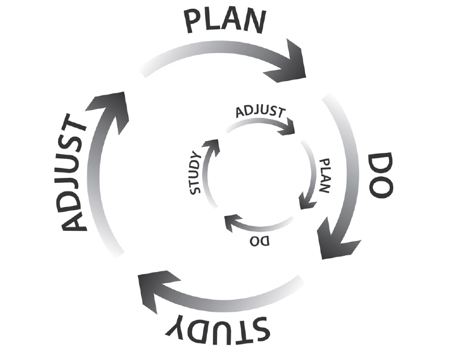
图 6.1 嵌套的 PDSA 循环
遵循这一科学流程可以确保所有参与改进的人都在进行批判性思考，打破过早跳到解决方案或为了赶截止日期而仓促执行的旧习惯。
正如你在第五章中学到的，你的价值流转型计划应该包含明确的日期，届时由指定团队审查转型计划，评估进展并根据需要进行纠正。为了避免分心、直面实时障碍、并在必要时为调整计划提供适当的场合，按时进行进度检查至关重要。同样重要的是，负责转型的团队成员需要坦诚讨论转型进展、存在的障碍以及需要采取的纠正措施。在这些进度检查中，如果条件发生变化，转型计划应该进行相应修订。如果计划被修订，需要重新与所有利益相关者沟通，以保持一致性。
当你实施对策并看到积极成果时，评估是否适合将这些对策扩展到不同领域的类似流程，或者扩展到比映射活动所涉及的更广泛的条件。你需要充分利用团队获得的经验，并尽可能广泛地传播组织学习成果和实际成效！
我们经常被问到谁应该参加转型计划评审以及会议议程应该包含什么内容。在大多数情况下，执行发起人、价值流负责人以及各项改进的几位关键负责人参加状态会议就足够了。会议的目的是评估进展，确保各方在改进时采用严谨的PDSA（计划-执行-检查-行动）方法，解决障碍，必要时重新确定工作优先级，并考虑可能需要调整计划的新信息或条件。
与任何会议一样，我们建议你提前准备正式议程并收集相关背景信息进行讨论，以使会议尽可能简短且聚焦于行动。在许多情况下，在现场（gemba）举行转型计划评审是最有效的。这让团队有机会看到他们工作的实际成果，并进一步展示组织对转型的承诺。
这些会议的内容因情况而异，但常见议题包括以下内容：
具体条目问题
尝试了哪些对策？进展如何？是否有对策需要调整或取消？如果是，原因是什么，谁

参与了这个决定？

是否识别或采用了新的对策？如果是，是什么推动了采用，谁

参与其中，目前状态如何？
是否出现了需要调整转型计划的新情况？

（确保”新情况”是真实存在的，而不仅仅是习惯性的注意力不集中和优先级转移。）
指标表现如何？是否达到了可衡量的目标状态？如果没有，原因是

什么？是否可以进一步调整？
如果计划落后于进度，需要做什么才能回到正轨？是否需要重新排序改进项目或调整启动时间？


是否出现了意外后果？如果是，如何应对？

文化和领导力问题
条目负责人是否有足够的时间（或被给予足够的时间）专注于

他们负责的转型要素？
执行人员是否遇到了来自他人的阻力？如果是，他们是否

能够有效地解决（通过学习和建立共识，而不是”就这样做”）？
实施对策所需的资源是否可用——例如

财务、技术、主题专家（SME）和领导力支持？
需要领导层提供什么额外支持来解决参与度

和阻力问题？（考虑是否需要修改政策、重新分配资源、改善部门内部或跨部门沟通等。）
请记住，这些会议的目的是评估转型进展和发现可能存在的障碍，而不是解决问题。如果以这种方式管理评审，这些会议不需要花费大量时间。此外，我们建议你定期向未出席的原始映射团队成员和转型相关领域的领导提供状态更新，并邀请他们提出关切、讨论观察结果，保持对转型过程的参与。
当我们问领导者和改进专业人士变革最困难的方面是什么时，他们几乎总是说：“维持”。如果你也是这些人中的一员，我们想稍微挑战一下你的思维。维持改进其实可以出奇地容易——如果你计划周全、让合适的人参与、建立共识、严格遵循PDSA，并且有一个强大的管理体系。我们怎么强调都不为过：维持改进始于正确的规划，然后是正确的执行和管理。
正确的规划包括创建和传达一份映射章程，反映出范围明确的活动和合适的团队成员。在映射活动期间，几乎发生的每件事都为维持或侵蚀改进奠定基础。这包括团队在理解现状时的深入程度、团队成员在设计未来状态时的安全感、映射团队的共识程度、转型计划各项的所有权和责任程度，以及领导层的承诺和支持程度。
一旦你成功实现了迭代后的未来状态，必须牢固建立两件事来维持它：(1) 正式指定一个人来监控价值流绩效，评估其运作情况，在问题出现时促进问题解决，并领导持续改进以提升绩效标准；(2) 建立关键绩效指标(KPI)来判断绩效是否在正轨上（价值流管理）。
根据我们的经验，导致绩效改进放缓或停滞、或造成绩效下滑的问题之一，是没有一个明确负责监督价值流绩效的人。如果继续让多个职能领导各自只关注他们那部分价值流，就很难以有意义的方式影响价值流绩效。当每个人都负责时，就没有人真正负责。你需要一个人来关注整个价值流。
监控绩效的人——通常被称为价值流经理(value stream manager)或价值流负责人(value stream champion)——专门负责并被赋予足够的带宽(bandwidth)，持续监控和领导整个价值流的改进。这个人负责监督测量、传达成功、在问题或机会出现时领导持续改进、在工作发生变化时重新培训等等。对于大型价值流，我们建议这个人在组织中至少是总监级别或以上。较小的和支持性的价值流可以由经理来监督，只要该经理有权力或影响力来组建跨职能团队解决问题，并进行与战略紧密相关的改进。
组织经常对需要让一个人监督高度跨职能的价值流这一建议表示犹豫，对此我们会说：“好吧，你们目前的方法效果如何？”是的，这对高度条块分割(siloed)的组织来说是一个新概念。毕竟，这意味着让某人管理价值流，而从组织架构图上看，这个人并不对构成该价值流的所有职能领域拥有权力。但目标是表现出色，对吗？为客户提供高价值，同时保持高水平的财务管理，并提供一个有成就感的工作场所——这是大多数企业存在的原因。所以让我们不要自己阻挡成功之路，而是创造手段来实现组织最关键的目标。你不一定要重新思考你的组织结构（尽管这可能是一项非常明智的活动），但你确实需要有一个人被所有人认可为”拥有”价值流绩效，并有权力来影响它。
在成熟的持续改进组织中，价值流经理有时被赋予整个价值流的损益责任。在这种情况下，价值流通常被构建为一个业务单元，拥有自己的核心服务，并从企业其他职能领域借用、租赁或购买共享服务。你不必走这么远，但这是一个你可能想要尝试的概念。它需要整个组织的重大承诺，并需要重新思考组织结构、激励机制、实施精益会计(Lean accounting)原则等。
如果你的组织还没有准备好按价值流来构建自己——无论是在纸面上还是在实践中——你可以从实践部分开始。价值流负责人或经理只需被认可为负责价值流绩效并有权推动问题解决、纠正措施和持续改进以提升绩效标准的人。
我们经常被问到价值流应该多久改进一次。答案是持续地。我们理解这对许多组织来说是一个艰巨的任务，但持续改进是你摆脱被动救火文化的唯一出路，这种文化会阻止你的组织在各个层面上出类拔萃。
虽然战略部署(strategy deployment)（在第1章中提到）和价值流图是战略性活动，但大部分持续改进实际上是相当战术性的。成功来自于为价值流本身及其内部所有主要流程明确定义关键绩效指标、指定价值流经理和流程所有者、制定改进价值流的战略和计划，以及拥有一支技能熟练、有动力并被授权进行战术层面改进的员工队伍。
我们还建议你至少每年为每个关键价值流进行一次价值流层面的改进活动（与领导层一起进行的三天活动）——如果可能的话，频率更高。毕竟，如果你以应有的认真态度来对待价值流管理，那么六个月前由图绘制团队设计的未来状态价值流图，以及此后一直在严格执行的内容，现在已经是当前状态了。现在是进行另一轮宏观PDSA(Plan-Do-Study-Act)循环和设计新的未来状态的时候了，以解决更难摘的果实并提升绩效标准。另一轮改进将使你能够以更低的成本提供更大的价值，获取更大的市场份额，让竞争对手无法追赶，创造健康的回报以分配给股东或再投资于组织，并帮助你成为首选雇主。
价值流图是一个被严重误解和未能充分利用的工具，它可以用于协调人员、可视化问题、确定改进活动的优先级，并将绩效提升到新的水平。学会从价值流的视角来观察和管理工作，是一种将新思维方式植入组织DNA并实现更高绩效的有效方法。领导团队在价值流图活动中养成的习惯——亲临现场(gemba)、将改进与业务需求、战略和年度目标联系起来、各部门围绕共同目标真正协作、使用标准的时间和质量指标评估绩效等——这些习惯将推动您的组织迈向更高的高度。
我们希望这本书能为您提供一个坚实的起点，让您开始从整体视角看待工作并应用一致的指标所带来的收益——或者加深您的理解，为您提供如何将价值流图和价值流管理提升到新水平的新见解。无论如何，与任何学习一样，练习是通往精通的途径。所以开始行动吧！练习、练习、再练习。
[*]对于拥有分布式员工队伍的组织，改进”大查房”(grand rounds)可以通过虚拟方式进行。然而，与任何虚拟环境一样，学习效果与参与者专注于内容的程度成正比，并且不受电子邮件、短信等干扰。
价值流图图标
办公和服务价值流图中常用的图标如图A.1所示。请记住，价值流图是一个故事板，旨在直观地反映当前状态和改进后的未来状态。在创建反映组织内工作流程的图表时，您可能需要用自己的标准化图标来补充这套图标。价值流图图标应该是直观且明确的表示，使所有查看图表的人都能快速而深入地理解。使用最能代表工作和信息如何在价值流中流动或应该如何流动的图标。
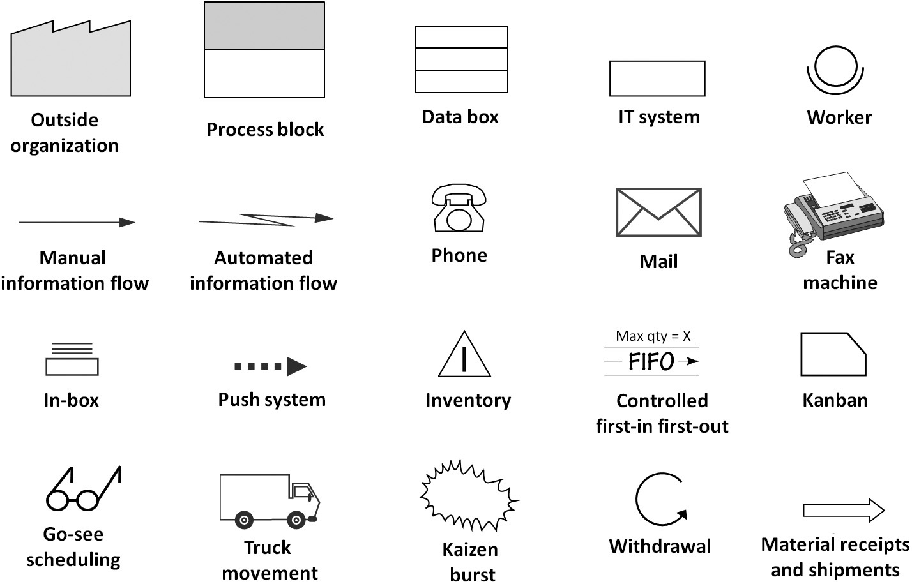
图A.1 常用价值流图图标
以下是每个图标的简要说明：
外部组织。 外部组织是指外部客户、外部供应商以及您在价值流中外包活动的外部第三方。

流程块。 流程块以动词加名词的格式包含对价值流中每个流程的简洁、高层次描述，以及执行该流程的职能名称。

数据框。 数据框包含流程特定信息，如处理时间(PT)、前置时间(LT)和完整准确率(%C&A)。它还可以包含流程特定的其他信息，如批量大小或频率、有效性百分比以及其他流动障碍。数据框直接放置在相应流程块下方。

IT系统。 每个用于支持价值流的应用程序或系统的名称都标识在此图标内——每个系统一个图标。IT系统通过适当的信息流图标与流程块或其他IT系统连接。

工作人员。 工作人员图标象征着一个坐在椅子上的人的俯视图，用于标注在价值流中执行该特定流程的工作人员数量。该图标通常放置在其所代表的流程块的下部。

手动信息流。 直箭头图标表示从人员到IT系统以及从IT系统到人员的信息流动。箭头指示信息流动的方向。

自动信息流。 “闪电”箭头表示IT系统之间或IT系统与人员之间的自动化信息流动。箭头指示信息流动的方向。

电话、邮件、传真机。 这些图标用于指定信息传递的方式。信封可以用于电子邮件或邮政通信。其他通信图标可以包括嘴唇或嘴巴表示口头通信、火柴人表示步行传递信息到另一个区域，以及各种符号表示即时通讯、内部网、保密通信系统等。

收件箱。 收件箱用于描述在制品(work-in-process)，包括等待处理的工作、正在处理的工作或已完成但尚未传递到价值流中下一个流程的工作。在绘图期间观察到的工作数量写在图标下方。一些组织更喜欢使用下面描述的三角形库存图标来实现此目的。

推动系统。 推动箭头用于描述工作从一个流程传递到下一个流程时，不考虑下游流程是否可用或是否有能力处理该工作。

库存。 库存图标表示在每个流程块处排队的实物项目或在制品。在绘图期间观察到的数量写在图标下方。

先进先出(FIFO)受控。 一种拉动系统，其中最大数量的

在建立工作流程之前，可以排队的工作有一个最大数量限制，用于管理过度生产和控制流通时间。这个最大数量标注在 FIFO 通道图标上方。当达到最大值时，上游供应流程会收到信号，停止传递额外工作，直到队列中的工作数量低于允许的最大值。当队列满载时，通常需要临时重新分配资源来帮助缓解瓶颈。
看板(Kanban)。 一种拉动系统，下游流程通过某种信号授权

上游流程补充已消耗的内容（如实物库存、排队工作等）。
现场观察调度(Go-see scheduling)。 一种反应式调度系统，特点是通过非标准化的

人工监控。根据监控结果，对工作优先级进行调整。
运输工具。 各种图标，如卡车、汽车、火车、飞机、轮船等，

可用于显示工作的物理运输方式。运输频率通常标注在图标内部或下方。
改善爆发(Kaizen burst)。 这些不规则形状的”星形爆发”包含将价值流从

当前状态转变为价值流愿景所需的宏观层面改进活动。随着改进的推进，改善爆发应在未来状态图上被高亮标注、划掉或移除，以显示转型的实时状态。
提取(Withdrawal)。 提取箭头描述了下游流程从上游”超市”

拉取物料或工作的情况。
物料接收与发货。 空心箭头描述了实物物料的移动，

如原材料、零件、试剂、成品等。
门诊影像服务价值流
改进门诊影像价值流被选为一家刚刚开始精益之旅的医院的示范项目。选择该价值流作为医院第一次价值流图绘制体验有几个原因：(1) 医院面临来自新开业的邻近影像中心的竞争加剧，市场份额流失；(2) 转诊医生一直抱怨报告周转时间过长；(3) 该部门在过去两年经历了较高的技师离职率。
在制定章程时，很明显团队需要缩小范围，因此团队决定专注于当时业务量最高、利润率最高的服务：CT 扫描。图绘制活动连续进行了三天，团队成员包括：运营副总裁、影像科主任、影像科经理、预约和预登记主任、入院和患者体验经理、财务主任、一位高业务量转诊医生的办公室经理以及一名放射科医生。
现场走访(gemba walk)效果显著。没有一个团队成员了解完整价值流的运作方式，几位成员注意到科室物理布局和患者护理区域整体外观存在问题。与技师讨论价值流绩效开始揭示导致士气低落和高离职率的问题。团队还注意到其他问题，如患者等待时间过长、供应品缺货、报告转录和审批延迟等。从积极方面来看，团队对行政和临床人员与患者的互动方式以及对昂贵资本设备的精心维护印象深刻。让关键客户之一参与图绘制团队，对于定义客户价值非常有帮助。
第一天结束时，当前状态价值流图已完成（图 B.1），图绘制团队既统一了认识，也明确了未来状态的使命。你会注意到，整体合格率(%C&A)是所有流程块各自合格率的乘积，而总前置时间(Total LT)和总加工时间(Total PT)是流程块 5 至 11 各自前置时间和加工时间的总和。团队做出这一选择是因为第一个流程块（转诊医生）的质量是导致患者满意度低和医院员工大量返工的关键因素，而流程块 1 至 4 的时间并未导致价值流绩效不佳。在这种非紧急门诊环境中，患者通常要求在方便的时间预约，而不是第一个可用的预约窗口。当客户（患者）自己要求延迟时，我们不想扭曲总前置时间。未来状态图也是如此。
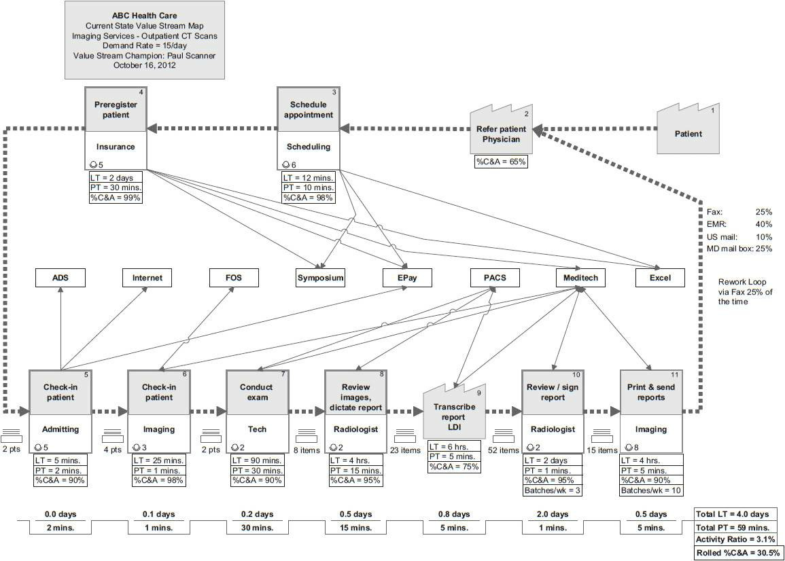
图 B.1 门诊影像当前状态价值流图
未来状态价值流设计阶段包括多次”激烈讨论”（通常如此），但一旦团队成员就他们认为能改进价值流的对策达成共识并创建了未来状态图（图 B.2），他们就迫切希望开始改进。表 B.1 显示了当前状态和预期未来状态的汇总指标。除了一个改善爆发（实施语音识别技术以消除第三方将口述报告转录为书面形式的需要）之外，未来状态图在五个月内完全实现。这些改进通过四次改善活动、两个项目和一个立即行动来设计、测试、完善和实施。
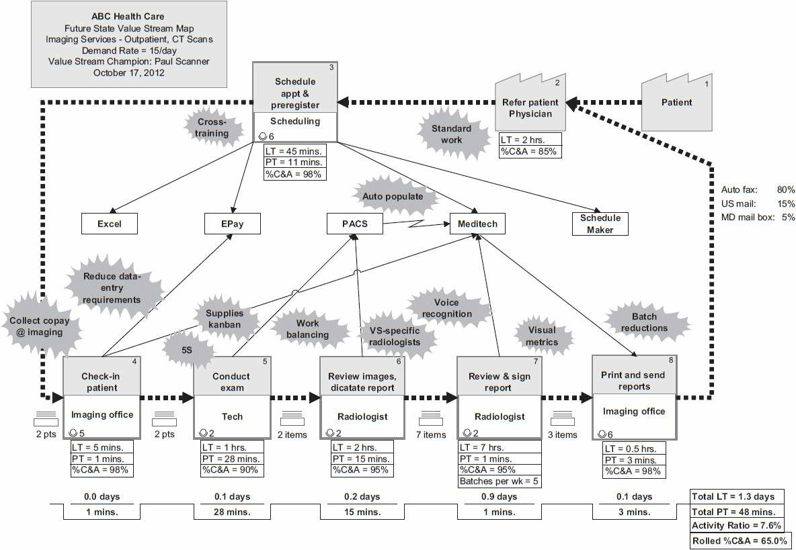
图 B.2 门诊影像未来状态价值流图
现状图绘制带来的最大发现之一是支持价值流的IT系统和应用程序存在大量冗余和断开。这一发现促使医院调整预算资金和资本支出优先级，加速向更全面的企业级解决方案转型。另一个发现是转诊医疗机构在多大程度上导致了患者不满和延误——35%的情况下患者到达时准备不足和/或没有正确的医嘱。第三个最大的意外发现是繁琐的IT登录问题导致放射科医生批量处理报告审核和批准。在后续的改善活动(kaizen)中，IT团队成员仅用35分钟就解决了这个困扰多年的登录问题，令放射科医生欣喜不已，并将整体前置时间缩短了整整一天。
这项价值流改进工作加强了医院与转诊医疗机构的合作关系，改善了患者体验，减少了影像科工作人员的挫折感，并提高了转诊医疗机构的满意度。由于士气提升，在价值流改进活动完成后的12个月内，医院没有出现技师离职。
检查环节的价值流改进还为医院创造了额外50万美元年收入的能力，且无需增加设备或人员。这是一个重要成果，大多数组织未能充分认识到这一点。仅仅将技师进行CT扫描的时间缩短两分钟所释放的产能，就使医院每天每位技师能够多做一次CT扫描。在这个每周工作五天的门诊运营中，这一收益为医院创造了额外50万美元的收入能力。这是一个很好的例子，说明看似微小的改进如何积少成多。
图C.1、图C.2和表C.1展示了如何使用价值流图改进支持性价值流。在这个案例中，负责工程设计的领导团队收到了大量员工投诉，反映获取为外部客户设计精密电子产品所需的设备和物资耗时太长。
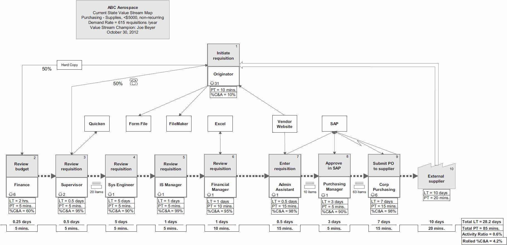
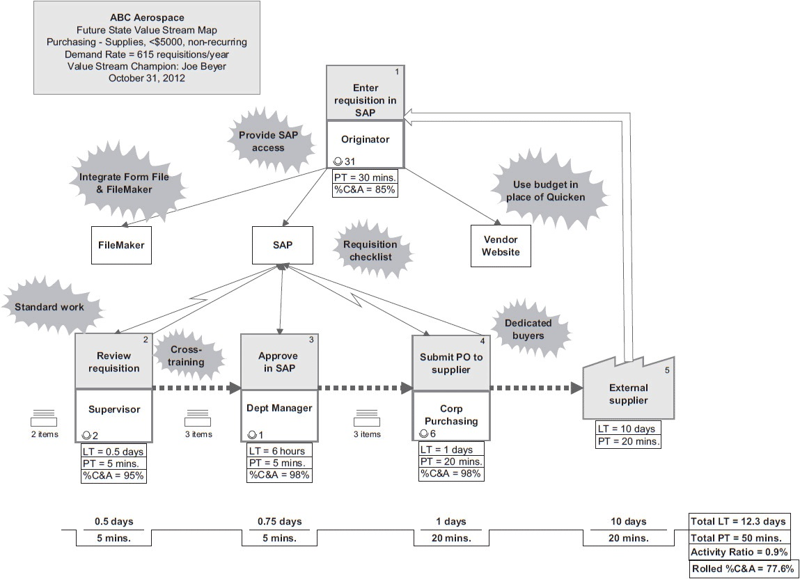
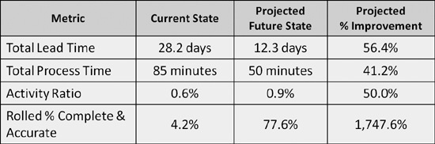
在与客户的初次会议中，选择价值流图而非流程图，是因为它能更好地可视化交接之间的重大延误，并有助于在分散的领导团队中达成共识。试图绘制所有可能的采购类型似乎不太明智，因此领导团队选择绘制以下条件：5,000美元及以下的非经常性物资采购。
通过重新思考谁需要批准和处理采购申请、消除不必要的软件应用程序、调整由谁将申请录入系统、设立业务部门专属采购代理以及标准化工作，团队将交付时间缩短了一半，并在不给流程引入重大风险的前提下，释放了管理者的时间用于更有意义和更高优先级的任务。
图D.1、图D.2和表D.1所示的价值流图活动是公司范围精益转型的启动项目。该公司有两条面向客户的价值流——维修和安装——并决定从利润率更高、增长最快、涉及员工最多的价值流开始：维修服务。
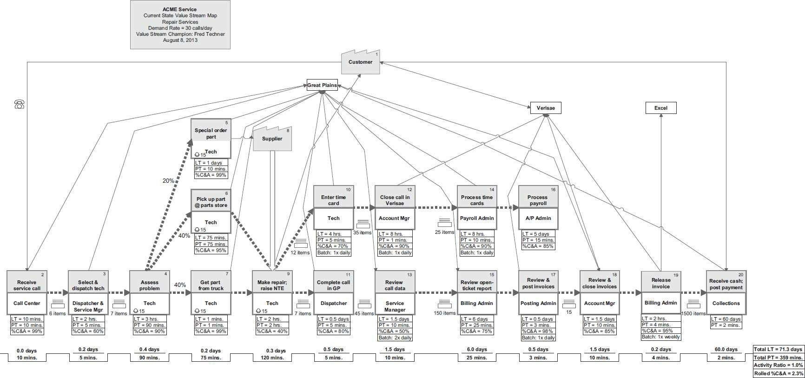
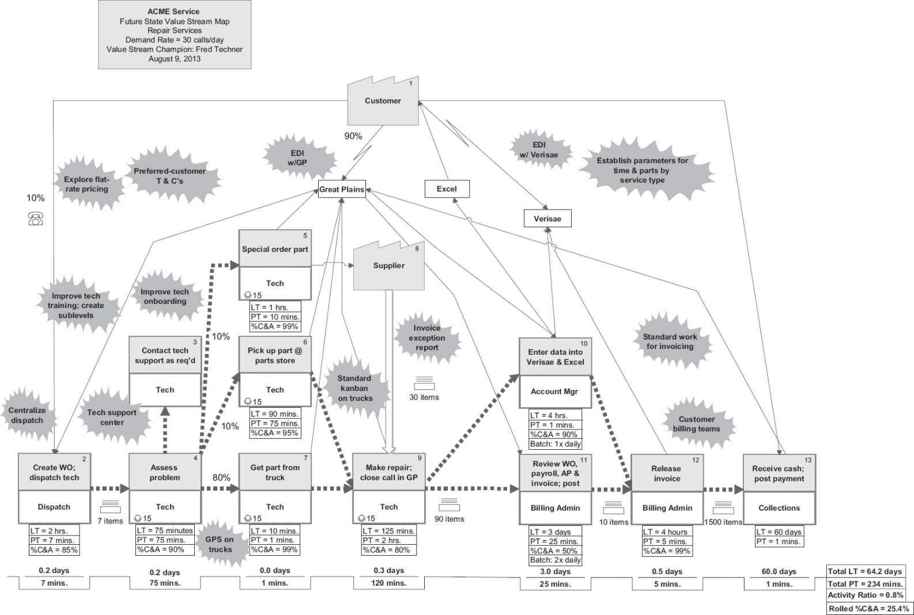
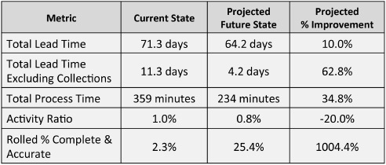
围绕这条价值流的改进工作打破了许多人认为的传统精益思维。首先，绘图团队决定集中调度——至少在短期内——以掌握与调度相关的问题，利用技术，标准化流程，并有效获取评估技师技能和设计职业技能发展计划所需的信息。许多人认为分散化代表精益思维，但并非总是如此。你必须考虑全局并在做出决定之前考虑目标状态(target condition)。
未来状态图还展示了一个增加库存反而合理的案例（比较现状图和未来状态图中流程模块7处访问零件店的频率）。许多精益新手自动假设库存应该总是减少。但当减少库存干扰到为客户提供价值时，就不适用了。这家客户的客户来电几乎都是紧急情况，因此额外花90分钟去取所需零件或额外一天等待特殊订单会侵蚀客户信任并带来市场份额损失的风险。
请注意，未来状态的预计活动比率更低。这是一个例子，由于流程时间缩减百分比大于交付周期缩减百分比，价值流绩效看起来似乎变差了，但实际上并没有。流程时间和交付周期都取得了显著改善，这是好事！
你可能会疑惑，为什么流程块2的交付周期在汇总时间线上显示为0.0。这是因为我们选择”天”作为计量单位，并且只保留一位小数，四舍五入后就变成了0.0。
这次价值流转型活动还有一个值得注意的要素——表D.1也反映了这一点——乍看之下，整个价值流的交付周期缩减并不那么令人印象深刻（10%）。然而，请注意最后一个流程块（收款）的交付周期在当前状态和未来状态图上都是60天。表D.1中的用户自定义指标”不含收款的总交付周期”反映出这样一个事实：现在开票时间提前了7.1天，比当前状态快了63%，显著改善了现金流。这个例子说明，对地图进行分段并从不同视角审视指标是很有帮助的。
实现这个未来状态大约花了一年时间，这是我们近年来参与过的所有未来状态周期中最长的一次。但这种情况下，首席运营官和首席执行官都是经验丰富的精益(Lean)领导者，他们有经验让团队保持专注，同时发展员工能力、引入配套的精益实践并培育持续改进的文化。如果你的领导层经验不够丰富，我们建议采用更短的价值流改进周期。
图E.1、图E.2和表E.1所示的价值流绘图活动有两个起因。首先，客户想了解什么是价值流和价值流绘图。虽然该公司已经走上精益之路数年，但只尝试过几种战术工具，希望探索部署更广泛精益原则和实践所能带来的更多收益。其次，竞争对手开始以更高质量、更快速度和更低成本交付产品，这家企业希望保持其作为顶级货架供应商的地位。
在当前状态绘图过程中，最大的发现之一是：公司生成一份报价平均需要17.5个工作日（超过三周！），占总交付周期的23%，占报价到最终检验交付周期（不含开票流程）的29%。
请注意滚动%C&A（完整准确百分比）的惊人改善——从0.1%提升到31.6%。这恰当地反映了服务水平协议(Service Level Agreements)和标准作业(Standard Work)的强大力量。
此外，公司还能够消除8小时的非增值手工作业（流程时间）。对于大型价值流来说，这似乎不算显著，但考虑到其业务量，这相当于每年释放240,000小时产能，等于123个全职员工当量(FTEs)。当建筑行业开始从经济衰退中复苏、客户再次面临需求增长时，这些释放的产能减少了原本需要增加的人员配置。
另外，通过更充分地利用Oracle ERP系统，客户能够停用一个应用程序，每年节省250,000美元的许可费用。如果企业仅依赖流程级别的绘图，很可能会错过这类发现。
这个案例展示了如何使用价值流绘图来改进更大价值流中的一个部分。图F.1、图F.2和表F.1所示的价值流绘图活动是一家软件公司的示范项目，该公司有兴趣将敏捷(Agile)开发工作扩展到全企业范围的精益管理实践。绘图团队成员包括销售副总裁、客户管理总监、运营总监、市场经理、产品管理总监和两位敏捷教练(Scrum Master)。
在为期三天的绘图活动中，团队就多个议题进行了大量讨论：软件测试的角色、客户参与和责任、如何在迭代次数上取得恰当平衡，以及最小可行产品(Minimally Viable Product)应该多”最小”。另一场哲学性讨论围绕重新定义销售、客户管理和技术团队与客户的直接对接方式和时机展开。第三个主要讨论围绕”梳理”待办事项(Backlog)的做法与消除待办事项之间的取舍。
当前状态发现的最大问题之一是，该组织没有便捷的方式来跟踪
从订单到交付全程追踪客户请求。因此，理解客户需求和交付时间框架变得困难。最终，三个用于追踪价值流各部分的应用被淘汰，两个系统被整合。现在，该组织拥有了基础数据，可以用来衡量绩效并推动价值流改进。
如表F.1所示，未来状态设计消除了近30%的实际操作工作（流程时间），并使公司能够在一半的时间内交付完成的软件项目，同时质量更高，价值流中各职能部门之间的关系更紧密。
与任何价值流一样，仍有更多工作要做。该公司目前处于稳定模式，将在本书付印后不久开始第二轮价值流改进。
请注意，索引链接指向印刷版的页面开头。在电子阅读器中位置是近似的，点击链接后可能需要向下翻一页或多页才能找到索引内容。
A
A3管理，24
责任方：
在章程中，39-42
负责人作为，132
负责可持续改进，145-146
在转型计划中，128
实现转型，135-148
与持续改进，146-148
执行改进，139-142
宣传地图和转型计划，137-139
维持改进，144-147
转型计划审查，142-144
行动，缺乏，20
活动比率（AR），90，121，168
添加流程/流程步骤，104-106
增加工作，101
协议：
章程协议，47
转型计划中的协议，132-133
AR（活动比率），90，121，168
自动化，114
计算可用工作时间，91-92
B
流动障碍，73-75
在未来状态绘制中，106-108
在地图布局上，80
“大本营”房间的准备，52-53
基线指标，39
批处理(Batching)：
解决批处理原因，107
作为流动障碍，74
减少/消除，114
价值流改进的收益，39
注意力盲视(Inattentional Blindness)，57
未来状态地图的区块编号，128
边界，在范围定义中，37
头脑风暴，119
价值流地图上的分支，65-66
休息，在规划中，28
简报：
完成未来状态地图后，124
创建转型计划后，133，134
每日简报，41-42
每个现状绘制阶段结束时，97-98
目的，43
在三阶段绘制活动中，43-44
业务收益，39
确定前置时间时的工作日，72
确定前置时间时的工作时间，72
业务需求：
在章程中，38
价值流改进与业务需求的关联，47-48
C
单元(Cells)，114，132
推动者（见价值流推动者）
章程，31-49
章程中的责任方，39-42
章程中的协议，47
客户和业务收益，39
当前状态问题和业务需求，38
后勤保障，42-44
绘制团队，45-46
可衡量的目标状态，38-39
随叫支持，46
概述交付，30
章程审查，53-54，111-112
范围，31，33-38
章程宣传，47-49
协同办公(Colocation)，114
沟通：
宣传与沟通的区别，47
宣传地图和计划中的沟通，137，139
价值流走访中的沟通，57-58，62
《完整的精益企业》(The Complete Lean Enterprise)（Beau Keyte和Drew Locher著），xii，72n.，93
共识(Consensus)（术语），35n.
持续改进(Continuous Improvement)，146-148
改进的责任制，146
推动，16-17
对策(Countermeasures)：
评估，142
在未来状态绘制中，113-115
作为假设，128-129
精益对策，107
对策与解决方案的区别，46n.，129-130
转型计划中的对策，129-130
批判性思维，122，124
交叉培训(Cross-training)，103，114
当前状态：
在章程中，38
为未来状态绘制审查当前状态，112-113
传播对当前状态的理解，43
现状绘制，51-98
由此产生的清晰度，12
深入和集体理解，97-98
记录现状（见记录现状）
启动，52-56
目的，52
审查发现，112-113
时间安排，28-29
走访价值流，56-60
客户体验：
与客户体验的关联，12，14
在价值流地图中反映，10
客户：
客户收益，39
在现状地图上，63
周期时间(Cycle Time)，68n.
D
每日简报，41-42
每日改善(Daily Kaizen)，131
数据收集，49-50
转型计划中的日期，128，142
死端流程，88
决策：
使用过时范式的决策，25
决策中的价值流地图，8，10
延误，流程时间指标和，68-69
需求数据，49
需求率(Demand Rate)：
在地图布局上，78
在范围定义中，36
戴明(Deming, W. Edwards)，4，14，15
丹尼斯(Dennis, Pascal)，23n
未来状态绘制的设计问题，116-120
为地图添加细节，79-86
记录现状，60-96
为地图添加细节，79-86
第一次走访，61-63
布置地图，63-67
第二次走访，67-79
总结地图，85，87-96
停机时间，作为流动障碍，74
功能障碍，对其程度的惊讶，62-63
E
执行改进，125，139-142（另见实现转型；价值流转型计划）
执行方法，在转型计划中，130
执行赞助人(Executive Sponsor)，40
章程审查，53
现状绘制活动，53
绘制团队成员，45
转型过程中的角色，134
扩展价值流(Extended Value Stream)，2
F
引导师(Facilitator)，41
章程审查，53
现状绘制中的角色，54
未来状态绘制中的角色，100
绘制团队成员，45
“边界桩”(Fence Posts)，3，36
第一步，在范围定义中，36
流动（见工作流）
专注，135，136
福特(Ford, Henry)，4
释放产能(Freed Capacity)，104，108-109
关于价值流概念的接触，[31]
与前线人员沟通章程，[47]
在价值流走访中，[57, 58]
[33]
[14]，[16]
[99–]124
创建地图，[115–]124
设计问题，[116–]120
确定”正确的工作”，[101–]106
引入对策，[113–]115
布局地图，[120]–124
作为领导层对齐工具，[12]
使工作流动起来，[106]–109
管理工作，[109–]112
回顾当前状态发现，[112–]113
时机选择，[28]–29
现场（Gemba），[56]（另见价值流走访）
《把正确的事情做好》（Getting the Right Things Done），23
目标设定，[24]
歌德，约翰·沃尔夫冈·冯，[20]
大查房（Grand rounds），[137]–139
过程图与价值流图中的工作粒度，[7]，[8]
群体思维（Groupthink），[60n]
减少交接，[103]
整体思维（Holistic thinking），[14]–15，[101]–102，[138]
工作流的整体视角，[7,] [10]
横向工作流，[11]
《精益企业的方针管理》（Hoshin Kanri for the Lean Enterprise），[23]n
地图布局中的工作时数，[77]
假设，[128–]129，[140]
图标，[81,] [149][–]152
价值流走访的想法清单，[62]
持续改进，[16–]17，[146][–]148
执行改进，[125,] [139][–]142
改进的参与规则，[54]–55
持续改进，[144–]147
战术改进，[18–]19，[147]
范围定义中的改进时间框架，[37–]38
难以接触的员工作为流动障碍，[74–]75
注意力盲视（Inattentional blindness），[57]
信息流绘制，[83]–86
创新思维，[122]，[124]
检查，[105]
中断作为流动障碍，[75]
IT系统/应用程序，[12]
绘制，[83–]86
未开发的潜力，[103]
杰克逊，托马斯，[23n]
琼斯，丹尼尔，[2,] [4][,] [6][,] [60][,] 70
朱兰，约瑟夫，[4]
立即执行项（Just-do-its），[130]
改善（Kaizen）（见日常改善）
改善闪电战（Kaizen blitz），[130]n
改善爆发（Kaizen bursts），[122]，[123]
《改善活动规划师》（The Kaizen Event Planner，马丁和奥斯特林著），72
在活动期间创建地图，[19]
在转型计划中的改善活动，[130–]131
形（Kata），[131]
关键绩效指标（KPIs），[109]–110
凯特，博，[xii,] 72，[93]
当前状态绘制的启动会，[52]–56
未来状态设计的启动会，[111]–115
关键绩效指标（KPIs），[109]–110
克拉夫奇克，约翰，[4]
范围定义中的最后步骤，[36]
当前状态的地图布局，[63–]67（另见记录当前状态）
未来状态的地图布局，[120–]124
裁员，[104]
前置时间（LT），[71–]72
地图布局中的前置时间，[79–]80
总体前置时间，[105]
可用性，[44]
承诺，[133]，[136]
功能障碍程度，[62]–63
执行发起人，[40]
绘图团队中的领导者，[45–]46，[136]
随叫随到的支持，[46]
绘图流程概述，[29, 30]
与领导者沟通章程，[47]，[48]
[xii,] [5][–]6
精益中的对策，[107]
在精益中创造流动，[100]
精益中的改进，[101]
精益中的前置时间，[107]
绘图团队对精益的理解，[29]–30
作为术语，[5]
精益中的浪费，[70]n，[101]
《精益思想》（Lean Thinking，詹姆斯·沃麦克和丹尼尔·琼斯著），[2][,] [4][,] [60][,] 70
《学习观察》（Learning to See，迈克·罗瑟和约翰·舒克著），[xi]–xii，[7]，[21]
均衡化（Level loading），[114]
莱克，杰弗里，[6,] [60]
范围定义中的限制，[37]
洛赫，德鲁，[xii,] 72，[93]
章程中的后勤，[42]–44
价值流走访的后勤，[44,] [58][–]59
后勤协调员，[41]
前置时间（LT）（见前置时间）
《改变世界的机器》（The Machine that Changed the World，沃麦克、琼斯和鲁斯著），[2]，[5]
未来状态绘制中的工作管理，[109–]112
打破团队动力，[28]
章程中的绘图团队，[45]–46
不合适的团队，[21]
缺乏团队，[21]–22
团队中的领导者，[45]–46，[136]
团队的精益知识，[29–]30
团队的游说，[136]
绘图流程概述，[29]
职能在团队中的代表性，[135]–136
团队规模，[45]
与团队沟通章程，[47]
价值流走访中的团队，[60]
物料和信息流（丰田），[4–]5
章程中的目标状态，[38]–39
转型计划中的目标状态，[128]
《基于指标的流程绘制》（Metrics-Based Process Mapping），7
为达成指标的调整，[113]
未来状态设计中的指标，[121]
关键绩效指标，[109–]110
前置时间，[71]–72
没有指标的地图，[22]–23
完整且准确百分比，[72]–73
过程块的指标，[68–]73
过程时间，[68]–70
汇总指标，[88–]93，[121]
（另见各个指标）
中层管理者接触价值流概念，[31]
浪费（Muda），[70n]，[101]
不均衡（Mura），[70n]，[101]
过载（Muri），[70n]，[101]
非增值工作，[69]–70，[102]
地图布局中的工作时数，[77]
地图布局中的人数，[77,] [80]
大野耐一，[4]
入职培训中的价值流图，[17]
章程中的随叫随到支持，[46]
最佳绩效，[25]
订单履行流程，[34]
组织聚焦，[136]
组织成熟度，[25]
组织结构，[14]
全组织学习，[137]–138
门诊影像价值流绘制，[34–]35，[153][–]159
监督，[145–]146
规划阶段的绘图概述，[29–]31
转型计划中指定的负责人，[132]
PACE图表，[119]–120
价值流图上的并行流程，[66]
PDSA循环（见计划-执行-研究-调整循环）
人员，发挥人员的能力，[104]
完整且准确百分比（% C&A），[xii]，[72]–73，[79]–81
关键绩效指标，[109–]110
监控绩效，[145–]147
最佳绩效，[25]
次优绩效，[74]
试点，[141]
[16]
大查房议程中的PDSA循环，[138–]139
持续改进的PDSA循环，[147]
执行阶段，[140–]141
宏观和微观循环，[122]
嵌套循环，[141]
规划中的应用，[27]
[27–]50
章程制定，[31]–49
提供绘图概述，[29–]31
构建绘图活动，[27–]29
预服务活动，93-94
优先级：
定义，24
在移除工作中，102
用PACE图表设定，119-120
优先级规则，作为流程障碍，75
流程块：
在当前状态图上，63-64，66-67
关键指标，68-73
预服务，93-94
增值和非增值工作，70
流程效能，在图布局上，78
流程图：
在改善活动中创建，19
基于指标的，7n
价值流图对比，7-8，10-11，61
流程时间（PT），68-70
在图布局上，79-80
总体，105
减少，103-104
流程/流程步骤：
添加，104-106
移除，102-104
产品族，定义，4，15，33，64，112
进度检查，142
项目，在转型计划中，131
PT（参见流程时间）
拉动（Pull），59-60
拉动图标，81
拉动系统，114，115
采购价值流图，161-165
推动（Push），60
推动箭头，81
快速改进活动（RIEs），130n.
快速规划活动（RPE），131
“阅读和思考时间”，68
移除流程/流程步骤，102-104
移除工作，101
维修服务价值流图，167-174
响应时间，71
评审：
章程评审，53-54，111-112
在未来状态图中评审当前状态，112-113
预定评审日期，128
转型计划评审，128，142-144
RIEs（快速改进活动），130n.
确定”正确的工作”，101-106
一次合格率（Rolled %C&A），90-91，107
Roos, Daniel，2，4
Rother, Mike，xi-xii，7
改进活动参与规则，54-55
转型计划中的预定评审日期，128
科学方法，16n，140
范围蔓延（Scope creep），36
范围定义，3
边界和限制，37
在章程中，31，33-38
需求率，36
首末步骤，36
改进时间框架，37-38
特定条件，33-35
触发条件，36
价值流图，33
Senge, Peter，14
服务等级协议（SLAs），71
共享资源，作为流程障碍，74-75
货架系统价值流图，175-180
Shingo, Shigeo（新乡重夫），4
Shook, John，xi-xii，7
孤岛思维（Siloed thinking），101
简化工具，价值流图作为，15-16
SLAs（服务等级协议），71
社会化推广：
章程的，47-49
与沟通对比，47
图和转型计划的，137-139
软件开发变更请求价值流图，181-186
解决方案：
与当前状态的清晰度，51
对策与解决方案对比，46n.，129-130
特定条件，在范围定义中，33-35
人员：
不可用的，74-75
利用产能，104
工作标准化，113，114，161
状态，在转型计划中，132
故事板：
创建，15
价值流图作为，8，52
战略部署（Strategy deployment），23
构建图活动，27-29
主题专家：
在图团队中，45
随叫随到支持，46
系统次优性能，74
次优化（Suboptimization），7
成功，奠定基础，135
汇总图，85，87-96
汇总指标，88-93，121
汇总时间线，93-96
支持价值流，3
维持改进，144-147
切换任务（Switch-tasking），作为流程障碍，75
系统停机，作为流程障碍，74
系统次优性能，作为流程障碍，74
系统思维，14-15（另见整体思维）
战术改进，18-19，147
节拍时间（Takt time），114
“交谈时间”，68
目标状态：
关于目标状态的分歧，48
可衡量的，38-39
TBP（丰田业务实践），4
“思想对齐”，20
吞吐时间，71
时间框架：
执行改进的，37-38
价值流走访的，49-50
时间线关键路径，88
时间线：
在当前状态图上，85，87-88
在未来状态图上，121
多条，93-96
在转型计划中，132
总劳动投入，91-92
总劳动流程时间，91
总前置时间（Total LT），88，107
总流程时间（Total PT），90，107
“接触时间”，68
丰田业务实践（TBP），4
丰田汽车公司，4-7
丰田生产系统（TPS），4
《丰田模式》（Jeffrey Liker），6，60
转型计划（参见价值流转型计划）
触发条件（工作的）：
在首次当前状态走访期间，78
在范围定义中，36
周转时间，71
意外后果，129，140，143
价值流，2-4
价值流内的活动，2-3
扩展的，2
形式，3
高变异的，52
数量，3-4
价值流负责人，40-41
章程评审由其负责，53
在图团队中，45
作为绩效监督者，145-147
价值流经理，145-147
价值流图，xi，2-4
开始使用，23-26
常见失败，18-23
作为持续改进驱动力，16-17
当前状态（参见当前状态图）
在决策和工作设计中，8，10
脱节问题，xiii
未来状态（参见未来状态图）
作为整体系统思维方法论，14-15
活动地点，42-43
起源，7
门诊影像（示例），153-159
流程，17
采购（示例），161-165
维修服务（示例），167-174
根源，4-7
货架系统（示例），175-180
软件开发变更请求（示例），181-186
价值流图：
通过客户连接，12，14
基于此的决策，10
图标，149-152
布局（参见图布局）
在入职培训中，17
与流程图对比，7-8，10-11，61
作为简化工具，15-16
社会化推广，137-139
提供的视角，8，9
作为视觉统一工具，11-12
价值流名称，128
价值流分段，xv，3，33，40，63，183
价值流思维，xi，101-102
价值流转型计划，125-134
计划要素，127-133
计划执行，29
最终汇报，133
计划管理，134（另见”实现转型”）
计划评审，128，142-144
计划宣贯，137-139
制定时机，28
更新与修订，127，140
价值流走访，56-60
时间估算，49-50
记录现状的第一次走访，61-63
走访后勤安排，44，58-59
走访目标与精神，57，59
逆向走访，59-60
记录现状的第二次走访，67-79
增值工作，69，70，102
价值支持（辅助）价值流，33
价值支持价值流，3
垂直组织结构，11
可视化管理，57，113
价值流图作为视觉统一工具，11-12
等待与流程时间指标，68-69
价值流走访（见”价值流走访”）
浪费：
消除浪费，101
浪费类型，70n.
在制品（WIP），76，81
沃麦克，詹姆斯（Womack, James），2，4，6，7，60，70n.
工作平衡，77，114
工作设计：
仅用于工作设计的图析，18
工作设计中的价值流图析，8，10
工作流，xi-xii
工作流障碍，73-75，80，106-108
现状图中的工作流，52
现状图析与工作流，64
未来状态图析中的工作流，106-109
工作流全局视角，7（另见”价值流图”）
精益（Lean）中的工作流，100
简化工作流思维，35
理解工作流，1-2
工作分段，114
工作系统，8，10
工作触发器：
图析布局中的工作触发器，78
范围定义中的工作触发器，36
工作量，图析布局中的工作量，78
未来状态图析中的逆向工作法，115
在制品（WIP），76，81
工作坊（Workouts），130n.
迈克·奥斯特林（Mike Osterling） 是奥斯特林咨询公司总裁，该公司致力于指导组织的精益之旅。凭借超过25年的管理经验，迈克在美国、墨西哥、澳大利亚和欧洲主导并支持了众多精益实施项目。他在多个行业的精益转型中发挥了关键作用，涵盖制造业、建筑业、工程、医疗保健、制药、政府、军事以及石油天然气生产等领域。在从事咨询工作之前，迈克曾在施耐德电气多家工厂的精益转型中担任重要角色。
作为圣地亚哥州立大学精益企业证书项目的创始人之一，他继续在该项目以及加州大学圣地亚哥分校任教。迈克精通西班牙语，与人合著有《改善活动策划》（The Kaizen Event Planner）和《基于指标的流程图析》（Metrics Based Process Mapping）。他获得圣地亚哥州立大学国际商务MBA学位，并持有生产与运营管理学士学位。迈克与妻子和两个儿子居住在加利福尼亚州圣地亚哥，可通过www.mosterling.com联系。
凯伦·马丁（Karen Martin） 是凯伦·马丁集团总裁，在运营建设、管理和改进方面拥有超过25年的经验。凯伦是将精益管理实践应用于非制造业环境的先驱，她和团队主导精益转型，为工业界、政府机构和非营利组织提供业务绩效改进支持。
凯伦拥有科学背景（宾夕法尼亚州立大学微生物学学士，10年临床实验室科学家经验）和成人学习背景（加州州立大学贝克斯菲尔德分校教育学硕士），这为她提供了独特的组织绩效、改进流程和成果实现视角。她以出色的诊断能力和快速解决组织问题的能力而备受赞誉。
凯伦是新乡研究奖获奖作品《卓越组织》（The Outstanding Organization）的作者，并与人合著有《基于指标的流程图析》和《改善活动策划》。她在加州大学圣地亚哥分校任教，并担任圣地亚哥大学工业与系统工程项目的行业顾问。更多信息请访问www.ksmartin.com。
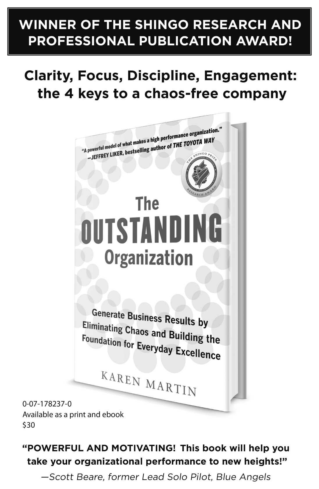